| 〔福田恆存語録〕日本への遺言 言葉 言葉 言葉 | |
| Unknown | |
| (1995) | |
【福田恆存語録】
日本への遺言
編 中村保男
谷田貝常夫
目 次
まへがき
あなたは若い頃「自分は～になりたい」と抱負を語る友を見て、自分のなりたいものが何もないことにひけ目を感じたことはなかつたか。
福田恆存氏にとつてそれはひけ目ではなく、いはば大志であつた。「私は〈～家〉とか〈～者〉といつた特定の肩書を自分につけずに人間として生きたい」と決意されて、「全人をめざす」仕事を始められた福田氏はまさにその言葉どほりの生涯を送り、文藝評論家、文明批評家、政治評論家、エッセイスト、翻訳家、劇作家、演出家、国語論者など多くの役割を時に応じて演じ分けたが、何を書いても氏は氏自身でありつづけ、たとへば政治評論においても、政治を唯一絶対の救ひとする政治主義に抗して個人としての氏の実感にもとづいた論を押し通した。
福田氏は戦後あらたに〝価値〟となつたもの、すなはち合ひ言葉としての平和や民主主義などに批判の眼を向け、私たち日本人に頂門の一針となる冷徹な洞見を随所で示し、しかも、めまぐるしく転変する時事問題を扱つても常に不動の恆久的な視点を失はず、本質的な真理の世界へと読者をいざなつてくれる。
福田氏の本を読むことは、知識の増大、情報の獲得にはあまり役立たないかもしれない。それよりもむしろ、考へるとはどういふことなのか、人間として生きる上で最も大事なのは何であるのか、といふ哲学的、宗教的、倫理的な問ひの中に身を置いて、そこから毎日をあらたに生きることを促してくるもの、それが福田氏の作品なのである。
だからと言つて、やたらに難解な哲学用語や宗教用語が氏の本に飛び出してくるわけではない。むしろ氏はさういふ専門用語を努めて避け、いや、一切排除しようとさへした気配が濃く、同時に紋切り型の常套句をなるべく使はぬやう工夫してゐる。文体においても氏は常に独創的であらうと努められたのだ。
ところで「独創的な正統派」といふ矛盾した言葉でしか表現できない福田氏の存在をつかみとるには、むろん、氏の作品そのものを読むに越したことはない。が、福田恆存とは何ものなのかをまだ知らぬ人、知つてはゐても何となく敬遠して、まだ一冊も著書を読んだことのない人などに、手頃な入門書を提供することができたら、といふのが「福田恆存名言集」である本書を発案した私の願ひにほかならない。
現代日本に、かういふことをひたすら考へてゐた作家も存在したのか、といふことを本書で知つて、それを機縁に氏の作品そのものと接して、虚無思想を包含しながらも大きな振幅をもつて生きることを説き、みづからそれを実践した福田氏のものの考へ方に直接触れたいと思ふ読者が幾人も出れば、本書の目的は達成されたことになる。さいはひ、文藝春秋から『福田恆存全集』（他に飜譯全集もある）が出てゐて、本書に収めた抜粋の元である作品のほとんどがそれに収録されてゐるので、それをお勧めしておく。
次は本書の編集についてだが、福田氏の多岐にわたる論考を、文化、政治、社会、人生一般（福田氏が論じてゐないのは経済ぐらゐのものだ）といふふうに大別し、それぞれを幾つかの小項目に分けて、その順序で各断章を配列するといふ〝正攻法〟では、単なる形式を嫌つてをられた福田氏の考へ方に反するし、何を書いても氏の主題はほとんど変らない以上、文化、政治、社会などへと断章を区分けせずに、いつたん全部を〝解体〟した上で、各章名（たとへば「悪」）と各断章名（たとへば「自由」）との関係が一目見ただけでははつきりせず、読者におやと思はせる結びつきになつてゐるといふ、さういふ形で編集を行ふ方針にした。この方針は文藝春秋出版部の森孝雅氏の発案によるものである。
たとへば第一章の「悪」の中に「機会均等」といふ断章が含まれてゐるが、現代日本の社会通念ではそれは善なのである。だが、福田氏はこの断章の中にかう書いてゐる。「自分でものを見、自分で考へる力を失つた社会集団にたいしては、機会均等ほど劃一主義の出現につがふのいい原理はない」と。この文脈では、機会均等の手段はマス・コミといふ形をとつてゐる。誰にでも同じ映像と同じ紙面を提供するマス・コミは、視聴者や読者がよほど個に徹してゐないと、画一化をもたらす。かうしてマス・コミほど独裁者に便利な機構はないといふことになつて、「機会均等＝悪」説が成立する。
この断章は、「機会均等」と名づけられてはゐるが、機会均等だけを問題にしてゐるのではなく、結末では「真の自由」が問はれてゐる。そこで断章名を「真の自由」としたはうがいいのかもしれない。が、「自由」は他にもその名を冠した断章が幾つかあるので、変化をつけるため敢へて「機会均等」を断章名とした。
なほ、各断章の末尾に、まづ原典名（「機会均等」の場合なら「指定席の自由」）を、次に『福田恆存全集』におけるその収録位置としてⅢ・二三六を、それぞれ付記してある。Ⅲ・二三六とは全集第三巻の二百三十六頁といふ意味である。
もう一つお断りしておくが、各断章はなるべく簡にして要を得たものにしたかつたので、もつばら長さの必要上、文頭や文末などを削つたり、補つたりした個所が相当ある。が、もちろん、福田氏の原文の論旨に影響するやうな改竄はいささかも行はれてゐないことを保証しておく。
反時代的な論客として福田氏は時流に抗する発言を多くしたが、実は時代の流れの行先をも見とほす先見性をもつてゐた。先見性といふものは単に時代の先を読むことではなく、現実の背後にあつて現実を動かしてゐるものにたいする透徹したヴィジョンに根ざしてゐなければ発揮できぬものなのである。「まへがき」はこれくらゐにして、早速、福田恆存氏の論理と情念の世界であると同時に、それを超えた大いなる世界への道につながつてゐる氏の作品の一端に触れて頂くことにする。
（中村保男）
日本への遺言───福田恆存語録
エピグラフ
ある精神の内部には一匹の蛔虫が棲んでゐる。それはあらゆる養分を食ひつくすが、なにものも生産はしない。が、このいやらしい虫にも一分の衿りはある。
くやしかつたら、おれが食ひきれぬほどの養分をとつてみるがいゝ。
（『否定の精神』エピグラフ・全集未収録）
悪
自由
自由といふこと、そのことにまちがひがあるのではないか。自由とは、所詮、奴隷の思想ではないか。私はさう考へる。自由によつて、ひとはけつして幸福になりえない。自由といふやうなものが、ひとたび人の心を領するやうになると、かれは際限もなくその道を歩みはじめる。方向は二つある。内に向ふものと、外に向ふものと。自由を内に求めれば、かれは孤独になる。それを外に求めれば、特権階級への昇格を目ざさざるをえない。だから奴隷の思想だといふのだ。奴隷は孤独であるか、特権の奪取をもくろむか、つねにその二つのうち、いづれかの道を選ぶ。
（人間・この劇的なるもの・Ⅲ・五六一）
機会均等
マス・コミュニケイションといふ機械文明の産物は、それ自体いかに善意に支へられてゐようとも、かつてさういふ習贋のなかつたわれわれ日本人のあひだにもちこまれると、逆にこれほど独裁者に便利な機構はないとおもはれるほど危険なものになります。自分でものを見、自分で考へる力を失つた社会集団にたいしては、機会均等ほど画一主義の出現につがふのいい原理はない。ダイジェスト文化のおかげで、今日、われわれの周囲には、死んだ対象が──いひかへれば、みごとな解決策や解説が──うんざりするほど山積してゐます。われわれはこの屍の山に埋もれて、真の自由を──すなはち対象と合一して、対象とともにある生きがひを──失つていくのでせうか。さうありたくないものです。いや、そんなことはありえない。私は民衆の健康な智慧を信じてをります。
（指定席の自由・Ⅲ・二三六）
権利
嫌煙権と同様、日照権も言葉として意味をなさない。日当りを好むのも煙草の煙を嫌ふのも、それは性向の問題であつて、権利、人権の問題ではない。単に性向と片附けられては我慢が出来ぬと怒る向きもあらうが、さういふ風に腹を立てるのも専ら由つて性向から来る。それなら、その性向の持主に附合つて言ひ直さう。日当りを妨げられ、煙草の煙に咽ぶのは迷惑の問題に過ぎず、やはり権利の問題ではない。迷惑は消極的概念であり、権利は積極的概念である。金を貸してくれと言はれれば、人は迷惑と感じ、貸した金を取立てるのは権利と考へる。それが常識といふものであらう。
消極的概念に過ぎない迷惑を積極的概念である権利に転化すればどういふ事になるか。勿論、金を貸してくれと言はれても貸さない自由はある。が、それは自由であつて権利ではない。まして金を貸してくれと言はれ、それを断る迷惑を避ける為に、金を貸してくれと言はせない事を権利として確立しようといふのは、それこそ借金の権利を否定する事であり、さういふ風に迷惑を避ける事を権利とする様な被害防止機構を完壁にして行かうとすれば、人間はやがて身動き一つ出来なくなる。自分に及ぶ被害を卻けようとして、結果は自分も被害者に脱落する。加害の権利とまでは言はなくとも、その自由の無い処では、被害を避ける自由も失はれる。
（人権と人格・Ⅶ・一八五）
正義論
自分だけの正義といふものはなく、正義はつねに主張のうちにある。相手のため、他人のためと言つたところで、どうしても人を強制することになる。強制それ自体が悪であるばかりではない。どんな正義もその半面には不正と必然悪をともなつてをり、そこには人を益するものがあると同時に人を害するものがあるのだ。......
他人にたいする寛容といふのは現代的な美徳であるが、昔は独りを慎む礼儀といふものがあつて、それは主張や表現を事とする文章の世界をも支配してゐた。たとへばエロティックな事柄を口にする場合、「デカメロン」でも「アラビアン・ナイト」でも、ユーモアやレトリックなしではすまされなかつたのである。
現代でも、そしてもつと低級な春本や猥談においてさへ、やはりそれなりに低級な笑ひを、この場合は礼儀とまでは言はぬごまかしの煙幕に用ゐてゐる。望むらくは、今日の正義の主張者が、正義論もまた猥談のごとく人前で大声に語りにくき恥づべきものと心得られんことを。
（五箇条の注文・Ⅴ・四四四）
民主主義の心理
民主主義政治の原理は、自分が独裁者になりたくないといふ心理に基づいてゐるのではなく、他人を独裁者にしたくないといふ心理に基づいてゐるのである。一口に言へば、その根本には他人に対する軽蔑と不信と警戒心とがある。
さうと気づいてもらへれば、「正義の主張は犯罪と心得べし」といふ私の忠告は極く素直に受入れられるだらう。愛の陰には色情があり、正義の陰には利己心がある。反省の篩にかければ、愛や正義の名に値するものはめつたにないことになる。それがどういふわけか、今日の日本では、民主主義だけが篩の目を逃れ、ほとんど唯一の禁忌にまで昇格してしまつてゐる。敵も身方もそれを旗印にする。民主主義の名の下に暴力を犯し、あるいは暴力を犯してそれを肯定するために民主主義を口実にする。さうかと思ふと、暴力は民主主義ではない、それに反するものだと言ひ、民主主義をもつてそれを説伏しようとする。民主主義とはそれほど便利なものか。
（民主主義を疑ふ・Ⅴ・四五一）
革命
ひとびとが考へるやうに、私はかならずしも反革命の徒ではない──たゞ悪から逃れ、悪を否定しようとする安易な考へから革命に期待をかける善意の破壊主義者に、いさゝかの共感をも持たぬまでである。革命もまた悪の力から生れ、悪を生む。既存の制度の悪にたへきれぬ人種のうちから、革命の悪にたへうる革命家が生れることを、私は期待できない。
（告白といふこと・Ⅱ・四〇六）
民主主義過信
民主主義とは為政者の側が最も大事なことを隠すために詰らぬことを隠さぬやうにする政治制度である。
（外交を内政に利用するな・Ⅵ・三二五）
私は民主主義を否定してゐるのではない、民主主義だけでは駄目だと言つてゐるのである。今日、私達の政治体制として民主主義以外のものは考へられない。とすれば、政治や政治理念だけで、今日の政治的混乱を処理する事は不可能だといふ事になる。恐しいのは利己心と怠惰と破壊と、そしてそれらを動機附けし理由附けする観念の横行である。考へるとは今ではさういふ観念を巧みに操る事を意味する様になつてしまつた。さういふ世の中で本当に物を考へ、物を育てて行く事がどんなに難しい事か。......
（偽善と感傷の国・Ⅵ・二〇五）
民主主義
民主主義下においては、ウォータゲイト事件などその恰好の一例だが、人々は悪の摘発に熱中するが、善の推進にはそれほどの情熱を持たない。また「弱者」や「無能者」の救済には力を入れるが、「強者」や「有能者」に対しては、その瑕瑾すら許さうとせず、彼等の手脚を縛つて、専ら引きずり降し策に腐心する。他人が自分の頭を土足に掛けはせぬかといふ警戒心のみが発達し、そこから生れた規則や制度が個人の情熱や人類の生命力を抑圧する。いや、事実はその逆かも知れない。人類が生命力を失つて行く過程に適応した政治思想が民主主義だと考へるべきであらう。随つて致命的な事には、それからは「待つた」の声は掛つても、「それ、行け」の声は期待出来ない消極的概念なのである。が、今やこの歯止め機構はアメリカにおいては完壁に近いものになつた。......そしてアメリカの手によつて、そのアメリカよりも行政府、権力を弱体化されてしまつた戦後の日本では、この民主主義といふ歯止め機構は完壁を通り越して、国家社会を完全な麻痺状態に陥れるほどの役割を果しつつある。......ひよつとすると、アメリカも、そしてヨーロッパまでも、自由世界全体が日本と同じ様になるかも知れない。人類は熱核兵器、エネルギーや資源の不足、公害、腐敗政治などの物質的原因によつてよりも、この歯止め機構の完備によつて、またそれぞれの間における不信感に基づく相互牽制といふ精神的原因によつて先に滅亡してしまふかも知れないのである。
（日米両国民に訴へる・Ⅵ・六五四）
現行憲法Ⅰ
現行憲法に権威が無い原因の一つは、その悪文にあります。悪文といふよりは、死文と言ふべく、そこには起草者の、いや翻訳者の心も表情も感じられない。吾々が外国の作品を翻訳する時、それがたとへ拙訳であらうが、誤訳があらうが、これよりは遥かに実意の籠つた態度を以て行ひます。といふのは、それを翻訳しようと思ふからには、その前に原文に対する愛情があり、それを同胞に理解して貰はうとする欲望があるからです。それがこの当用憲法には聊かも感じられない。今更ながら欽定憲法草案者の情熱に頭が下ります。良く悪口を言はれる軍人勅諭にしても、こんな死文とは格段の相違がある。前文ばかりではない、当用憲法の各条項はすべて同様の死文の堆積です。こんなものを信じたり、有り難がつたりする人は、左右を問はず信じる気になれません。これを孫子の代まで残す事によつて、彼等の前に吾々の恥を曝すか、或はこれによつて彼等の文化感覚や道徳意識を低下させるか、さういふ愚を犯すよりは、目的はそれぞれ異るにせよ、一日も早くこれを無効とし、廃棄する事にしようではありませんか。
（当用憲法論・Ⅵ・二六二）
現行憲法Ⅱ
私は当時の日本の政治家がそれほど馬鹿だつたとは思はないし、政治家といふ職業は憲法学者ほど気楽に出来るものとも思はない。改めて強調するまでもありますまいが、これは明かに押附けられて仕方無く作つた憲法です。如何にも腑甲斐無いとは思ひますが、当時の実情を考へれば、情状酌量出来ない事ではない。しかし、それならそれで事情を説明して、国民の前に一言詫びれば良いと思ひます。アメリカも公式に謝罪した方が宜しい。さうすれば、吾々はさつぱりした気持で、それこそ自発的に、吾々の憲法に天下晴れて対面が出来るでせう。今のままでは自国の憲法に対して、人前には連れて出られない妾の様な処遇しか出来ません。尤も、それを平和憲法として誇つてゐる人も沢山をりますけれど、それはその人達が妾根性を持ち、事実、妾の生活をしてゐるからに他なりません。
（当用憲法論・Ⅵ・一五三）
観念語
最も不愉快なことは、人々は表に「マス・コミ」の「害」を論じながら、裏ではそれを除去しようといふ努力をほとんどしてゐないことだ。それが言ひすぎなら、「害」を除去するための具体的な行動より、それを指摘したり分析したりする抽象的な操作の方を、興がつてゐるといふことだ。つまり、「マス・コミ」の「害」とは言つても、人々はそれが本当に「害」であると本気で思つてゐないのではないかといふことになる。少くとも私はさう思ふ。それほどの「害」はない。話が大げさ過ぎるのである。なんでもさうだ。「論」になると話が大げさ過ぎてくる。「マス・コミ」といふ言葉の流行が、その何よりの証拠である。なぜ、具体的に新聞を論じないのか。テレビを、あるいはラジオを論じないのか。さらに何某新聞の、何欄について論じないのか。「論」にして話を大げさにするために、あらゆるものを引つくるめた「マス・コミ」なる観念をでつちあげたのではないか。
どうも観念といふやつは、さういふことには甚だ便利であるやうに思はれる。といふより、その便利のためにこそ、人は観念語を造り、さらにその上に観念語を造るといふ際限もない道をたどるのである。早い話が、特定の誰それの薄情や欲ばりについて話すのは気がひけるが、抽象的な人間の利己心について一般論を試みる分には一向さしさはりがないし、さうすれば自分の欠点まで他人事のやうに論じられるのである。
（マスコミといふことば・Ⅴ・四五六）
新聞週間
「新聞週間」といふのは、なんであらうか。「新聞人たるものは、この機会に新聞製作の心がけについて反省しよう」といふ意味なのであらうか。......
新聞人の反省なら、社内の掲示ですむ。もちろん報道として、「交通安全週間」や「動物愛護デー」程度に、それが行はれてゐることを読者に知らせるだけで、よささうに思ふ。どうしてもうなづけないのは、新聞が新聞の効用を讃美する標語を新聞にのせて、大々的な年中行事にしてゐることだ。業界のお祭りにしては、どうも示威がすぎる。もし、たとへば文部省が「教育の総本山は文部省」などとやつたら、新聞はおそらく黙つてはゐまい。税金でそんなポスターを作るとはけしからんといふだらう。が、さうむきになつて考へなくてもいゝのかもしれぬ。つねに他人の報道ばかりしてゐて、報道してくれ手のゐない公器が、つい、さゝやかな私情をだして人の注意をひくために、年に一回、大あくびをする、それが「新聞週間」といふものなのだらう。
（きのふけふ・Ⅳ・四一九）
新聞をたゝへる標語を新聞にのせても、そこには新聞をつくる自分たちをたゝへさせたといふ罪の意識は出てこないのである。こゝでも、新聞は神になる。
（私情でも筋を通せ・Ⅳ・四三五）
新聞
外国のことは別として、現在の日本で、最強力者は新聞である。私はさう思つてゐる。「政府がかういつてゐる」といふことは「新聞にかう書いてある」といふことほど、国民の信従能力を刺戟しない。
（素顔のないもののみが風潮を作る・Ⅲ・五一一）
新聞はあくまで事実の報道といふ形で、国民を一定の方向に追ひやることができますが、さらにその限度を超えて、最初から「輿論はかうだ、かうだ」と国民の頭上におつかぶせていくとなると問題です。ことに一般の国民は難解拙劣な政治記事を読まずに、見だしや煽情的な社会面を読みがちですから、さういふ工作は易々たるものです。もちろん、国民の大部分はそれに動かされはしませんでした。
（輿論を強ひる新聞。・Ⅲ・五〇六）
急進主義と漸進主義
私は漸進主義者ではないが、漸進的な生き方を好む。歴史的に考へれば、最初に進歩主義が起り、その反動として保守主義が起り、さらにその反動として進歩主義が急進主義に転じたのにたいして、またその反動として生じたのが漸進主義である。したがつて、それは進歩主義の右、保守主義の左に位置する「穏健な」中道思想と見なされる所以である。漸進主義がもしさういふものに止るなら、それは他の何々主義と全く同一の地盤の上に横に並んだものであつて、その間にはただ相対的な差があるに過ぎない。蟹がその甲羅に似せてしか穴を掘ることが出来ぬのと同じに、それらはたがひに相手を規定し合つてゐるのだ。
（政治主義の悪・Ⅴ・二一五）
漸進主義といふ言葉と急進主義といふ言葉について、人々はその両者の違ひがそれぞれの手段にあると考へやすい。あるいは単に速度の相違にあると考へやすい。が、さうではない。急進主義は進歩を社会改善の唯一最高の手段と見なす考へ方であり、それにたいして漸進主義はそれを幾つかの手段の一つとしか見ない考へ方である。したがつて、両者は程度の差ではなく、進歩にたいする本質的な考へ方の相違なのだ。言ふまでもないが、進歩主義はその発生において、また日本における在り方において、急進主義たらざるをえぬ宿命をもつてゐる。
（進歩主義の自己欺瞞・Ⅴ・一七四）
進歩主義Ⅰ
自然は変化し進歩するものである。進歩は自然そのものである。したがつて、本質的に考へれば、進歩は必然悪なのだ。だから、それは良き場合においては、必然善になる。つまり、善悪を越えた必然だといふことに過ぎない。......
進歩主義にあつては、その自覚が欠けてゐる。日本の進歩主義者は、進歩主義そのもののうちに、そして自分自身のうちに、最も悪質なファシストや犯罪者におけるのと全く同質の悪がひそんでゐることを自覚してゐない。一口に言へば、人間の本質が二律背反にあることに、彼等は思ひいたらない。したがつて、彼等は正義派である。愛国の士であり、階級の身方であり、人類の指導者である。そのスローガンは博愛と建設の美辞麗句で埋められてゐる。正義と過失とが、愛他と自愛とが、建設と破壊とが同じ一つのエネルギーであることを、彼等は理解しない。彼等の正義感、博愛主義、建設意思、それらすべてが、その反対の悪をすつかり消毒し払拭しさつたあとの善意だと思ひこんでゐる。
その何よりの証拠に、彼等は一人の例外もなく不寛容である。自分だけが人間の幸福な在り方を知つてをり、自分だけが日本の、世界の未来を見とほしてをり、万人が自分についてくるべきだと確信してゐる。そこには一滴のユーモア（諧謔）もない。諧謔とは、過去も未来と同様の生存権を有し、未来も過去と同様に無であることを、私たちの現在を通して知ることで、そこにしか私たちの「生き方」はない。
（進歩主義の自己欺瞞・Ⅴ・一七六）
進歩主義Ⅱ
もし進歩が必然悪ならば、進歩主義は万能薬にはなりえまい。自由も個人もその必然悪として自由主義、個人主義を生じた。民主主義にしても議会主義にしても同じことではないか。......。
あらゆる信念を狂信として憎みながら、もしお前は何を信じてゐるかと問はれた時、それは人と人との結びつきだと答へた人がゐる。その言葉は人類とともに古めかしい。人は、たとへそれが真であることを認めたにしても、そんなことを言つてみてどうなるか、どうしたらいいのか、さう応じるであらう。方法論はない。当りまへである。めいめいがやることだからだ。が、方法論が見つからぬからといふのは、それを無視する理由になるか。それゆゑにそれは価値がなく、進歩が価値であり、能率が価値であり、自由や平等が価値であると言へるか。どうにもしやうがないから、それはさておいて出来ることをするといふ。それはよい。が、やがてそのうちに、それで何でも解決できると思ひあがりはじめたのが、現代における進歩主義の迷妄ではないか。人と人との結びつき以外に信ずべきものはないといふ、この単純な真理に、私たちはもう一度、立ちかへるべきである。
（進歩主義の自己欺瞞・Ⅴ・一七八）
カタカナ英語
日頃から気になつてゐるのだが、どうしやうもないことが一つある。英語の氾濫である。特に、放つておけないのは「大衆英語」である。戦後は大衆が好んで英語を使ふやうになつた。皆が使ひだせば、こちらも使はねば用が足りない。初めはいやだなと思ひながら使つてみる。それに相当する、しかも長年つれそつた国語が立派に控へてゐるのにと気がねしながら使つてゐるうちに、いつの間にか良心は麻痺してしまひ、その外国語でないと情がわかなくなつて、もとの国語の方がよそよそしく感ぜられてくる。私のやうな律義者には、かういふ状態はやりきれない。いつそ女房の日本語と手を切つて、正式に英語を国語としたはうがよくはあるまいかと、いぢらしい思案も出てくるのである。
（天邪鬼・Ⅴ・四九四）
甲子園
私は大学を出て、間もなく地方の旧制県立中学校に赴任した。当時、その学校は甲子園の優勝候補であつた。さうなると校長が野球に夢中になるばかりではない、町会議員始めその町の有力者が夢中を通り越して狂熱的になる。町の名を全国に鳴り響かせようといふ無邪気なのもあれば、その結果何等かの余得に与らうといふ邪気のあるのもある。当然、彼等は校長を通じて吾々教師に圧力を掛ける。
今から考へれば若気の至りと笑つて過せるが、私はお蔭でその学校をお払ひ箱になつた。五年生の投手の白紙答案に零点を附けたのと、小学校から有力選手を引張るため、入試に落第点を採つた子供に入学許可を与へようとする及落会議で反対意見を述べたのと、その二つの理由による。その頃の県立中学でさへ、さういふ状態だつたのだから、今日ではどういふ事になつてゐるかと怪しんだとしても、あながち猜疑心が強過ぎるとは言へまい。高校野球の新聞記事は試合の経過や勝負ばかりでなく、さういふ裏話も載せて貰ひたいものだ。不祥事は必ずしも受験地獄からのみ生じるとは限るまい。政治部や社会部の記者だけの専有物とは限るまい。
（東風西風・Ⅵ・三九四）
個性教育
どうやら最近の教育界を支配してゐるものは、条件反射説らしい。パヴロフの犬のやうに子供を教育しなければならぬといふのです。科学的であるためには、私たちは自分の扱ふ対象を客体化し、それを固定的な面においてとらへようとしなければならない。相手の主体性を抹殺し、自己の支配下に組み入れようとするのです。「教育狂」といふものは、いづれはそこまでいかねば気がすまなくなる。教育ほど我欲を満足させるものはなく、「教育狂」ほど我の強い人間はゐない。なぜなら生きた人間を相手にしてゐるからであります。
しかも、教育は善行であります。教育衝動は善意であります。誰もさう思つてゐます。だから「教育狂」のエゴイズムはいつも見のがされる。しかも、それには「おためごかし」の美名がかぶせられるのです。現在流行の「個性尊重」もその一つです。ベルで教育しようとしてゐながら、「個性尊重」もないものだが、考へてみれば、この「個性尊重」といふ合言葉も、今では一つのベルになつてゐるのではないでせうか。「個性」といふ肉はないのに、「尊重」といふベルが機械的に鳴りつづけ、万犬ことごとく画一的な反応を呈するといふだけのことでせう。それが「個性」といふものでせうか。
現在、教育界で「個性」と呼んでゐるものは、むしろ「適性」あるいは「機能」といひかへるべきです。アメリカの教育において重視されてゐる「適性検査」も、つまりは「機能」の見わけであつて、個性とはなんの関係もない。
（教育・その本質・Ⅳ・三〇七）
小心
酒を飲まず、花を愛することと汚職とは両立しうる。村の働き者と戦争における残虐行為とは両立しうる。「汝の敵を愛せよ」といふ教へと宗教裁判とは両立しうる。要するに、あらゆる善とあらゆる悪とは両立しうる。......
悪や罪などといふものは、私たちがさう思つてゐるほど、善良な市民生活から遠いところにあるものではない。たゞ、私たちがそのわなに陥らないのは「小心」のためであり、機会がないためなのである。格別道義心に富んでゐるためではない。見つからなければ、「きせる」位は誰でもやりかねない。
（悪党にバッジはない・Ⅳ・四三八）
安楽死
誰でもが善人になり得る社会、誰でもが善人でゐられる社会、言換れば、悪を行ひ、他人に迷惑を掛け、後ろめたさを感ぜずにゐられる社会、そこでは、良心も道徳も存立し得ず、人格も消滅し、誰もが透明人間に化する。人間が物体に転落する。その一番手取り早い例が安楽死の法律化である。所謂植物人間は言ふまでもなく、医者として所詮は助からぬ事が解つてゐる病人、或はその家族を苦しみから救ふ為に、安楽死を法律的に認めろと言ふ。が、これほど危険な考へ方は無い。いづれは死ぬといふ事が解つてゐるといふ事が医学的に証明し得るか否かは別問題としても、病人、少くとも家族は苦痛に堪へながら、一方では奇蹟を祈り待つてゐるかも知れない。
が、それより重大な事は、安楽死を法的に正当化する事によつて、医者は職業的にも道徳的にも何等良心の呵貴も無しに、時には明らかな殺意を以て人を殺す自由を与へられるといふ事である。安楽死は宜しく一医師の個人的判断と良心とに委ねるべきであり、法といふ外的メカニズムに委ねてはならない。医者の判断と良心とに委ねられてゐる限り、彼は自分の判断の正否に悩み、それがたとへ間違つてゐないと信じても、敢へて死期を早める行為に良心の痛み、後ろめたさを感じる筈である。その後ろめたさを感じる事によつて彼は人間であり得、人格を保ち得る。
（人権と人格・Ⅶ・一八九）
生命尊重Ⅰ
私たち自身の青年時代を顧みて、私も戦争で死ぬのはいやだつた。しかし、戦争で死ぬのがいやだといふことが、そのまま戦争否定の名目になりうるとはおもひもおよばなかつたのです。平和論の根拠になるとは考へませんでした。それが現在、さうなりえてゐるのは、やはり、第二次大戦の結果でありませう。青年たちは、個人の人命以上に尊いものはないといふことを教へられたのであります。
それがどうしても私には理解できないのです。不愉快な憶ひ出、無謀な戦争、軍人の横暴、その他さまざまな事実にもかかはらず、それとは別個に、戦争とか死とかいふものを、ひとつの現実として認めざるをえないし、個人の生命と食ふに困らぬ生活と、この二つを無上のものと考へるわけにはいかないのです。
それなら個人の生命より大事なものはなにかと問はれると困る。かんたんに答へられることではありません。しかし、個人の生命より大事なものはないといふ考へかたは、大変な危険思想であつて、それは裏がへしにすれば、任意に他人の命を奪つてもいいといふことになるのです。
（戦争と平和と・Ⅲ・六二）
生命尊重Ⅱ
平和論とか再軍備反対とかいふものが青年一般に支持されてゐる根柢には、生命尊重の考へかたがあります。戦争中の生命蔑視の反動でありませう。さう考へれば納得がいくのですが、これは問題だとおもひます。そして、遺憾なことに、日本以外には、ほとんどどこの国にも通じない思想であります。昔は個人の生命よりも祖国が大切だといふやうなことをいつた。祖国のためには死ぬことを辞さなかつたのです。祖国といふと昔の国粋主義の臭ひがしていやですが、国や民族の生きかたを守らうといふ気もちは是認できます。個人の生命より全体の生命を大事にするのが当然でせう。
が、戦後、その全体の生命としての国家といふ観念が失はれてしまつた。ですから、個人の生命より大事なものはなくなつたのです。それを無理に焦つて、変な愛国心を捏造しようとしてもだめです。そんな附焼刃でどうにもなりはしない。が、個人の生命より大事なものはないといふのは変態だといふことくらゐ自覚しなければなりますまい。それを常態として、いや、最高原理として、戦争と平和とを論じることはできません。その点を、今の若い人たちに、よく考へてもらひたいとおもひます。
（戦争と平和と・Ⅲ・六三）
生命尊重Ⅲ
言ふまでもなく、最高価値としての平和は、それによつて何等かの文化的価値を守るためのものではなく、他の凡ゆるものに替へてもこれを守るべきものとなります。尤も、この場合、「凡ゆるものに替へても」は決して「命に替へても」といふフレイズには繋りません。なぜなら平和といふのは生命保存の本能といふ言葉の代用語だからです。もともと自分達には命に替へても守りたいもの、或は守るに値するものは何も無い事を教へられたからこそ、平和が最高価値になつたのです。命に替へても守りたいもの、或は守るに値するものと言へぱ、それは各々の民族の歴史のうちにある固有の生き方であり、そこから生じた文化的価値でありませう。その全部とは言はないまでも、その根幹を成すものをすべて不要のもの、乃至は悪いものとして否定されれば、残るものは生物としての命しかありますまい。平和が最高価値と言ふのは、生命が最高価値といふ事です。その意味でもエゴイズムとヒューマニズムとの擦り替へ、或は混同が生じてをります。
（平和の理念・Ⅴ・三二五）
迷 信
生死
ヒューマニストたちは、死をたんに生にたいする脅威と考へる。同時に、生を楯にあらゆることを正当化しようとする。かれらにとつて、単純に生は善であり、死は悪である。死は生の中絶であり、偶然の事故であるがゆゑに、できうるかぎり、これを防がねばならぬと信じこんでゐる。が、さうすることによつて、私たちの生はどれほど強化されたか。生の終りに死を位置づけえぬいかなる思想も、人間に幸福をもたらしえぬであらう。死において生の完結を考へぬ思想は、所詮、浅薄な個人主義に終るのだ。中世を暗黒時代と呼び、ルネサンスを生の讃歌と規定する通俗的な史観や、封建時代に死臭をかぎつけ、現代に生のいぶきを感じる過つた人間観は、すべて個人主義的なヒューマニズムの所産にほかならない。
生はかならず死によつてのみ正当化される。個人は、全体を、それが自己を滅ぼすものであるがゆゑに認めなければならない。それが劇といふものだ。そして、それが人間の生きかたなのである。人間はつねにさういふふうに生きてきたし、今後もさういふふうに生きつゞけるであらう。
（人間・この劇的なるもの・Ⅲ・五九二）
平和
平和とは......戦争の事前と事後にある戦争の欠如状態、即ち、戦争してゐないといふだけの事です。要するに、単なる事実を示す消極的な意味に過ぎず、何等かの価値を示す積極的な意味として使用し得ぬものであります。少くとも過去においては、特殊な平和主義者以外の大部分の人にとつてさういふものだつたのです。詰り戦争さへ無ければ好いのであります。が、戦争さへなければ好いといふ事は、或る価値を生むのに都合の好い状態ではあつても、その事自体を価値と見倣す訳には行きません。のみならず、或る幾つかの価値を生むのに都合が好くても、それは必ずしも他の幾つかの価値を生むのに都合が好い状態を意味しません。讐へば勇気や自己犠牲の様に戦争状態であつたはうが生むのに都合の好い価値といふものも存在します。しかし、だからといつて戦争自体を価値と見倣す訳には行きますまい。尤も日本の平和思想の弱点は、平和状態であつたはうが生むのに都合の好い価値といふ事についてすら、一顧の考慮をも払はなかつた事にあります。言ふまでもなく、平和は単なる事実や手段を示す消極的な意味ではなく、それ自身直ちに価値や目的と成り得る積極的な意味として通用してしまつたからです。
（平和の理念・Ⅴ・三二一）
......からの自由
平和がfreedom from death（死からの自由）であるならば、それはfreedom from slavery（隷属からの自由）より急務ではないだらうか。また自由に国の内外を旅行し得る自由を持ち得ぬ事と、その自由があつても、実際にさうするだけの余裕を持ち得ぬ事とは、程度の差に過ぎず、それはやがて解消し得る事ではないだらうか。私がさう思つてゐるのではありません。大部分の人がその考へに賛同するのではないかと思はれます。平和といふ言葉が途方も無く出世してしまつた一方で、自由といふ言葉はひどく落ちぶれてしまつた今日、私は次の様な疑問を懐かざるを得ません。といふのは、自由をもつて平和に抗し得るか、或は、自由といふ概念を単にfreedom fromといふ政治的概念から道徳的概念の中へと救出する必要があるのではないかといふ事です。私の推測が日本の西洋化、近代化だけを見ての単なる杞憂であれば幸です。しかし、文明の進歩とは凡ゆる道徳上の問題を政治上の問題に、更にそれを制度上、法律上の問題に切換へて行く事だと定義出来ないでもありません。絶対的平和主義もその産物の一つに過ぎますまい。
（平和の理念・Ⅴ・三三二）
寛容
寛容はありうるか。寛容の美徳は不寛容に対して何をなしうるか。それは際限も無く譲歩する事だけだ。そもそも、この場合、寛容といふ言葉は、使用者がさう思つてゐるのとは相反して、道徳や精神とは全く無関係のものである。ただ厭な相手に我慢し、それが滅びるのを待つといふ戦術用語に過ぎない。平和共存と何等変るところは無い。自由の場合と同様、すべての道徳的な言葉が、単なる物理や生理の能率を示す言葉に堕してしまつた。この事ほど人間の物への転落を如実に示すものはあるまい。しかも、人々はその事実に気附かず、それらの言葉になほ道徳的な支柱があると思ひこんでゐる。自由主義の弱味とはその事である。
人間の物への転落は、自由そのものを外在化し、生そのものを目的化した事に端を発したのである。もしさういふ自由、さういふ生が価値であるなら、何の事は無い、それは弱肉強食といふ原始的な自然の原理の復活に過ぎぬではないか。要するに、価値の否定である。生の価値は生の否定を仲立ちとしなければ出て来ない。言換れば、それは死の恐怖の否定である。フックが「平和より自由を」と言ふ時、それは死の恐怖からの自由を意味してゐるのであつて、狂信どころか、極くまともな常識に過ぎぬではないか。
〔注・フックはバートランド・ラッセルの「自由より平和」に反論した〕
（自由と平和・Ⅴ・三一〇）
醜聞
英国のプロヒューモ前陸相の「醜聞」事件が明るみに出た当時から、日本の週刊誌が相手方の傾城キーラーを中心に賑々しく書きたててゐる。動機は単純である。西も東もない、人間の好奇心は「美談」よりも「醜聞」を愛する、唯それだけの事だ。
私はさういふ好奇心自体を軽蔑しはしない。しかし、馬鹿々々しいのは、この種の事件に吾々の旺盛なる好奇心を満足させてくれる内容の殆ど無き事、痴漢に関する記事と少しも変りはなく、それでも性懲りも無く、大衆はそれを読みたがるといふ事だ。実に馬鹿々々しいと思ふのは、それを「上流階級の頽廃」と結び附ける事によつて、自分の余り上等とは言へぬ好奇心を正当化する人種がゐるといふ事だ。あんな事は頽廃でも何でもない、プロヒューモ氏は要するにヘマをやつたといふだけの事だ。
それを「上流階級の頽廃」と言ひ得るほど、吾々「中下流」の性生活が道徳的であり、健全であるとは必ずしも言へない筈である。総じて何についても言へる事だが、殊に性においては、自分とさして変らぬ行為も、他人の事となると、とかくいかがはしく不潔に見えるものらしい。そこから「醜聞」に対する飽く事無き好奇心が生れるのであるが、ヘマと背徳とは飽くまで別の次元に属するものであり、両者を混同する無意識の偽善は、吾々の道徳感の曖昧なる事を証拠立てるだけの事に過ぎまい。
（きのふけふ・Ⅴ・五八六）
「大衆」とは何か
私は「大衆」そのものを信じない前に、「大衆」といふ言葉を信じない。その用ゐ方を信じない。それが第一である。第二に、さういふ用ゐ方に乗じる「大衆」そのものを信じない。第三に、「大衆」とは一体何か、それをよくよく考へたうへで、なほかつ私は大衆を信じない。......
本当に、大衆とは何か。そのことを人々は考へてみたことがあるのか。その意味がよく解つてゐて、その言葉を用ゐてゐるのか。おそらくさうではあるまい。解るも解らぬもない、誰も大衆といふものを実際に見たことはないはずだ。それは抽象概念としてのみあるものであつて、その言葉の対応物は現実には存在しないものだからである。
私達が見ることの出来るものは一人一人の人間であり、個人である。安保デモの時のやうに何十万の人間が集つても、私達は個人個人しか見ることが出来ない。もちろん、そこにはその一人一人の彪大な集りがある。が、その集りは、すなはち目に見える集りは、大衆ではなくて群衆である。では、大衆と群衆とはどう違ふのか。さういふことすら一度も考へてみたこともない人間が、大衆を信じないといふ私の言葉に機械のやうに機械的な反撥を示す。考へてみたこともないからだ。無条件に大衆といふ言葉を信じ、それをただ言葉として押しつけてくる風潮を信じてゐるのである。
（大衆は信じうるか・Ⅴ・二四一）
話合ひⅠ
私の処へ来た週刊誌の記者は大きな勘違ひをしてゐた。暗殺は非民主主義的であり、銃器の売買や保持が許されてゐるアメリカ、警官が学生のデモ隊を厳しく取締るフランス、いづれも日本に較べて野蛮で非民主主義的ではないかと言ふのである。私は、問ひ返した、では、あなたの考へてゐる民主主義とは一体どういふものなのかと。彼は打つて返す様に答へる、それは物事を暴力によつてではなく話合ひによつて解決する事だと。これはとんでもない誤解だが、大部分の日本人が同じ様な考へを懐いてゐるに違ひ無い。
だが、私はさうは考へない。現代の複雑な社会機構において、話合ひによる解決の機会は減少する一方である。嘗て家庭は話合ひによる解決が最も期待出来た場所であり、話合ひによる解決に頼つて成立してゐた最小集団であつた。が、戦後の新民法はさういふ話合による暫定的解決を、言換れば最終的解決を回避する為の馴合ひを禁じ排する為に採用されたものではなかつたか。そしてそれが民主主義といふものなのではないか。民主主義とはさういふ乾いた冷たい政治思想なのであつて、話合ひの成立する温情主義的世界と対立するものではないのか。
（偽善と感傷の国・Ⅵ・一九七）
話合ひⅡ
今日、民主主義は「話合ひ」の政治だと言ひ、暴力の防波堤だと言ふ。しかし、ディアレクティック（問答法）とレトリック（弁論術）を欠いた言論は暴力であり、暴力を誘発する。私は力と力との衝突を目的と目的との衝突と解するから、それを否定しない。だから、それを論争といふ代償行為に流しこめと言ふのだ。民主主義といふのは論争の政治である。それを「話合ひ」の政治などと微温化するところに、日本人の人の好さ、事なかれ主義、生ぬるさ、そして偽善があるのだ。和としての「話合ひ」ではない、勝負としての論争が必要なのである。たがひに自分の方が真になることを証明しあひ、時には相手をごまかしてやるがよい。ごまかされた方が悪いのだ。ごまかしは悪であり、そのための雄弁は悪であるといふ偽善国に、民主主義が発達したためしはない。ソフィストを生んだのは、民主主義の元祖である古代ギリシアではなかつたか。
（論争のすすめ・Ⅴ・二五八）
「世代の断絶」
言葉が現実を離れた流行語となつて世間に横行し、親子、師弟の間に決定的な溝を作り、両者の関係を荒廃せしめる危険がある。なぜなら、親も子も別の時代なら、といふのは「世代の断絶」といふ言葉が発明されてゐない時代であつたら、殆ど気附かずに済んだであらう同じ様な思想感情の食違ひを、この「世代の断絶」といふ拡大鏡を用ゐて、どうしやうも無い決定的なものに育て上げてしまふといふ過ちを犯しがちだからであります。
（「世代の断絶」といふ事・Ⅵ・二一八）
代議士
乱暴なことを言ふやうだが、何年目かに与へられる、それも唯の一票で、全社会人中最も低劣だと言はれる陣笠代議士を選ぶといふ、わづかそれだけの権利を与へられただけで、主権在民も何もあつたものではあるまい。もしその気になつてゐる人がゐたら、やはり何かにだまされてゐるのである。第一に、代議士といふとまるで国民の代弁者のやうに聞えるし、さう思つてゐる人もゐるらしいが、実際は党の代弁者ならぬ代数者に過ぎないではないか。人間ではなく、数であり記号である。選挙のたびに党か人かといふ愚問が提出され、それがまた甚だ高踏的に論ぜられるが、これも何かにだまされてゐるのであらう。代議士は始めから人ではない、数である。もし人であるとすれば、問題は彼が何人分であるかといふ、その党内、党外の勢力にある。何人分といふのは、つまり数ではないか。
（民主主義を疑ふ・Ⅴ・四五〇）
主権在民
日本国憲法は主権在民を謳つてゐますが、これが誤つて受取られ、人民一人一人が主権者であると解釈されてゐる様です。そこには権力だけがあつて、権力の対象は存在しないかの様に思はれてゐる。勿論これは誤りで、主権在民とは、人民に主権のよりどころがあるといふことであり、同時に権力の対象は人民にあることに間違ひはありません。そして、日本では代議制をとつてをりますので代議士に政治を委ね、多数の代議士を占めた政党が政治権力をもつのであり、これが議会制民主主義といふものであります。ところが今日、主権在民を誤解し、直接民主主義を考へる人達は、議会制民主主義に基づいて政治をする政府や与党を、充分に民主主義的でないとして、民主主義の名において批判します。同じ民主主義がついても、直接民主主義と議会制民主主義とは、その意味するところが全く違つてゐるのです。どうしてかういふ間違ひと混乱が生じたのか。よく考へてみると、それは、日本人の民族性からくる弱点と、本来民主主義そのものに属する弱点とが融合して、いよいよその弱点を露呈してしまつたからではないでせうか。即ち、民主主義そのもののもつ弱点が、日本に入つてくると更に拡大されて出てくる。そしてそれは弱点だけと言つてもよいものになつてしまつたのではないか。それはやはり日本人の民族性によつて助長されたものではないかと思ひます。
（民主主義の弱点・Ⅵ・二七二）
「象徴」天皇Ⅰ
私には「象徴」といふ言葉の意味が解らない。法律用語としてならともかく、日常生活ではどういふ意味に使はれてゐるだらうか。新憲法以前には生活語としてはほとんど用ゐられてゐなかつたやうだ。わづかに文学用語として、それも実に曖昧に用ゐられてゐた。
そんな国語として熟さぬ言葉を憲法第一条に用ゐて、解つたやうな解らぬやうな気もちで十何年も過してきて、私たちは今なほ恬然としてゐる。憲法学者、政治学者、その他の社会科学者、および政治的関心の敏感な「文化人」たちが、保守と革新とを間はず、このやうな無意味な言葉を看過してきたのは、新憲法の観念のためだけであらう。誰も新憲法にだけは口出しできぬからだ。いつの世にもタブーはなくならぬとみえる。
天皇は人間になつたと言ふ。それなら、一人の人間が多くの人間の「象徴」になるといふことがどうして起りうるのか。国民一人一人の「象徴」でなく全国民が一体になる同胞感の「象徴」であるといふなら、どうして生身の人間が同胞感などといふ抽象的な属性の「象徴」たることが出来るだらうか。それではふたたび天皇に人間たることを禁じることになる。同胞感に限らぬ、どんなささいなことでも、たとへば勇気でも深切でも、私たちがさういふ抽象的な属性の「象徴」たらうとすれば、全生活をあげてそれにならうとする結果、身動きの出来ぬ非人間的な存在にならざるを得なくなるだらう。天皇を「象徴」と規定することと天皇の「人間宣言」とは矛盾するものである。
（象徴を論ず・Ⅴ・四二九）
「象徴」天皇Ⅱ
今さらそんなことを言ふのは気が退けるが、日本人の神といふ言葉は西洋人のそれと異り、絶対的な唯一神を意味しない。さういふ抽象性はないのだ。それはもつと具体的なものであり、具体的なものについての比喩なのである。神とはそもそも最初から「神のごときもの」なのであるから、日本人は人間が神になることを少しも矛盾とは思つてゐないのだ。神は私たち人間から隔絶されたものでもなく、人間を拒絶し裁くものでもなく、私たち人間がそれに自分を感情移入できるもの、あへて言へばそのためのものだつたのである。
なるほど国学の亜流がそれを曲解し、さらに神道がそれに便乗し、薩長土がそれを利用した。だが、国民感情の底流はほとんど変化してゐない。人々は神といふ言葉を「神のごときもの」の意に理解し、そのやうに天皇に感情移入してゐるのだ。......
「象徴」といふ言葉はその程度の神の意味を有してゐる。「象徴」といふ言葉はいけない。憲法に用ゐるべき言葉ではない。旧憲法でも神といふ言葉は用ゐず、はつきり、「元首」としてゐる。「象徴」よりは「元首」の方がよいに決つてゐる。「元首」といふのは政治上の性格、機能を表すものだ。国政上の一つの機関、一つの位置を表すものだ。
（象徴を論ず・Ⅴ・四三〇）
レトリック
現代の日本ではレトリックを言葉のごまかしと解し、これを卻ける傾向が一般である。近代日本文学も専らその方向を辿つて来た。が、レトリック無しに言葉の藝術としての文学は成立たない。更に言へば、それでは言語生活そのものも成立たない。レトリックとは言葉による建築術なのであつて、譬へばｎａｔｕｒｅの様に日常生活の次元では一般に一つ乃至は二つの意味にしか使はれてゐない語を、何回何十回と繰返し使つて行くうちに、その求心力と遠心力とを相互に対立させながら強める事なのである。さうする事によつて、読者、或は観客は、それまで自分の内にあつて無関係に分裂孤立してゐた表象が一つのものとして統合され、日常生活とは異つた次元に完全な世界を発見する。言換れば、秩序の恢復を得るのである。
（唯一語の為に・Ⅵ・四二一）
伝達
言葉の本質は意の伝達にあるのではない。そもそも意の伝達などといふ事があり得るのか、もしそれが可能だと思つてゐるなら、癌の痛みを他人に移せるかどうか考へて見るがよい、その坤きは同情や涙を誘ふ事が出来るとしても、同じ痛みを与へる事は出来ない。片脚を失つた友人の不自由に同情して自らの片脚を切断するやうな者は先づゐまい。肉体の痛みは伝達不可能な物だが、心の働き（意）は伝達し得ると考へるのは浅見である。誰が心の働きと顔色や手脚の動きとを分けられるか。
肉体は、手脚は心の道具ではない。手脚の延長である種々の道具は、物ではあるが、心と肉体とが分ち得ぬ如く、その物と心とは分ち得ない。言葉は道具であり、物である。心は物より高尚なものだといふ先入観さへ無ければ、またそれを逆立ちさせただけの事に過ぎぬ唯物論といふ名の観念論に禍ひされてさへゐなければ、言葉はありがたくも物なのであつて、物なるが故に軽蔑する謂はれは全く無い。
（小林秀雄の「本居宣長」・Ⅶ・六六四）
過去
社会科学が屢々示す未来に対する無智は、その過去に対する無智に較べれば、多寡が知れてゐると申せませう。尤も、未来は予測し得なくとも、既に起つた過去の事柄については知り得る、或は知つてゐるといふ、この救ひがたい人間の迷信は、必ずしも社会科学の専有物ではない。寧ろ、さういふ迷信が社会科学を生んだのに他なりません。詰り、過去の事を知り、それを整理し得ると思込んだからこそ、未来もまた予測し得ると信じるやうになつたのでせう。が、過去は私達人間にとつて、未来と同様に、広大無限の、そして永遠に未知なる世界であります。随つて、過去を限定するといふ事は、そのまま未来を限定する事を意味します。今日の社会科学のあらゆる試みは、愚かしい過去からの脱出と、輝かしい未来に対する期待といふヒューマニズムの看板を掲げる事によつて、吾々から過去のみならず未来をも奪ひ去らうとしてゐるのです。
しかし、過去を未知なるものとして設定せぬ限り、未来がどうして未知のものとなり得ませう。敢へて「文学的表現」を用ゐるなら、如何に輝かしい未来でも、それが既知のものなら、吾々にとつてそれは生きるに値しないものであり、それを既知のものにしようとするあらゆる努力は、すべて非人間的なものであります。ただ今日、さういふ非人間的な行為を、人々はヒューマニズムと名附けてゐるらしい。全く論外と言ふ他はありません。
（人間不在の歴史観・Ⅴ・三七九）
文化Ⅰ
現在、戦争をたんに利害の衝突からのみ眺める妙な先入観がありますが、そんなかんたんなものではない。敗けたはうが、侵略のまゝにまかせたはうが、下手に戦ふより楽なばあひだつてあります。それをなぜ、人類は性こりもなく戦争をくりかへしてきたか。それは意識するとしないとにかゝはらず、自国の文化を守るためでありませう。自分のくせや気質を守るためでありませう。それほどに、自分の気質とかくせとかいふものは大事なものなのであります。それは私たちの、いはば生きかたであつて、それを変へろといはれるのは自分の生活が否定されるほどに辛いのです。
私たちの最近の歴史は、さういふ辛い目にばかりあつてきた。文化の混乱であり、文化の喪失であります。もつと遺憾なことは、私たちが、その事実に気づいてゐないのみか、その辛さにも気づかぬほど、すつかり文化感覚を失つてしまつてゐるのであります。だから、食へてはじめての文化といふやうな観念が時代を風靡してゐて、だれもそれを怪しまないのです。そして、かういふ文化概念はもつぱら知識階級の間に流行してゐます。民衆はまだしも文化をもつてゐる。自分たちの歩きぐせや気質を守つてゐます。それを捨てて、新時代についてこられぬ彼らを、知識階級は軽蔑する。が、私はさういふ知識階級を軽蔑したい。文化の混乱の結果、いちばん辛い目にあつてゐるのは民衆です。それも、彼らの間には、まだ文化感覚が生きてゐるからです。
（文化とはなにか・Ⅲ・二二三）
文化Ⅱ
文化といふ言葉は大体二様に用ゐられてゐる。第一は、民族や時代の生活様式を集中的に表してゐる建築、美術、工藝、音楽、文学、教育などを指す。無形文化財、室町文化がそれである。その他は第二の意味に属する。すなはち、進歩的で西洋的でハイカラで、文明開化の響きを有してゐる。しかし、両者ともに間違つてゐる。少くとも表面的である。では、文化とは何か。エリオットによれば、文化とは民族や時代の「生き方」なのである。
私たちが歴史を知らうとするとき、たとへば室町時代の人はもう存在しないから、その「生き方」を見るわけにはゆかない。そこで銀閣寺や雪舟を取上げるわけだが、それは当時の人間の「生き方」としての文化の頂点を示すものであつて、それだけが文化なのでもないし、それが文化なのでもない。また、そこに室町時代人の「生き方」が表れてをり、察せられもするといふ点では、政治も戦争もさうである。政治も戦争も文化なのである。歴史教科書の政治、経済、文化といふ分類説明法は、単なる便宜に過ぎない。
（文化破壊の文化政策・Ⅴ・一六二）
統制狂
元号を廃して西暦一本で行かうといふ運動が陰に陽に進行しつつある、その動機は何か。たぶん一つは近代化、西洋化、国際化といふ明治以来、相も変らぬ拝外心理の現れであり、論者はそれを合理主義と勘違ひしてゐる様だが、実は頗る安直な便宜主義、画一主義に他ならず、統制狂に道を通じてゐるものである。法律を以て尺貫法を廃し、メートル法一本化を計つたり、漢字かな混り文を不便、不合理と宣伝し、ローマ字、かな文字、いづれかその一本化をもくろんだり、数字は縦書の場合でもすべて百千万の文字を卻け、一九七六、或は１９７６と表記し、12月８日と書く方が洒落てもをり、進歩的だと考へたり、その他、この種の似而非開化主義の現れは枚挙に逞が無い。
地名にしても、田村町、南佐久間町を抹殺しながら、虎の門が生きてゐるのは訳が解らぬが、それも虎の威を借りるのが統制狂の習性だと思へば、どうやら納得が行く。しかし、西新橋と来て後は一丁目、二丁目とやられるよりは、烏森、田村町、南佐久間町の方が精神衛生上ずつと暮しいい事は間違ひあるまい。更に江戸以前、明治、大正は愚か、戦前の小説や文献を読んでも何処が何処だかさつばり解らぬ青少年を生むに至つたのは、歴史、伝統の断絶、文化の荒廃を招いたといふ点で最悪の犯罪であるにも拘らず、それが似て非なる便宜主義、合理主義と思つてゐるのだから、馬鹿に附ける薬は無いといふのはやはり本当らしい。
（元号と西暦、両建てにすべし・Ⅶ・一四二）
文化人Ⅰ
私が非難してきた「文化人」といふのは、世間のあらゆる現象相互の間に関係を指摘してみせるのがうまい人種のことであります。関係さへ見つければ、それで安心してしまふ。それを聴くはうも、説明さへつけば、解決されたとおもひこんでしまふ。
（平和論にたいする疑問・Ⅲ・一七）
文化人Ⅱ
大ざつばにいへば、民衆は心理的に動く。「文化人」は論理的にものを考へる。といふより、さうしてゐると思ひこみたがり、さうすることを高級だと考へ、それでこそ「文化人」だと考へてゐます。だから、論理的に割り切つて進めぬ民衆が、「文化人」の眼には愚昧と見え、すべてを割り切つて進めぬがゆゑに生じる民衆の迷ひを、文化や学問で救ひあげてやらうなどといふ、とんでもない仏心をだす。さういふ「文化人」が、私の眼には、無睾の良民をうしろから袈裟切りにして、溝河に蹴落しておき、「南無阿弥陀仏、成仏しろよ」と手を合せる辻斬り侍のやうに見えてしかたがないのです。選挙民をたぶらかすインチキ政治家とどこがちがふのでせう。国民の一人一人に竹槍をもたせようとした狂的軍閥政治とどこがちがふのでせう。
私たちが外国の書物を読み、外国人と個人的に接してみて、一番痛切に感じることはなにかといへば、やはり自分たちも日本の民衆の一人だといふことでせう。彼等に比べれば、私たちは心理的に考へ、心理的に行動する。その点では中国人でさへ、私たちよりはるかに西洋に近いのです。日本人は随分特殊な国民性をもつてゐると私は思ひます。
（平和論と民衆の心理・Ⅲ・二七）
文化人Ⅲ
世論調査などで「よくわからない」といふ答へがあります。ひとびとはさういふ答へをするひとを軽蔑し、いはゆる浮動票のなかにかぞへてしまふ。が、一概にさうはいへますまい。「文化人」たちは「よくわからない」といふ答へを、みづから恥ぢてゐます。これは一種の劣等感ではないでせうか。親戚中の衆望をになつた秀才のもつ恐怖心とおなじです。
人間はさうなににでも関心をもつはずのものではなし、さうなにもかも始終こころにかけてゐるものではないのに、なにかが起ると、まるでその問題を半生かかつて考へぬいてきたやうな返事をする。そんなばかな話はない。その種のそらぞらしい議論ばかりが新聞や雑誌を賑はしてゐます。あらゆる問題にあらゆる解決策が提供されてゐるといふ状態であります。が、問題はいつかう解決されはしません。なほ始末のわるいことは、書くはうも読むはうも、それでけつこう気がすんでゐるらしいといふ現状であります。
「文化人」とにらまれたからにはしかたがない。なにか発言しなくてはならぬとしても、自分にとつてもつとも切実なことにだけ口をだすといふ習慣を身につけたらどうでせうか。ほんたうにいひたいことだけをいひ、ほんたうに腹がたつことだけに怒り、大げさにいふと、これがなければ自分は生きがひなしとおもふことだけを求める──いはゆる社会の不安など、それでだいぶ落ちつきを得るのではないか。
（平和論にたいする疑問・Ⅲ・一六）
文化人Ⅳ
第一に、反権力的抵抗者としての知識階級は、自分達の敵とする権力者もまた知識階級である事を忘れてゐるといふ事です。第二に、自分達は近代であつて、敵方は前近代乃至は反近代とのみ思込んでゐるが、実は、権力者の推進する現実的な近代化の凄じさに、善かれ悪しかれ、彼等の神経が適応して行けなかつたのではないかといふ事、随つて第三に、さうとすれば、それは近代と前近代との差ではなく、神経が細いのと太いのとの差に過ぎぬのではないかといふ事です。第四に、そのために権力者の促進する近代化の現実に対し、彼等は近代化の理念を対置する事によつて、現実から手を引かうとしたのではないかといふ事、第五に、そしてその事は、といふのは現実から手を引かうとする姿勢は、彼等が最も現実的、行動的であつた時でさへ、いや、寧ろその時こそ最も顕著に出て来るのではないかといふ事です。
（日本の知識階級・Ⅴ・三七四）
文化人Ⅴ
大体において日本の知識階級には単純な頭の持主が多いので、一方を善玉として支持すると、その敵対者を悪玉として憎むといふ前近代的な思考法に陥り勝ちで、その点、一般大衆の浪花節趣味を軽蔑する資格は無いのですが、さういふ思考法に随へば、自由民権運動の犠牲者を猫かはいがりして、その運動を抑圧した権力者を目の敵にするといふ事になる、それが従来の通念です。が、これは私には不思議でならない。なぜ両方を認める事が出来ないのか。といふより、まづ権力者を認めた上で、それに対する抵抗者を猶且つ認める事が出来ないのか。もつとはつきり言へば、それは権力者を認めた上で猶且つ認め得る様な、それ程に立派な劇的対立者が現実に居なかつたためではないか。
（日本の知識階級・Ⅴ・三七）
文化人Ⅵ
最近、七五三の祝ひについて、「文化人」の意見が新聞にたくさん載つてゐました。かれらは七五三の本質、能率、経済などの観点から、民衆の虚飾を戒めてゐます。それらは論理的にはことごとく正しい。論理的にいへば、七五三の祝ひは不合理です。それにもかかはらず、世間の親たちは虚飾を欲します。彼等が愚昧だからでせうか。そんなことはありません。
論理の面からは不合理であつても、心理的には合理的であるといふ例が、この日本にははなはだ多いのです。多くの「文化人」は、この非論理的、非合理的な日本の現実に、ただ一途に論理的、合理的な方法で立向ふといふ、まことに非論理的、非合理的な態度をとつてゐます。七五三の虚飾が、なにゆゑ心理的には理に適つてゐるかについては、いづれ別の機会に書きます。もちろん、だからといつて私は虚飾を奨励しはしません。
私の気になるのは、「文化人」たちが民衆を愚昧から救ひあげてやらうなどと身のほど知らずのことを考へてゐることです。それより、なぜ自分たちの軽薄さを民衆の強靭な心理的執念によつて矯めようとしないのか。いひたいことはこの一事に尽きます。
（平和論と民衆の心理・Ⅲ・二八）
性
よく身上相談などで、「彼は一個の精神的人格として、私を求めてゐたのではなく、ただ私を通じて女を求めてゐるだけだ」などといふ憤懣が語られます。が、ロレンスにいはせると、「それなら、まことに結構」といふことになる。男は女のなかから花子を選びだしてはならぬ、花子のなかから女を引きだせ、さう、ロレンスはいひます。もし男が他の女ではない花子を選ぶとすれば、その花子が相手の男にとつて最も女をひきだしやすい女であるといふ理由をおいてはない。さういふ恋愛と結婚とのみが、真の永続性をかちえる。精神だの人格だのいつてゐるからいけない。といふより、誰も彼も自分の性欲を、精神的人格といふ言葉のかげに、押しやつてしまふ。人々は性に触れたがらない。いや、直接に触れたがらない。精神的愛といふ靴の革を通して、霜焼けを掻くやうに性欲をくすぐつてゐるだけだ。さうロレンスはいつてをります。
（愛の混乱・Ⅲ・三一六）
性教育
性の機能の説明にとどまるべき科学が、往々にして性の意義について説教しはじめるところに、今日の性教育の知らずして犯しつつある過ちがある。このことはいくらいつてもいひすぎにはなるまい。性教育の普及により、ひとびとは交接、受胎、妊娠、出産、月経などについて綿密な科学的解説を与へられ、無意味な恐怖からのがれえたかもしれぬ。もはや、そこには不可解なもの、秘密めいたいやらしさもなくなつた。性に関するあらゆることがらは、まことに合理的で、つじつまのあつた自然現象にすぎない。
しかし、われわれは性の科学によつて、どれほど賢明になりえたであらうか。性をひたすら醜いものとして、公に語りえぬものとして、秘密主義のうちに閉ぢこめておいた時代に比して、われわれは、はたして性について、より多くを知るやうになつたらうか。性教育の普及は、われわれを性の過ちから救ひ、幸福なる男女関係を確立するのに役だつたであらうか。
（恋愛と人生・Ⅲ・三五三）
性欲
性欲は、ふつう考へられてゐる以上に、生理的であるよりは心理的であり、衝動的であるよりは意識的であるといへる面があります。世にいふ猥本はその間の事情を心得てをります。ですから、そこでは、女は積極的に自己の性欲の満足を要求するものとして描かれる。なぜなら、「猥褻文書」の作者も読者も主として男だからです。男は自分を求める女の生理的、衝動的な性欲を、眼の前に見たいのであり、それを見ることによつて、自分の性欲が刺戟され、満されるのです。相手の性欲の生理的な要求と満足とを眼前に見たいといふ心理的な欲望は、もちろん男女両性に備つたものでせうが、どちらかといへば、それは男のものです。すべてにおいて、女のはうが生理的、衝動的であり、男のはうが心理的、意識的であるといへませう。また、あへていへば、中年のはうが青年よりも、性欲において、より心理的、意識的であるといへませう。
それはさておき、女の性欲があまり心理的、意識的でないといふことは、女が猥本をさほど読みたがらぬといふ事実のうちにも現れてをります。猥本といふものは、元来が男のためのものであります。男はそれを読むことによつて、実際の異性との交渉におけるより以上に、いや、厳密にいへば、異性との性行為とは異つた性質の快楽を求めてゐるのです。それは性欲における心理的、意識的なるものの純粋化といふことであります。が、この種の純粋化の過程を辿つていけば、究極には自慰あるのみです。
（好色文学論・Ⅳ・二四八）
危機感
生き甲斐や価値観は必要なのである。何よりも必要なのである。が、それだけに、提出され方によつては有害にもなる。......
現代の微温的な大衆社会において、人々は危機感からは免れ得たが、その為に心の内に空虚感を覚えてゐるといふ。左翼も右翼もその点では同じ事を言ふ。政治的無関心と利己的な享楽追及の裏に空虚感が潜んでゐるといふ。本当にさうだらうか。たとへさうであつても、その事実を指摘し、苛立つて見せた処でどうなるものでもあるまい。
世の中には危機感を食ひ物にしてゐる人種がゐる。新聞雑誌ジャーナリズムを始め、それに依存してゐる知識人がそれである。危機を強調する事に生き甲斐を感じ、強調される事に生き甲斐を感じる。さういふ人達にとつては、危機を微温化し、曖昧にしてしまふ大衆社会は全く生き甲斐の無いものである。彼等にとつて、それこそ最大の危機である。だが、今日、人々が心の底で感じてゐる空虚感といふものが、もし本当にあるとしても、その空洞を何か別の危機感で埋め、疑似的な生き甲斐を感ぜしめてはならない。或は疑似的な空虚感に怯えてゐる相手の弱味に附けこみ、その利己心を脅迫してはならない。
（続・生き甲斐といふ事・Ⅵ・三一八）
お芝居
自然のまゝに生きるといふ。だが、これほど誤解されたことばもない。もともと人間は自然のまゝに生きることを欲してゐないし、それに堪へられもしないのである。程度の差こそあれ、だれでもが、なにかの役割を演じたがつてゐる。また演じてもゐる。たゞそれを意識してゐないだけだ。さういへば、多くのひとは反撥を感じるであらう。芝居がゝつた行為にたいする反感、さういふ感情はたしかに存在する。ひとびとはそこに虚偽を見る。だが、理由はかんたんだ。一口にいへば、芝居がへたなのである。......
舞台をつくるためには、私たちは多少とも自己を偽らなければならぬのである。堪へがたいことだ、と青年はいふ。自己の自然のまゝにふるまひ、個性を伸張せしめること、それが大事だといふ。が、かれらはめいめいの個性を自然のまゝに生かしてゐるのだらうか。かれらはたんに「青春の個性」といふありきたりの役割を演じてゐるのではないか。私にはそれだけのこととしかおもへない。
（人間・この劇的なるもの・Ⅲ・五二四）
人類の滅亡
一体、人類の滅亡などといふ事は、私達人類の思考の対象になりうるものかどうか考へてみるがよい。民衆が原水爆の恐しさに反応を示さないのは、科学的無智のためにそれを知らぬからではない。ひよつとすると明日にも全人類が死滅するかもしれない、彼等はおそらくその位の事は考へるであらう。が、全人類の滅亡といふ事は私達の経験を超えるものであり、私達はそれを想像しえぬのみか、たとへそれについて一片の白日夢を描きえたにしても、それは私達をいかなる行動にも駆りやらぬ。これほど不毛の思想は無い。したがつて、それは思想ではない。私達の考へうる事は、人類が生き延びてゆく過程の中で自分だけが死んでゆくといふ事実であり、また自分が人類と共に生きてゐる過程の中で、誰かが死んでゆくといふ事実である。つまり、生を背景にしてしか死を考へる事も経験する事も出来ぬのである。背景に生の無い全人類の死などといふ事は、大地に足を附けて生きてゐる人間にとつては、一顧にも値しない空想としか映らぬであらう。
（現代の悪魔・Ⅴ・二九五）
忠実
自己に対して忠実であるといふのは言葉の矛盾であつて、元来、忠実、誠実は対他的の概念であり、自己を超えたものに対するものでなければ、それが果して忠実であるか否かの判定の基準は何処にも求められない。自分以外にそれを判定する者が存在しない以上、何をしても自己欺瞞の逃げ道があり、自己即藝術家になる為に書く事が最も自己に忠実であるといふ事になる。そこから文士の非社会化、非体制化を通じ、それが反俗、或は虞俗、そして反体制への転落が始る。なぜそれを転落と呼ぶかと言へば、その場合でもなほ自己に忠実といふ原理に忠実でありさへすればよい以上、安全地帯での反抗の姿勢だけで満足し、自己欺瞞の度合はますますひどくなるばかりだからである。
（独断的な、余りに独断的な・Ⅵ・五五九）
新教育
新教育理論家たちは親孝行は徳目にはならぬと過去の教育原理を否定しながら、「民主主義」や「平和」をあたかも「人間的」なる徳目であるかのごとくふりまはしてゐます。つまり、「ヒューマニズム」といふやつです。かれら自身はさうではないとしても、かれらに信従する真面目な教師たちの間ではさうなつてゐる。この事情は否めますまい。新教育の指導者たちは、現代の教育は政治を吸収しなければならぬといふ。が、結果は教育が政治に吸収されてゐる。それにもかかはらず、かれらが教育学者である以上、そして教育の言葉で語る以上、のみならず、それが実践の場で生きた教育衝動の濾過を得れば、必然的に徳育主義になり、「民主主義」も「平和」も個人的な徳目と化してしまふのであります。過去の教育が個人主義的な美徳にしか視野が行きとどかなかつたことで、それを非難する新教育は「社会的な人間」といふことを強調しますが、それもただ個人の内容が変つただけの話で、いざ実践となると、やはり一種の道徳教育、人間教育になつてしまふでせう。
（教育・その本質・Ⅳ・三〇二）
夫婦の理解
「理解」はけつして結婚の基礎ではない。むしろ結婚とは、二人の男女が、今後何十年、おたがひにおたがひの理解しなかつたものを発見しあつていきませうといふことではありますまいか。すでに理解しあつてゐるから結婚するのではなく、これから理解しあはうとして結婚するのです。である以上、たとへ、人間は死ぬまで理解しあへぬものだとしても、おたがひに理解しあはうと努力するに足る相手だといふ直観が基礎になければなりません。同時に、結婚後も、めつたに幻滅に打ちまかされぬねばり強さも必要です。
（私の幸福論・Ⅳ・九七）
自己表現
おのれがおのれを表現しうる──そんな安易な考へに頼つてゐるかぎり、われわれはせゝこましい告白のリアリズムから脱け出られぬであらう。われわれが敵としてなにを選んだかによつて、そしてそれといかにたゝかふかによつて、はじめて自己は表現せられるのだ。
（自己劇化と告白・Ⅱ・四一二）
教育Ⅰ
第一に、戦後教育の弊は智育偏重に在るのではなく、実は智育を疎かにし、西も東も分らぬ子供に世界平和だの民主主義だの平等だのといふ大人にもよく解らぬ抽象的な観念の遊びを強ひ、基礎的な知識の学習、或は作法、規律の習得を怠けて済ませられる様な教育制度、教育課程を作り、真の智育を避け、○ 式の籔引答案で青少年の頭脳を計つて来た事にあるのです。第二に、教育は文化の下位概念であるといふ事です。自国の伝統文化の継承と発展、他国のそれの理解と吸収、その為の手段が教育であります。国家共同体といふ連帯感を強調している政治家もゐる様ですが、現在それが殆ど失はれかかつてゐる事は事実であるにしても、その恢復、及び保持は決して容易な業ではありません。なぜなら、連帯感といふものは同じ親を持つてゐるといふ意識、同じ歴史を持つてゐるといふ自覚から生じるものだからです。過去の文化の継承無しに、といふよりそれと断絶する事によつて革新の夢に酔つてゐるだけでは、革命成就までの疑似連帯感、同志感は維持出来ても、一旦革命が成就してしまへば、そんなものは忽ち消滅してしまひ、断絶、対立、不信がそれに取つて代るのが落ちです。
式の籔引答案で青少年の頭脳を計つて来た事にあるのです。第二に、教育は文化の下位概念であるといふ事です。自国の伝統文化の継承と発展、他国のそれの理解と吸収、その為の手段が教育であります。国家共同体といふ連帯感を強調している政治家もゐる様ですが、現在それが殆ど失はれかかつてゐる事は事実であるにしても、その恢復、及び保持は決して容易な業ではありません。なぜなら、連帯感といふものは同じ親を持つてゐるといふ意識、同じ歴史を持つてゐるといふ自覚から生じるものだからです。過去の文化の継承無しに、といふよりそれと断絶する事によつて革新の夢に酔つてゐるだけでは、革命成就までの疑似連帯感、同志感は維持出来ても、一旦革命が成就してしまへば、そんなものは忽ち消滅してしまひ、断絶、対立、不信がそれに取つて代るのが落ちです。
（国語政策に関し総理に訴ふ・Ⅶ・四一七）
教育Ⅱ
教育において可能なのは、知識と技術の伝達あるのみです。なるほど「教育好き」はそれ以上の欲望を起す。つまり、相手の人間を造つてやらうとする。が、どうしてそんなことが教師に可能か。幼いときから始終子供を手もとにおいてゐる親にもできないことです。第一、子供をかう造り変へたいといふ人間の理想像を、教師はなにを根拠としてどこから拾つてきたのか。また、どんな教師にその資格があるのか。教育においていつも変らぬ原則は、自分が真に所有してゐるものだけしか、子供に与へられぬといふことです。......
教育者はすべてを意識するわけにはいかない。人間教育においては、すべてを計量しつくすわけにはいかない。児童心理学や指導法はここではほとんど無力です。それらを知つてゐるに越したことはないが、知つてゐるために起る弊害の方が、知らぬよりははるかに恐しい。その知識で子供が理解でき操れると思ひこむからです。それこそ、子供の人格にたいする冒瀆といふものではないか。そもそも子供の心が読めると思ふのがまちがひですし、それが読み切れなければ教育ができぬといふ考へかたもまちがひです。教育においてもつとも大切なことは、すべてを意識化してはならぬといふこと、またそんなことはできぬと諦めることであります。
（教育・その本質・Ⅳ・三〇三）
教育Ⅲ
殴る教育が悪いからといつて、殴らぬ教育がいいとは申せません。生徒を殴つてはならぬといふ原則があつて、しかも教師が怒りを発し、我を忘れて生徒を殴つたとする。それは悪いことかもしれない。が、すくなくともその感情は本物であります。殴られた生徒は本物の人間関係のうちに置かれてゐるのです。それにくらべて、自他を意識した教師のにこやかな説得の方が虚偽であるといふ場合が、いくらもありうる。贋物の善より本物の悪の方が、ずつと教育的だといふことを、私たちは忘れてはならない。人間を信じるといふのはさういふことです。私は単純な性善説などを説いてゐるのではありません。
親たちは誤解をしてゐます。年をとつた先生の方がいいのは経験を積んでゐるからではありません。もし経験を積んでゐるとすれば、そのために諦めて不熱心になつたからです。決して自分に子供がゐるからだけではない。教師にたいして親のごとき愛情を期待するのはまちがひです。......
冷淡で職業的であることは教師の最低の資格であり、たとへ最低の資格でも、それをもたない、あるいは入口をまちがへた、熱心な「教育好き」の先生より、ずつといいといふことです。素人より専門家の方がいいのは当然でせう。
（教育・その本質・Ⅳ・三〇四）
教育Ⅳ
客観的に見て、保守派も進歩派もない、元来、教育といふものは保守的なものなのです。大昔からさうだつた。教育が社会を改革するといふ考へかたはごく最近のものにすぎません。さういふ考へかたが出てきて、はじめて過去の教育法が保守的なものと規定されたのです。したがつて、観念としてのこの両極の設定は、進歩派によつておこなはれたものでしかないといふことになる。かれらは教育による社会改革といふ自己の立場を正当化するのに都合のいいやうに過去の教育法を図式化してしまつたのです。
過去のあらゆる新思想家も革命家も、すべて現存秩序を維持しようとする保守的教育が生んだものであります。また教育は保守的でありつづけながら、そのもとに社会は大きく変化してきたのであります。これは逆説でもなんでもない。個人のばあひと同様に、社会もまた有機体であつて、いかなる意識も計量しえぬ無意識の領域をもつてゐるといふことであります。......
だが、社会の無意識はもつと多くのことを知つてゐます。それは意識的な改革の想像できぬほどの大きな変革をもたらすのです。その生命力を殺してはならない。それを意識化された小さな目的のうちに閉ちこめてしまつてはならぬのです。私は神秘的なことをいはうとしてゐるのではない。
さういふ無意識のもつ流動性を生々と保たしめること、それが教育においてもつとも大事なことであり、しかも「教育狂」の学者や教師がもつとも忘れがちなことなのであります。アランが「教育論」のなかで訓練を重要視してゐるのも、そのためであります。訓練とは子供が厭がることを強制することであり、子供の意識に媚びぬことだからであります。それから見れば、納得づくの教育など、いちやつきにすぎますまい。私のいひたいことは、子供をいぢくりまはすなといふ一事に尽きます。子供は教師や教育理論家の玩具ではない。学校では読み書きを教へてくれれば、それでたくさんです。税金や月謝にそれ以上の期待がかけられる道理がないのです。
（教育・その本質・Ⅳ・三〇八）
戦争責任
「戦争責任」といふ以上、戦争中の行動が問題になります。つまり、私たちはいまの気もちで、戦争中のわが身のことを顧みるわけです。そこに、この問題のむつかしさがある。といふのは、今の眼で眺められた昔が、どの程度の真実さをもちうるか、そこに疑問があるといふことです。たとへば、私が戦争中、軍部の片棒をかつぎ、戦意高揚に血道をあげたとする。そして今の私はそれを後悔し、悪かつたと思ふ。すなはち、今の私が、昔の私を否定してゐるわけです。これが「自己批判」といふものです。が、自分の過去を否定する現在の私に、なんのいつはりもないとすれば、それと同様に、現在の私に否定されてゐる過去の私も、その当時の現在の心境として、なんのいつはりもなかつたのではないか。さらに、過去を否定してゐる現在の私は、十年なり二十年なりのちには、その当時の現在である、いまから見れば未来の私に批判されることがないとは限りません。そのことを考へれば、今の眼で昔を眺めることが如何にむつかしいか納得していただけると思ひます。
昔の自分のやつたことは、自分の眼の見えるかぎり精一杯のことであつて、責任を問はれるいはれはない。その立場は、一般国民と同一水準にあるものといへませう。動機論的観点からすれば、私には「戦争責任」はない。また結果論的に見ても、すなはち、他人に害を与へたかどうかといふ点から考へても、いや、さういふことになれば、国民全部、おたがひさまだといふことになります。
（自己批判といふこと・Ⅳ・一八八）
歴史Ⅰ
「将来に向かってよりよい歴史をつくり出す」といふ家永三郎氏の発言は何事か。歴史は作り出すものではない。勿論、作り出したものでもない。歴史が吾々を作り出したのである。日本国憲法も民主主義、平和主義も歴史が作り出したのである。最良の史書においては歴史が主人公になり、その顔が見える様に書かれてゐる。家永氏の軽視した「記紀」は正にさういふものではないか。右に引用した家永三郎氏の「新日本史」末尾に徴して見ても明らかな通り、この書物の主人公は歴史ではなく現代である。現代の顔を、或は自分の顔を映し出す自惚鏡を歴史教科書と称することは許されない。古来、歴史を鑑と称して来たのは、それによつて現代、及び自分の顔の歪みを匡す意味合ひのものではなかつたか。
（私の歴史教室・Ⅶ・一六三）
歴史Ⅱ
自然は私達に忍耐を教へ、勇気を教へ、深切を教へる。思ひやりや愛情を教へる。また時には冷酷になれと教へ、厳しくなれと教へる。草木や山や河や、雪や嵐や、その他、自然現象のすべてが季節の転変を通じて、私達に絶えず道徳教育を施してゐるのだ。が、文明は一途に自然科学的な対自然の態度によりかかり、自然の脅威から守るといふ名目で私達を自然から遠ざける事に熱中してゐる。おかげで私達は自然と無縁に暮せるといふ錯覚を懐き、自然は人間が手を加へてやらねば、人間に何物をも与へてくれぬものであり、人聞が教へてやるだけで人間には教へてくれぬものであると思ひこみ始めたやうである。私達は自然との附合ひ方を自然から教はる事を忘れ、したがつて、自然との附合ひ方を知らずにゐる人が段々多くなつてゐる。
右の一節の「自然」といふ言葉を「他人」といふ言葉に置換へてみるがよい。現代の対人関係がそのまま窺へるであらう。
歴史もまた自然と同様、こちらから附合はうとしない限り、向うの方でこちらの都合を考へてはくれぬものである。
（自然の教育・Ⅴ・二八九）
良心
現代日本では良心があつたら仕事はしにくい。が、仕事をしない良心ほど悪質なものはあるまい。仕事をするためには虚実皮膜の間を切りぬける才能を必要とする。この才能こそ良心以上に貴重なものだ。才能なきものは良心にたのむことなかれ。
（新聞記者には良心より才能を・全集未収録・『坐り心地の悪い椅子』）
自己
自己といふものの扱ひにくさは、それを表現する事の難しさにあるのではなく、それを隠す事の難しさに拠るものなのであります。吾々はその表現に苦心する必要など毛頭無い。自己などといふものは嚏をしても欠伸をしても現れてしまふものです。それを抑へる事の方が余程難しい。無けなしのプリミティヴな衝動を絞り出さうとして悪戦苦闘するのは愚かを通り越して惨めと言ふ外はありません。といつて、嚏や欠伸は生理的本能に近いもので、知性、精神、意識のうちにこそ個性があるとは意地にも言へない。そもそも、それ等と本能との境界線を何処に引くべきか、私には解りません。本能的自己が恥づべきものなら、精神的自己もまた、それが自己であるが故に恥づべきものではありますまいか。自己をさういふものとして隠す事、その為の方法、それが技術なのであります。さもなければ、劇に仮面やメイキャップを必要とする筈が無い。人が自分以外の、自分とは程遠い人物を演じたがる筈が無い。健康な時代に女優が存在せず、劇作品に女性が殆ど主役を演ぜず、今日に至るまで女性の藝術家が稀なのは、女が化粧する動物であり、実人生において自己を包み隠す事を心得てゐるからだ。尤も女の化粧がどぎつくなり、個性表現や性表現を目ざす様になつてから以後の事については、私は責任を持ちません。
（文学以前・Ⅳ・三九五）
日 本
表音主義の過ち
明治以来の言語学者は西洋の体系をそのまま鵜呑みにして、大きな間違ひを犯してゐる。大体、西洋では、まづ言葉があつて、といふのは音の集合体があつて、それを文字に書き表すことを思ひつき、ローマ字のやうな表音文字を発明した。ところが、日本では、なるほど原始生活をそのまま反映した和語はあつたが、それを文字に表さうなどと思ひつかないうちに、支那の文字と言葉とがはひつて来て、しかもそれが言葉よりは文字を中心に取入れられ、拡つて行つたのである。つまり、文字が、それも表意文字が先にあつて、その音を日本化した言葉が後に生じたのである。したがつて漢字を追放することは「蛍光灯」を「けい光灯」に変へてしまふ場合のやうに、漢語を追放することになる。言語文字のさういふ発達の歴史が間違つてゐるの何のと言つても、千年にわたる宿命的事実はどうしやうもない。文字は言葉を写すものといふ西洋の公式一つで国字改革を企てる表音主義者には、その事実の意味も重みもわかつてゐないのである。
（言葉と文字・Ⅴ・一一七）
語意識
言葉は生き物です。今日、使はれる言葉はすべて生きてゐるのだし、過去に使はれた言葉もすべて生きてゐるのです。したがつて語意識も生きてゐる。人がみづからそれと気づかぬ場合にも生きてゐる。さういふことに国語改良論者はもつと謙虚にならなければいけません。第一、他人の、この私の語意識を勝手に判定し、藪医者ではあるまいし、生きてゐるのゐないのと無責任な診断を下すなど、もつてのほかの僭越であります。さうではありませんか、「ひざまつく」は「膝」と「突く」だと意識してゐるものにたいして「ひざまずく」と書けといふのは、その生きてゐる語意識に死を宣告、あるいは暗示、命令するやうなものです。
〔注・「語意識」とは、単語を単語として意識すること。例へば「言葉は生き物です」の「は」も「です」も、一単語である〕
（私の国語教室・Ⅳ・四五四）
国語審議会
私は最近国語問題に口出しをし、国語審議会の人たちと何度も会談をして、痛感したことがある。それは国語において何が正しいかといふ観念より、何が易しいか、何が便利かといふ観念の方が優先してをり、しかも彼等はそれを決して怪しまないといふことだ。そればかりではない、彼等は何が正しいかといふ観念をもたず、その観念の存在すら許さない。つまり、彼等にとつて、正しいものは存在しないのだ。もしそれがあるとすれば、容易、便利、それのみを考へることが、国語における唯一の正しさの拠り所なのである。それは何を意味するか。言ふまでもなく、現実の動きに即するといふことだ。そして現実は動く。なんなら進歩すると言つてもよい。なぜなら人々は易しさを欲し、便利を欲するからだ。たとへ間違ひでもそれを欲する。なぜなら、言葉に関するかぎり、間違ひが一般に通用してしまへば、それは間違ひではなくなるからだ。国語審議会員の半ばは、国語問題は世間の間違ふ方向に随ふべしと考へてゐるのである。
（進歩主義の自己欺隔・Ⅴ・一七二）
国語改革
教育のために言語があるのではなく、言語のために教育があるのです。教育は学校教育だけで完成しないし、またその必要もない。たとへ国語国字でも、いや、国語国字こそ、学校を出たあと生涯つづけて自己教育してゆくべきものであり、また事実、私たちはおのづと、といふことは労せずして、さうしてゐるし、さうしてきたのです。その点、どこの国でも同じでせう。
もうそろそろ私たちは子供を甘やかす教育観から足を洗つたはうがいい。言葉と文字において子供を甘やかすことは、言葉そのもの、文字そのものを甘やかし、「イッチャッタッテッテ」式に崩してしまふことになるのです。国語国字改革運動は国語国字を易しくしようとして、それも国民全体に国語国字を正しく使はせようといふ完壁主義あるいは病的合理主義が動機であつたのに、かへつてそのために、混乱をひきおこし、結果としては難しい国語、不合理な国字を生むことになつてしまつた。それより困ることは、国民全体に言葉や文字などどうでもいいのだといふ観念を植ゑつけてしまつたことです。
（私の国語教室・Ⅳ・六二八）
国語教育
日本の国語教育は成つてをりません。といふより、それは国語教育などと称しうるものではありません。明治以来、さう称しうる時期は一度もなかつたのです。それは時勢に応じ、あるときは人格主義教育の、あるときは国家主義教育の、そして戦後の今日は民主主義教育の、たんなる方便に過ぎなかつたのです。それは広い意味での人間教育をほどこすための素材でしかなかつた。しかも始末の悪いことに、それを経として文学教育といふ粗末な緯がいつも交ぜ織りされてゐたのです。元来、人格主義とか国家主義とか民主主義とかいふものは、それ自体では国語教育となんの関係も有しないものなのですが、文学教育といふ媒体と結びつくことによつて、どうやら国語教育の体裁を整へ、その枠内に取入れられるに至つたのであります。
しかし、文学教育は国語教育ではありません。小学生や中学生に芭蕉や芥川龍之介の文学的価値とか作意を論じさせるなどといふことは、無能怠惰な教師の自慰にこそなれ、そんなことで国語教育が果されると考へるのはとんでもない間違ひです。
（私の国語教室・Ⅳ・五二五）
漢字偏重
私たちが歴史的かなづかひに習熟しえなかつた理由として、いいかげんな国語教育のほかにもう一つ考へなければならぬことがあります。それは歴史的かなづかひが難しかつたからではなく、むしろ易しかつたからではないでせうか。私は逆説を弄してゐるのではありません。そこには論者がとかく見落しがちな重大な問題があるのです。すなはち、過去の国語教育における漢字の偏重といふことがそれです。すなはち、不必要に漢字を使用することによつて、私たちはかなづかひ習得の義務と努力とを回避しうるといふこと、また事実さうしてきたといふこと、のみならず、さうすることをまた国語教育が奨励し、かつ強要してきたといふことであります。......実際にはさほど難しくない歴史的かなづかひを目の敵にして、それより難しい漢字には寛大であるといふのこそ、一応は読める読めないの現実論をたてまへにしながら、むしろ超現実的な片意地に堕してゐるといふべきではないでせうか。
（私の国語教室・Ⅳ・五二六）
歴史的かなづかひ
ここで出版社、編集者にお願ひしたい。近頃、明治大正の作品を含めた文学全集の刊行が相次ぎ、それを当用漢字や現代かなづかひに改める事が流行し始めたが、これは戦後の国字改革が一昨年（昭和三十六年）以来あれほど問題にされ、反省の余地ありとされるに至つたのと偶々時期を同じくしてゐる。妙な話ではないか。
私は次の事実を指摘しておきたい。第一に、成る程歴史的かなづかひは今の高校生には難しい。が、それは書くのに難しいのであつて、読むのには一向差支へない。文学全集は高校生以上を対象とするものであるから、新聞と異り古典と繋る文学作品にまで、審議会自ら暫定的と称し、再検討の必要を唱へてゐる表記法を採用するのは大間違ひである。第二に、国立国語研究所の調査によると、ミーハー族を対象とする週刊誌ほど当用漢字表以外の漢字を使用し、しかもそれで用が足りてゐる、詰り売れ行きに障りは無いといふのである。それなのに、一方では漱石や鴎外の用ゐた漢字を一所懸命に何とかして当用漢字の枠内に押込めようと骨を折る事でインテリの職業が成立つてゐるのだから、日本はいよいよ奇怪な国である。
（きのふけふ・Ⅴ・五九三）
古典教育
たくさん漢字を知つてゐる人間が、その苦労を一般人から解除してやらうといふ善意は、金持が貧乏人に向つて、金ゆゑの不幸を説いて聴かせるのに似てゐはしませんか。たとへ古典は読めなくとも、また読みつこないにしても、そのつながりをつけ、道を通じておく教育は必要なのです。原則はむづかしく、正しいかなづかひはできなくとも、一向さしつかへありますまい。古典からの距離は個人個人によつて無数のちがひがある。その無数の段階の差によつて、文化といふものの健全な階層性が生じる。それを、専門家と大衆、支配階級と被支配階級、といふふうに強ひて二大陣営に分けてしまひ、両者間のはしごを取りはづさうとするのは、おほげさにいへば、文化的危険思想であります。
（「国語改良論」に再考をうながす・Ⅲ・一一〇）
言文一致
明治以来の言文一致はその動機において正しかつたが、結果的には大変な誤りを犯したと、私は考へてをります。なによりの証拠は私たちの文学が詩を失つてしまつたことです。といふことは、私たちが文学を失つたといふことです。これは漢学者の松本如石氏に伺つた話ですが、坪内逍遙は早くも明治三十五六年頃に、言文一致の主張が間違つてゐたと、述懐してゐたさうです。おそらく、それは間違つてゐた。なぜなら言文一致といふことにおいて、音声言語の文語による鍛錬と格あげを考へることなしに、一方的に文字言語の口語による破壊と格さげだけしか考へなかつたからです。
（私の国語教室・Ⅳ・六二二）
膠着語
シェイクスピアの人物の意思と行動力とは、とりもなほさずそのせりふが意思的であり、行動的であるといふ事に他ならない。とすれば、すべては翻訳に懸つてゐる。逍遥訳ではどうにもならない、逍遥一人が悪いのでもない、またそのシェイクスピア訳だけが悪いのでもない。言文一致の運動が間違つてゐるのである。それは意図としては西洋化、近代化を目ざしながら、結果としては膠着語としての日本語の弱点をさらけ出してしまつた。
言葉は断定する、断定すれば責任が生じる。が、膠着語では、語尾の屈折によつて断定と責任を先に延し、あるいは曖昧に回避する事が幾らでも可能であり、微妙な心の動きや詠歎の表現には長けてゐても、言葉が言葉を生んで行くリズム、人物が言葉によつてある結末に追込まれて行く行動のリズムを作り出す事は容易ではない。といつて、日本語は情緒的であつて論理的ではないなどといふ迷信を私はもともと信じてはゐない。ただ、さう思込みたがる日本人が多く、その思込みが日本語を論理的でなくしてゐるだけの事だ。言葉によつて断定する事は一つの行動である。行動すれば間違ひを犯す。間違へばその責任を取らねばならない。それを恐れる為に言葉に行動性を持たせぬ様にしてゐるだけの事なら、そこに生じる情緒、詠歎はいづれも偽りの感傷に過ぎない。そこに安住する為の思込みを捨てればいいのである。さうすれば、シェイクスピア劇の日本語訳は可能である。
（シェイクスピア劇のせりふ・Ⅶ・三三八）
敬語
敬語は身分を重んじた「タテ社会」の残澤だなどといふ馬鹿の一つ憶えみたいな事をいつまで言ひ続けてゐる積りか。敬語はそんな単純なものではない。縦ばかりではなく、それよりも横の距離を保たうとする心の働きが敬語の主要な機能である。横の距離を保つ心の働きとは、節度、けぢめの感覚であり、敬語によつて冷酷に相手を卻け、突放す事が出来る。日本人に稀薄だと言はれる「自我意識」「自他対立の意識」が敬語によつて確立される可能性さへある。正に「甘えの構造」を叩き潰すものであり、その意味では、江戸期の日本人の精神には町人的「甘えの構造」と同時に、それと対立し、それを破壊しようとする武士的「卻けの構造」もあつた事を再認識するのに敬語ほど手近なものはあるまい。
敬語の一つの効用は主に動詞、助動詞で終る日本語の文末、文尾の単一化と尻切れとんぼの坐り心地の悪さから脱出する事である。「......です」「......た」「......なんだよ」の連発に無感覚でゐられては話にならない。日本語では動詞の現在形が殆ど使へないといふ事実に気附いたなら、敬語を「封建的」の何のと愚かな事を言つてはゐられぬ筈だ。勿論、敬語ですべては解決出来るとは言はぬ。動詞の現在形が殆ど使へぬといふ事から敬語といふものを見直せば、過去、推量、その他の文語助動詞を再検討する気にもならうし、今日、漸く形を成したかに見える言文一致の文章体、会話体、いづれも未完成、不安定なものである事に気附くであらう。
（「私の国語教室」新潮文庫版の後書に籍りて改めて論ず・Ⅶ・四八五）
敬語の乱用Ⅰ
多くの人々は敬語を煩しく古くさいものと思つてゐる様ですが、試みに吾々の言葉から敬語を奪つて動詞だけ露出させて見て御覧なさい。実に惨澹たる有様になるでせう。殊に日本女性の魅力の大半が失はれる事は間違ひありません。何処かのテレビ局の天気予報では「......は晴れるでせう」の連発です。こんな時こそ敬語（丁寧語）は不要です、「晴」とか「晴、後雨」の方が簡潔で、響きも良い。昔の「芝生立入禁止」を「芝生に入らぬ様にしませう」といふ具合に直して、それが民主主義的だといふなら、敬語を廃止しては日本に民主主義は育たないといふ事になります。敬語が無くならぬ限り、日本に民主主義は育たない筈でしたが、一体どちらが本当なのか。要するに、敬語と民主主義、階級意識とは何の関係も無いといふ事になりませう。
（敬語について・Ⅶ・四〇五）
敬語の乱用Ⅱ
私は「お百姓」といふ言葉が好きではない。この「お」にはだましてまきあげようといふ底意がある。「百姓」でいいはずだ。職業・身分を表す言葉には「お」の字は不要である。「お役人」はうるさい連中をたてまつつておかうといふ底意の現れであり、「お医者」はこちらの生殺与奪の権をにぎつてゐるので、大事にしておかうといふ底意の現れであり、「お勤め人」はホワイト・カラーにたいする憧れの現れである。「お政治家」「お小説家」「お商人」といはぬ気もちに照してみれば、大体察しがつく。全部、「お」を除いたはうがいい。
（寸感・Ⅳ・四二九）
「見れる」
「見れる」「着れる」「起きれる」といふ語法を許してはいけない。その理由は第一に、音が穢い。およそ美に関するものはその良し悪しに客観的基準が無いといふより、建てにくいし、建てても説明しにくい。が、この場合はある程度まで説明できる。「見れる」より「見られる」のはうが綺麗に響くのは、前者のmiとreとの間に、後者ではraが入るからである。その母音だけ拾つて行くと、前者はｉ・ｅとなり、後者はｉ・ａ・ｅとなる。ａは最大の広母音である。そしてｉは最小の短母音である。広母音は広大、寛闊、短母音は急激、尖鋭の感を与へる。悪く言へば、前者は間のびがし、後者は下品になる。国語音の変化の大勢は大体において前者から後者への方向を辿つて来た。......「見れる」は認めず、「見られる」を正しいとする第二の理由は、後者のはうが歴史が長いといふ事である。言換へれば、それが過去の慣習だといふ事である。明治以来、殊に戦後は「過去」とか「慣習」とかいふ言葉は権威を失つたが、少くとも言葉に関するかぎり、これを基準としなければ、他に何も拠り所は無くなつてしまふのである。全く通じさへすればよろしいといふ事になる。が、「通じても相手は心の中で笑つてゐますよ」と言はれ、その嘲笑を避けようとする殊勝な心掛けも、教育も、言語観も、今は地を払つてどこにも見出せない。
（日本語は病んでゐないか・Ⅴ・一五〇）
慣用句
試みに漱石と鷗外との慣用句を較べて見ると、たぶん鷗外は少く、漱石の方が遥かに多いと思ひます。殊に初期の漱石に多いでせう。が、もしそれが事実とすれば、鷗外は慣用句を知らなかつた訳ではない、意識してそれを殺しただけの事だらうと思ひます。確かに慣用句の使ひ過ぎは文章を軽薄にします。深い思想は慣用句では賄ひ切れません。慣用句は一つの共同体を基盤にし、その実生活から生れ、実生活に密着し、その体臭を帯びたものです。慣用句が社会に生きてゐる時代には、その重力から逃げようとする文章に意味もあり魅力もありませうが、今日の様に共同体が危くなり、生活、文化の密度が薄くなるに随ひ、現代日本語の語彙は少くなり、また味もそつけも無い薄手なベイシック・ジャパニーズ、即ち、最低限の必要、簡易な当用国語への方向を辿りかねません。事実、それに近い現象が起きてをります。或る種の世界文学全集を見ますと、ドストエフスキーもフローベールもディケンズもゲーテも同じ文体、同じ語彙で翻訳されてをり、誰もこれを怪しまない。勿論、その原因を慣用句の減少一つに帰する事は出来ませんが、少くとも幾つかの原因の一つである事は確かだと思ひます。
〔註・「慣用句」とは、「頭が切れる」のやうに比喩的な意味をもつて慣用される語句〕
（悪書追放・Ⅶ・四四七）
新造漢語
新造の漢語を、その意味も録に弁へずに使つてゐると、思考の混乱と道徳心の頽廃をもたらし、さういふ危険は今日その極に達してゐる。厳密に考へれば、言葉の定義づけは不可能であり、無意味であつて、それに心を煩はせる事は不健全である。なぜなら言葉は生き物であつて、状況と文脈の中で変化流動する。人は私を定義づけたり理解したりする事は出来ず、ただ私に附合ふ事が出来るだけである。同様に、言葉も、それを使ひ、それに附合ふ事が出来るだけであつて、昆虫を虫ピンで止め、触角や脚や羽の数を憶える様な定義づけを行へば、それは死んだ言葉になる。ファーブルの偉さは昆虫の生態と根気よく附合つた事にある。
だが、新造漢語に関する限り、義理にもこれを生き物とは言ひかねる。福沢諭吉を初め、主として明六社の啓蒙家達が翻訳、造語したものの中でも、五感に訴へ得る具体的なものは殆ど問題は無い。電気、電燈、電車、電報の類がそれで、いづれも頭に電の共通語を持ち、後に続く気、燈、車、報についても、吾々はこれを理解し、気勢、燈台、車輪、報告など多数の関連語を有する事によつて、一つの有機的な言語共同体として対処し得る、そればかりではない、それらの言葉が具体的な物であるが故に、誤解が生じれば、直ちにそれが誤解である事に気附く、気附けば直ちにそれを訂正し得る。「電報を頼む」と言つたのに、「はい」の返事で電燈のスウィッチを入れられ、「有りがたう、早いなあ」と言ふ頓珍漢はゐない。が、それが抽象語となると、屢々さういふ事が起る。例を挙げれば、文化、自由、平等、平和、人権、専守防衛、公害、体制、民主主義、共和主義、資本主義、社会主義、民族主義、帝国主義、進歩主義、保守主義、有識者、知識人、弁証法、哲学、科学、文学、藝術、公正、寛容、理性、合理主義、等々、かう並べ立てて行つたら、私に与へられた紙数は、この種の言葉の羅列だけで終つてしまふであらう。勿論この中には倫理と同様、新漢語ならざる由緒正しい漢語もある。文化、自由などもさうであるが、その大部分は本来の意味を失ひ、外国語の翻訳語として新しい意味を与へられた、といふよりは、未だに意味不明のままで、生き物としての日本語といふ大家族の一員たる資格を持つてはゐないのである。
（新漢語の問題・Ⅶ・四五五）
聖書の口語訳
友人に由々しき大事件だから口語訳聖書を読んでみろと言はれ、なるほどさういふものが出来たつけと思出して買つてみて驚いた。確かにこれは由々しき大事件である。
ヨハネ伝第十二章二十四節「よくよくあなたがたに言つておく。一粒の麦が地に落ちて死ななければ、それはただ一粒のままである。しかし、もし死んだなら、豊かに実を結ぶようになる。」この冗漫、傍点の箇処の廻りくどさ。それならどうしたらよいかと問はれれば、昔のままにしておけばよいと答へる。それはかうなつてゐる、「誠にまことに汝らに告ぐ、一粒の麦、地に落ちて死なずば、唯一つにて在らん、もし死なば、多くの果を結ぶべし。」どちらが良いか、中学生にも解るだらう。
ところが、この珍訳を弁護する者があつて、昔の誤訳が一掃されただけ良いと言ふ。冗談ではない、おかげで全篇誤訳になつてしまつたやうなものではないか。「しかし、もし死んだなら」などといふ英文和訳の答案のやうな言葉で、救世主の信念が語られるはずはない。だから誤訳なのである。腹立ち紛れにもう一つ例を挙げる。「イエスは彼等に言われた」のごとく敬語は馬鹿の一つ覚えで全部「れる」「られる」で終始してゐる。イエスはいつ「彼等」に文句を言はれる下僕になつたのか。
（愚者の楽園・Ⅴ・五三八）
甘ったれた語尾
今日、ラジオやテレビで若いタレントや子供の言葉遣ひに、「て」が頻繁に出て来るのにお気附きの方も多いと思ひますが、あれは頗る聞き苦しい、何とかならぬものかと苛々させられます。「お父さんに叱られてェ......、悲しくなつちやつてェ......、家をとびだしてェ......」といふ具合に連綿と続きます。この場合「て」は内容の上では言ひさして次に接続する意図を含んでをりますが、「て」を「てェ......」にすると一応休止、といふよりは終止の役割を果します。思考力、体力の衰へた者には甚だ好都合な発声法と言へませう。流行る訳です。「そしてェ......」「それでェ......」もｅ終りですが、この語尾を一々下げる居坐り発声法は必ずしもｅ終りに限らず、どの母音で終る場合でも使へます。「朝起きたらァ......、余りィ......、寒いもんだからァ......、もつとォ......、寝てゐたいとォ......、言つたんだけどォ......、遅刻するとォ......、先生にィ......、叱られるしィ......、」といつた具合に留め度無く寝そべりながら喋つてゐられる。しかし、これは極端な例かも知れませんが、大抵は短文が一つ纏つた処で、といふのは動詞の連用形で一休みといふ事になります。そして日本語の場合、動詞の連用形はｉ終りかｅ終りに決つてゐます。ところが、ｉは狭母音ですが、ｅは広母音で、狭母音よりは広母音の方があぐらを掻いて休止し易いせゐもありませう、「起き」「磨き」「洗ひ」よりは、その後に「て」を附けて、「てェ......」と甘つたれる訳です。
（敬語について・Ⅶ・四〇三）
照れくささ
現代の日本人が明確な理想人間像をもたないといふことは、とりもなほさず自己完成への情熱をもつてゐないといふことだ。自己完成の情熱とは、自分が偉くならうといふことであり、自分を偉くしようとつとめることにほかならない。自分を偉いものにしようといふんだつて──冗談ぢやない、そんな小便くさい夢は若僧にまかしておけ。といふわけでぼくたちは、たとへそんな夢をかいまみたとしても、自分の甘さをわらはれるのがいやさに、それをひとしれず葬つてしまふ。やがて、おとなになり、そんな乳臭い野望をもらす青年のまへで、照れくささうにおなじやうな嘲笑をくりかへす。日本人ほど照れくさいといふ感情を知つてゐるものは他に類があるまい。
（『否定の精神』・全集未収録）
精神主義
日本人は、あるいはアジア民族は、物質的経済条件に支配されやすい民族であつて、精神主義などといふものがこの国に根づいたためしは一度もないのだ。いや、これは私の誤用である。ここでも「主義」と「」とはちがふことを、もう一度想起する必要がある。すなはち、日本には、精神主義はあつたらうが、精神といふものはなかつた。いや、精神が欠けてゐるから、空疎な精神主義に陶酔するのである。ふたたび誤解をさけるために、あわててつけくはへておくが、「良きにつけ、悪しきにつけ」精神といふものがなかつた。サンソムの言葉を借りれば、日本人はまことに現実的な「夢のない民族」なのである。
私たちの間では、精神が行動を左右するといふ事例に乏しい。このことは西洋文化と接触するやうになつて以来、ますますはつきりしてきたやうに思はれる。戦争中は「西洋は物質文明だけだ」といふ乱暴な言葉が通用した。戦争中ばかりではない。最近、ふたたびその種の文句をあちこちに見かける。言ふまでもなく「東洋の精神文化」をそれに対立せしめようといふのだ。さらにアジア主義をそれと結びつけようとするものがゐる。
が、実際は、西洋は物質文明だけなのではなく、私たちが西洋のうちに見ることができたものが物質文明だけだつたのであり、そこに精神を見る能力を私たちは欠いてゐるのである。つまり、私たちは精神をもつてゐないのである。あるいは、西洋の精神が、私たちの精神にとつて、それほど異質なものなのである。
（自由と唯物思想・Ⅳ・一四八）
理想と現実
日本人には、理想は理想、現実は現実といふ複眼的なものの見方がなかなか身についてをりません。自分ははつきりした理想を持つてゐるといふ意識、それと同時に、現実には、しかし理想はそのまま生かせられないから、かういふ立場をとるといふ現実主義的態度、つまり態度は現実的であり、本質は理想主義であり、明らかに理想を持つてゐるといふのが、人間の本当の生き方の筈です。これは個人と国家を問はず同じ筈です。これをもつと日本人は身につけるべきだと私は思つてゐます。
（私の政治教室・Ⅵ・二一三）
非倫理性
なにが悪でも、なにが善でもないといふ現代日本人の非倫理的性格──私の仕事のすべてはその究明に集中されてきたといつていい。平和問題も、この日本人の非倫理的性格から発してゐるのです。私はその善し悪しをいつてゐるのではない。たんに事実を述べてゐるのです。平和といふことの華やかなことばのかげには倫理の陰翳がすこしもない。ただ命が大事だといふだけです。こつちの命が大事なら、向うの命も大事です。向うも生き残るつもりでやつてゐる。なにをかいはんやであります。個人の生命より大事なものはないといふ生きかたは、窮極には自他のエゴイズムを容認することになる。個人が死ぬにたるものがなくては、個人の生の喜びすらないのです。相対主義の考へかたでは、どうしても、そこから脱け出られません。それが積極的な理想にまで高まるには、個人倫理の絶対性と相ふれなければならぬのです。現代の平和論者が内村鑑三とまつたく異るゆゑんです。
さらにまづいことに、倫理感の稀薄さと平和論とがなれあひになるといふ事実です。よく揚げ足とり的にいはれることですが、愛を標榜するクリスト教が、残酷な宗教裁判をやつたり、十字軍を起したりするといつて非難する。さういふ非難は宗教といふものに対する無理解から生じたものです。あるいは、愛とかエゴイズムとかいふものに対する無理解から生じたものです。
（個人と社会・Ⅲ・七八）
和魂洋才
文明がいかに普遍的であらうと、ある型の文明にはそれに適合した文化があるのだといふことは否定できません。といふよりは、ある型の文化の上にそれに適合した文明が築かれるのです。たとへ文明が目に見える物質的、客体的なものであり、文化が精神的、主体的なものであるとしても、前者には必ず後者の支へがあり、物質文明もまた精神的であることを知らねばならないのです。
したがつて、西洋文明を受け入れることは、同時に西洋文化を受け入れることを意味します。和魂をもつて洋才を取入れるなどといふ、そんな巾着切のやうな器用なまねが出来ようはずはない。和魂をもつて洋魂をとらへようとして、初めて日本の近代化は軌道に乗りうると言へるのです。もちろん、和魂洋才といふ言葉にこだはるのは愚で、本人が意識するとしないとにかかはらず、生涯をかけてさういふ苦しい努力をした人が、明治の日本にはかなりゐたことを忘れてはなりますまい。漱石と鷗外とは、一見その向きが反対のやうに見えますが、その点では代表的人物と言へませう。
（伝統にたいする心構・Ⅴ・一九二）
美感Ⅰ
不潔を悪であるとする考へ、といふよりは不潔にしか悪を意識しない心理、これはかならずしも神道的観念に養はれた古代日本人のばあひにのみいひうることではありません。現代の日本人についても、そのうちでももつとも西洋的教養を身につけてゐるひとたちについても、そのまゝあてはまるのです。日本人の道徳感の根抵は美感であります。そして、その美感の最低限を示す原理が「汚れてゐない」といふことであり、それがまた同時に最高原理にもなりうるのです。つまり、「汚れてゐない」といふ「醜悪の欠如状態」が積極的な最高の美にもなりうるのです。......
私は、日本人のさういふ美感が、明治以来、徐々に荒されていくのを残念におもふと同時に、またそれだけが頼るべき唯一のものであり、再出発のための最低の段階であると信じてをります。日本人に「罪悪」の問題を識別する抽象化の能力が欠けてゐることはたしかであり、それが調和を愛する感覚的美感によつて助長されてゐることもまた疑ひの余地のないところですが、さればといつて、これを土台としないかぎり、私たちは動きがとれないのです。第一、それを無視して押しつけてくる抽象的観念といふものにたいして、私たちの美感は、そもそもそれを歪んでゐるものと見なすでせう。
（日本および日本人・Ⅲ・一七五）
美感Ⅱ
現代人は、浄瑠璃のなかに出てくる心中を、封建社会において傷めつけられた男女の悲劇ときめつけますが、そんなかんたんなものではなかつたでせう。第一、心中が江戸時代の変愛の何パーセントを占めてゐたか調べてみなければわかりませんが、現実の社会では、おそらく大したものではなかつたとおもふ。当時の男女間の変愛観もその風俗も、現代のかなり自由な性道徳に比してさへ、もつとルースなものだつたはずです。それがなぜあゝいふ心中文学を生んだか。いふまでもありません。男女関係のもつとも純粋で「きれい」な形式は心中であるといふ美感が働いてゐるからです。たゞたんに頑固親爺や金の桎梏から逃れようとする消極的手段として、心中するのではない。心中する男女の心をもつとも強く支配してゐるものは、相手のために自分を棄てる気もちを、相手に見せたいといふ欲望であります。いはゆる「心中だて」といふことばも、自分を相手に仕へしめる心意気を意味したものです。
が、それをたゞちに自己拠棄といふ、クリスト教倫理の最高徳目と結びつけるわけにはいきません。自己拠棄の前提には自己主張がある。が、日本人の道徳感にとつて、いや、美感にとつて、原則的に自己主張は醜いこといやらしいことなのです。日本人にかぎらぬかもしれません。たゞ日本人のばあひ、醜いがゆゑにそれを忌み嫌つた。つまり美感でかたをつけてしまつたわけです。
（日本および日本人・Ⅲ・一七六）
性の美感
西洋流にいへば姦淫の場所と称すべき遊廓を、あれほど複雑に美化した国民は、まづ洋の東西に類を見ないでせう。私たちの祖先は、風俗から些々たるエチケットにいたるまで、遊廓独自の美学を生みだしたのです。西洋の考へかたがはひつてくるまで、日本中のどんな堅人も、それが道徳上の問題たりうることに想到しなかつたといふことは、世界的な奇現象といはなければならない。封建的観念にとらはれてゐたといふことでは解釈がつきません。世界中どこの国の封建時代だつて、そんな現象はありませんでした。もちろん一夫多妻の宗教はあります。しかし、江戸時代の日本では、姦淫の場所たる遊廓を美化して、その存在を認めてゐたと同時に、清潔な結婚の場としての家庭をも美化して、同時に両者の併存がおこなはれてゐたのです。その家庭ではまた他の国民のおよばぬほど、簡潔な風習が支配してゐたのですが、これを目して日本人を表裏ある国民と考へるのは早計で、私はやはり道徳の根抵に、あるいはそれ以上の生きかたの基準として、美感といふものが日本人を動かしてゐたと考へるのです。
（日本および日本人・Ⅲ・一七七）
「源氏物語」
自己内部における個人と社会との対立、自我と他我との対立。それを可能ならしめたのが、クリスト教の愛の観念にほかならぬ。
「源氏物語」にこのやうな倫理的主題を求めてもむだであらう。「源氏物語」における男女の情事は、ただ男女の情事として存在を主張してゐる。それはなにか他の普遍的な主題に仕へてゐない。むしろ逆に人生のあらゆる位相が情事のために仕へるといふ形をとる。なるほど「もののあはれ」といふ仏教的観念がそこにはあるが、じつはそれとても男女の情事を感覚的に濃密化し美化するために用ゐられてゐるにすぎない。政治も社会も、情事のまへにはまつたく非力なものと化しさる。といふよりは、情事の装飾として、その縁飾として存在するにすぎない。
「源氏物語」において、女が男を、ときには男のはうで女を、拒絶することがあるにしても、それは貞潔の倫理からではない。かれらが気にしてゐるのは、相手の求愛のしかたであり、それにたいする自分の受けいれかたである。つまり、かれらはぶざまな情事をしたくないのだ。へたな口説きかたをする男は、いい恋し手でない。へたな歌を贈つてよこす男も、いい愛し手ではない。
（恋愛と人生・Ⅲ・三二七）
日本一の名文
文学が宗教だといふのは、人々がめいめい勝手なまじなひを唱へて救はれるといふことでせう。それを宗教といふのはをかしい。が、それは宗教ではないにしても、とにかく日本人は、そのまじなひを唱へる「気分的信仰」によつて救はれてきたことは事実であります。その好例を次に示しませう。
須磨には、いとど心づくしの秋風に、海は少し遠けれど、行平の中納言の、関吹きこゆるといひけむ浦波、夜々はげにいとちかう聞えて、またなく、あはれなるものは、かかる所の秋なりけり。御前にいと人ずくなにて、うちやすみわたれるに、ひとりめをさまして、枕をそばだてて、よもの嵐をきき給ふに、波ただここもとに立ちくる心ちして、涙落つともおぼえぬに、枕浮くばかりになりにけり。
──源氏物語『須磨』──
日本一の名文であります。これは声明とつながるものだ。これを唱へてゐると、現代の私たちでさへ、さめざめとした気持で、孤独感を味はひ、そこから救はれるやうな気になる。文学のさういふ在りかたは、たとへそれが今日、どんな見すぼらしいものとなりはてようと、依然として私たちのうちに生きつづけてゐる。それはお経にも謡曲にも通じるし、新内にも浪花節にも通じてゐます。
（個人主義からの逃避・Ⅳ・二一二）
優情
芥川龍之介の小説ではたしかに主題は理智的に処理されてゐます。が、ひとの心をうつのは作者の情感なのです。ぼくのいふ日本的な優情なのであります。『將軍』などそのいゝ例です。乃木将軍を皮肉な眼で見てゐるのは作者の理智──いや、それは現代人の概念的な理智にすぎない。そしてそれが主題を形成する。が、読者はそれに感心してもならず反擾してもいけないのです。われわれの心を打つのは最後の父子の対話であります。──もつとはつきりいへば、両者の最後の妥協的な対話であります。
「雨ですね。お父さん。」
「雨？」少將は足を伸ばした儘、嬉しさうに話頭を轉換した。
「又榲桲が落ちなければ好いが、......」
ぼくはこゝに芥川龍之介のほとんどすべての作品の末尾に読者の注意をうながしたいとおもひます。......要するに、作者の情感はときに恥しさうに照れながら、ときには子供つぽいほどみづみづしく、それまで書きつづつてきた内容にたいして、結末にいたつてそつと自分の愛情をもらすのであります。ぼくはこの瞬間に作者の理智が刻んだ主題などいつぺんにどこかへ吹きとんでしまふのを感じます。
（芥川龍之介Ⅱ・Ⅰ・一九二）
言葉と感受性
日本人は神経が細かいから、自在な言葉の使ひ方にたけてゐるし、また言葉の陰にある相手方の心の動きを鋭敏に感受する。かつてはその感受性に即応する言葉遣ひに定法があり、それを使ひこなす躾を受けてゐた。だが、最近はそれをどこでも教へないばかりでなく、そんな事は教へる必要がないといふ考へ方が支配的である。言葉は辞引にあるとほりのものだと思ひこんでゐる。言葉は常に誰かが誰かに向つて何かの目的に使ふものである。使ひ方を知らなければ、お互ひが傷附くだけだ。
使ひ方の方はおろそかになつてゐるが、感受性の方は依然として敏感であるから、ますます始末がゆかない。結果としては、自分の言葉が相手を傷附けてゐる事を棚上げにして、相手の言葉に向つ腹を立ててばかりゐるといふ事になる。さて、ここまで来れば、言葉は道具だと言ひ切れるだらうか、いや、道具は心そのものでないと言ひ切れるだらうか。言語道具説がいけないのではない、道具が生き物である事を知らぬ事がいけないのである。しかも、言葉は私達の生れる前から存在し、長い歴史を生きて来たのであり、私達は日本語といふ大家族の一員として生れた新参者なのである。とすれば、私達は言葉を学ぶのではなく、言葉が私達に生き方を教へるのである。私達は謙虚に言葉に附合はなければいけない。自然と歴史と言葉、この三者は知識としては教育の対象ではあるが、それ以上に最上の教師である事を忘れてはならない。
（言葉は教師である・Ⅴ・一四七）
藝・道
テレビどころか、あらゆる藝術は実用の世界の詰らなさ、辛さからの逃避といふ動機を含んでゐるもので、その意味では玩具なのである。だから、それはいつそ大人用の玩具として、その気で盛大に遊んだはうがいい。しかし、日本人には一種の心の狭さからであらうか、玩具は大人の威厳をそこなふといふ通念があつて、茶湯でも生花でも、せつかく実用の世界から逃げだしておきながら、すぐうしろめたくなつて深刻な藝や道に昇格させてしまふ。
（天邪鬼・Ⅴ・五〇七）
修養
履歴書に趣味は「読書」と書込みながら、読書を趣味にし切れぬ何かが日本人にはある。或は何かが日本人には欠けてゐるので、読書を趣味にし切れないのかも知れない。いづれにせよ、日本人は読書を「修養」と心得てゐた。読書ばかりではない、茶を点てるのも、花を活けるのも、歌を詠むのも、すべて「修養」なのである、遊びを「道」にしてしまはなければ、安心して遊んでゐられない何かが日本人にはある、或は何かが欠けてゐる。何かがあると言へば豊かさになるが、何かが欠けてゐると見れば、そこに貧しさが窺はれて来るのである。
善かれ悪しかれ、その典型が芭蕉だ。彼は遊びを真剣勝負にしてしまつた、更に、その真剣勝負を、亜流達は遊びにしてしまつたのである。お蔭で俳譜は普及し世俗化した、が、誰も彼もが真剣を弄べば、真剣勝負は何処にも見られなくなる。なぜなら、それは真剣ではなく、当人が真剣だと思込んでゐるだけの話だからだ。同じ様な世俗化現象が近代日本文学史の上でも起つたのではなかつたか。今日もその現象は続いてゐるのではないか。二葉亭四迷は文学がつひに真剣勝負に非ざる事に見切りを附けて政治に身を投じてしまつたが、彼を担いだ自然主義の作家達は、小説が遊びである事の自覚無しに真剣勝負の風狂を演じた、お蔭で小説は普及し世俗化した。その結果どういふ事が起つたか。
（心の貧しさ・Ⅶ・四九三）
行司
私は勝負の写真判定優位説に反対する。写真よりも行司の目の方が正確だといふのではない。行司の差違ひはしばしば起る。が、それでよいではないか。弱い力士が間違つて勝つことがあるのと同様に、行司が間違つて軍配を差すことを許してもよいはずである。そこが日本の相撲と西洋のスポーツと違ふところで、相撲では勝負は力士同士だけのものではなく、行司も参加してゐるのだ。だから行司の黒星といふ言葉も生じたのであらう。
行司は見物代表であつて、審判ではない。相撲の勝負を決めるのは見物であり、その見物が勝負に参加する形式は日本独特のものなのである。ストップ・ウォッチやテープで「科学的」に優劣を競ふ西洋のスポーツと一緒にしてはいけない。勝負を見てゐて、あれは行司の差違ひではないか、いや、あれでいいと見物がぶつぶつ文句を言ひ、行司に与へた代表権を問題にする余地を残しておいてこそ、相撲は他のスポーツと異つた魅力を持続してゐるのではないか。
たとへ行司が間違へても、その間違ひを絶対として受入れるべきである。いくらでも文句は言ふがよい、が、言ふだけ言つたら、力士も見物も審査員も、最後はその不合理なる神に服従すべきである。それが厭なら、一勝負ごとに裁判でもやるほかはない。物的証拠に写真を何枚も出して、証人をそれぞれ登場させて、力士の背中の砂の附着部分を検証して、いや、それでもやはり文句は防げまい。
（愚者の楽園・Ⅴ・五四四）
繰り返し論法
Ａは大切である。
が、Ｂもまた大切である。
が、Ａもまた大切であると思はれる。
が、Ｂもまた大切であると思はれる。
が、翻つて考へてみるとＡは大切である。
が、もう一度翻つて考へてみるとＢも大切である。
ざつと、かういつた調子で、最後にもう一度ＢＡＢを繰返した揚句、要するにＢが正しくないと言ふのは「難しいかもしれない」といふ処に落着くやうな論法が多過ぎます。座談会から堂々たる論文に至るまでその調子です。日本の風土に合ふのでせうか。はつきり言ひたい事があるのに、遂にそれを言はない。その好見本が、新聞の論説で、子供にまで馬鹿にされてゐる様です。「お前の言ひ分は尤もだ」と言ひ出したら際限が無い、何も彼も尤もになる。一応尤もでなければ、人は自分の言ひ分など持出しつこないからだ。いづれにも分がある二つの「尤も」のうち、いづれかを選ぶ事、時には分の悪い方を選ぶ事、大げさに言へば、それが決断であり行為といふものです。
（文学以前・Ⅳ・三八五）
女が主役
思ふに、日本の封建時代における男女の身分関係は、今日のそれの遠く及ばぬほど、持ちつ持たれつの巧みな釣合を保つてゐたのに相違ありません。
ここでも、男女の役割分担が決つてゐて、その約束に随つてゐるかぎり、男は威張る必要がなかつたし、女も苦しむことはなかつた。なるほど「嫁しては夫に随ふべし」といふ徳目がありました。が、それは役割の分担を明らかにする約束に過ぎません。それがすべて男に有利に出来てゐたことは確かです。が、だからといつて、男がつねにそれを有利に用ゐてゐたかどうかは別問題です。約束は原理です。原理からただちに作用を類推し、両者を同一視することは危険です。
男女夫婦のやうな個人的な間柄では、今も昔も人間的な信頼感が支配してゐたのに相違ないのです。「女大学」に規定された男女の身分関係は、いはば表向きの原理であつて、裏では別の原理が働いてゐたのであります。すなはち、表向きは男が主の役割を演じてゐたが、その反対に女が主の役割を演じ、男はそれに委せ随ふ領域があつて、その意味では、封建時代の女は現代の女より遥かに権威者としてふるまへたのです。たださういふ裏向きの原理は、思想として表現されてをらず、文献として残つてゐないといふだけのことです。
（伝統に対する心構え・Ⅴ・二〇四）
家長
日本の封建時代の身分関係といはれるものがある。その最小の単位は家長を中心とする家族制度ですが、人々がそこに見てゐる悪は、封建時代のそれではなく、それが明治になつて近代的に変形し歪められた状態から発生したものなのです。俗に家長は威張るといふ。が、封建時代の家長は果して威張つてゐたか。決してそんなことはなかつた。それは容易に推測しうることです。なぜなら、彼等は威張る必要がなかつたからです。当時は生き方に一つの型があり、家長は家族といふ一生活集団において、長として、責任者として、一つの役割を演じるといふ約束が出来てをりました。そして、その役割を疑ふものもその約束を破るものもないとすれば、他に向つてわざわざその権威を誇示する必要はないわけです。威張る必要が、したがつて家長専制の悪が生じたのは、明治になつて家族制度の約束が怪しくなつたのちのことであります。その約束が怪しくなつたのは、それを善として生かし保証してゐた封建制度が崩れたからであり、その約束を否定する西洋の近代思想が人々の心に植ゑつけられたからであります。
（伝統にたいする心構・Ⅴ・二〇三）
権力否定
日本の近代史においては、政治的関心といふのは常に政治批判を、といふよりは権力否定を意味して来ました。その最も通俗的な表現は「それは政治が悪いからだ」といふ形を採ります。また国鉄の大事故などが起きると、その責任を最高の地位にある総裁にまで持つて行きたがります。しかし、これは最高権力や最高地位に対する憧憬と期待とを裏返しにしたものに他ならず、「お上を頼りにしてゐたのに」といふ感情や心理を裏切り示すものと言へませう。上の者は下の者の面倒を見、下の者の過失を庇ふべきだといふ、それこそ封建的な縦の人間関係に基づく考へ方だと言へさうです。
（近代化を阻むもの・Ⅴ・三九九）
仲間うち
日本人のことを、よく秘密ずきだとか、表現が下手だとかいひますが、けつしてそんなことはありません。元来、日本人は開放的で、秘密がない。みんな仲間うちなのです。ですから、表現が下手なのではなく、表現の必要がなかつたのです。つまり島国で異民族と接触する機会がほとんどなかつたといふことになります。封建的といふことばひとつでかたはつきません。
同胞が仲間うちである集団生活に、他人を自己の敵と見なす外国の生きかたがはひつてきたとき、すなはち、自分で自分を守るか、さもなければ、権利義務といふ契約によつて自分を守るか、さういふ西洋の「仲間そと」の対人関係を押しつけられたとき、明治の日本人が、それによつて利益を得るよりは、失ふところのはうが多かつたのは当然でありませう。これは不可避の歴史的な運命だつたと私はおもふ。私たちはどうしてもそこを通らざるをえなかつたのです。が、そのさい起つた混乱の原因を、すべて日本人の劣等性にのみ帰してしまふのはまちがひではないでせうか。
制度や法律をいぢくるひとたちの眼には、それが一般民衆のうへに絶大な力をふるつてをり、それなくしては民衆の生活は成りたゝぬやうにみえます。が、仲間うちの生活に馴れ、争ふことを好まぬ日本人の大部分は、生涯、法律の条文とかゝはりなく暮してゐるのです。
（日本および日本人・Ⅲ・一九〇）
大東亜戦争
端的に言へば、大東亜戦争は罪悪なのではなく、失敗だつたのである。失敗と解つてゐなければならぬ戦争を起した事に過ちがあつたのに過ぎない。吾々は多額の月謝を払つた。が、それを罪悪とし、臭い物には蓋をせよといふ考へ方によつては、その月謝は取返せない。もしあの戦争を悪とする綺麗事にいつまでも固執するなら、その必然的結果として、それを善に高めようとする居直りを生じるであらう。皮肉な事に、この綺麗事も居直りもアメリカの占領と安全保障条約とによつて、その微温的性格を破られずに今日まで保たれて来た。もしそれが無ければ、吾々は疾くにヴィエトナム、或はインドネシアの悲運を経験してゐたであらう。大事な事は吾々は吾々の国家を如何にして何処に見出すかといふ事である。
（現代国家論・Ⅵ・一六八）
「天皇制」
日本の歴史学者には公式的な考へかたが支配的ですので、「天皇制」といふことも、あるいは明治の為政者が自己を権威づけるためにでつちあげたものだとか、あるいは長いあひだ日本人にしみついた封建的性格のためだとか、あるいは神道がいけないとか、いろいろに説明をしてをります。が、それだけで、説明はつきますまい。絶対神のない日本では、つねに相対の世界のなかで具体的な人格に絶対者を求めようとする心理があるのではないか。その欲求は、おさへてもおさへても、隙をねらつて盛り上つてくるでせう。
私自身はもちろん「天皇制」には反対です。が、その理由は、天皇のために人民が戦場で死んだからといふことではありません。私と同じ人間を絶対なるものとして認めることができないからです。だからといつて、天皇を絶対視する「愚衆」を、私は単純に軽蔑しきれません。少くとも、絶対主義を否定し、相対の世界だけで事足れりとしてゐる唯物的な知識階級よりは、たとへ相対の世界にでも絶対的なものを求めようとしてゐる「愚衆」のはうが信頼できます。
（西欧精神について・Ⅳ・二二一）
旧日本軍
日本の近代化は軍に独走の危険を許す事を前提として初めて可能であつたといふのが、私が提出した日本近代化に関する第一法則であります。次に、その第二法則として次の事実を指摘して置きたい。といふのは、軍こそ日本近代化の最優秀選手であり、その精華であつたといふ事です。これは富国強兵策を採らざるを得なかつたといふ第一法則からの当然の結果と言へませう。が、それだけなら、私はこの事実を強ひて第二法則として強調する必要を認めません。私はここで古今東西を問はず、軍そのものの性格に読者の注意を促したいのです。それは軍隊ほど即物的な生き方を必要とする人間集団は他に無いといふ単純な事実です。今日では旧軍の「封建的精神主義」がとかく槍玉に挙りがちですが、それは半面の事実に過ぎず、「近代的唯物主義」こそ日本軍の支柱をなしてゐたと言ひ得る半面もあつた事を忘れてはなりません。
（近代化を阻むもの・Ⅴ・三九三）
近代化の防波堤
軍は日本を近代化するための防波堤たる役割を演じました。その必然性の第一は、外敵脅威であります。第二に、当時の政府がそれ以上に直接的に感じてゐた脅威として内敵に対するそれを考へねばなりますまい。当時の軍隊はまづ国内不安を鎮める為の鎮台であつたのです。明治の開国期においては、ヨーロッパの諸国は近代国家として確乎たる硬度を持つてゐたのであり、日本がそれに対抗し得る硬度を有する近代国家になる為には、中世騎士道的内乱戦などに日を送つてゐる暇は全く無かつたのです。
が、第三に、明治政府は果して「文民政府」だつたでせうか。私はそれを歴とした軍事政権と見敬します。言ふまでもなく、維新政府の担手は武士であり、そのうちでも薩長土が、そしてやがては土が脱落して薩長が政権の主流となつた訳です。現在の私達は当時の志士が和服を官軍服に、更にそれを近代的な洋服に着換へた事で錯覚を起してゐるのです。同じ武士＝軍人が大臣の椅子の分配で、フロック・コートを着ると、首相、外相、蔵相、法相、文相が出来上り、軍服を着ると陸相、海相が出来るといふだけの事です。寧ろ文民的な組織や仕事が武官によつて造上げられ、推し進められたと考へるべきで、それ故に私は明治政府を軍事政権と名附けるべきだと言ふのです。
ただその場合、所謂進歩主義者の様に、私はその事を非難する気にはなれません。それ以外に仕方は無かつたのです。
（軍の独走について・Ⅴ・三九〇）
軽佻浮薄
私は反戦ではなく厭戦であつたと書いた事があるが、それは反戦を進歩主義の象徴とする風潮に対する一種の厭味であつて、実はやはり反戦であつた。勿論、戦争を悪とするが如き単純な反戦ではなく、国家、国民の命運を賭けた戦に対する姿勢、態度の軽佻浮薄にへどが出るほどの反感を覚えたのである。愛国婦人会といふ名の有閑婦人会、実際の役にも立たぬ防空演習、すべてがお座なりの形式主義で、本気で戦争してゐる人間の姿も心も感じられなかつた。人々が本気になつたのは食ふ物が食へなくなつた戦争末期だけである。
それに引続き戦後の闇市時代だけ、人々は本気であつた。それからどうやら食へる様になり、人々は言論の自由に酔ひ、平和だの民主主義だのと空疎な言葉を弄び出すに随ひ、敗戦は掠り傷に過ぎぬものとなり、誰も彼も軽佻浮薄に戦争を否定し、日本の歴史を、即ち日本人の心を抹殺して顧みなかつた。これも千篇一律の形式主義であり、本気ではない、と言ふより戦後の日本人は遂に本気といふものを喪失したとしか、私には思へなかつた。
国民総生産が世界第二位といふ「経済大国」になると、再び軽佻浮薄な日本人論が歓迎され始めた。それまで大抵の本が外国人の引用で埋められたものだが、近頃は一夜漬けの日本古典、それも心学道話の類ひに至るまで有り難さうに引用される。が、いづれも外国人が日本を見る物珍しげな目附で日本の古典や日本人の意識をいぢくり廻してゐるだけである。
（言論の空しさ・Ⅶ・五八一）
ＧＮＰの落し穴
私が大学を卒業した頃には、朝鮮、台湾、南樺太があつた。そして既に満洲国も存在してゐた。本土には恐らく六千万位しかゐなかつたであらう。市電がのんびり動き、円タクもかなりあつたはずだが、私の家の前を走るといふ事はなかつた。
それが敗戦を境に植民地のすべてを失つた。資源はない、食糧も自給自足出来ない。狭い本土に一億の人間が犇きあひながら、偶然と運とのお蔭で、とにかく経済大国と言はれる身分になつた。夢みたいな話である。東京は廃墟の中から何十階建のビルディングが立ち並ぶ都になつたのだが、これをヨーロッパやアメリカと較べてみるがよい。これだけ豪華な暮しをしてゐるのは、摩詞不思議としか言ひやうがない、働き過ぎだなどと、西洋人に言はれて、さうださうだと反省する馬鹿はゐまい。もともとＧＮＰには何か作為的な落し穴があるやうに思はれる。結局、遣り繰り上手といふことではないのか。無から大有を生じたのだから、ＧＮＰが増大するのは当然である。ヨーロッパでは四百年前に建てた建物を使つてゐる。私より数等上の金持が、私より数等下の質素な生活をし、日本より寒い冬の夜、だだ広い部屋に電気ストーヴ一つで暮してゐる。よく言はれることだが、イギリスでは国会議員が自転車で通ふ。秘書二名に自家用車附とは、大変な違ひだ。それだから、イギリスではＧＮＰは一向に伸びない。それにもかかはらず、私達よりイギリス人の方が豊かだと、私は思ふ。
（問ひ質したき事ども・Ⅶ・六一二）
立派な国
日本はなぜ西洋と優劣を競はねばならないのか。日本人が日本を愛するのは、日本が他国より秀れてをり正しい道を歩んで来たからではない。それは日本の歴史やその民族性が日本人にとつて宿命であるからである。
人々が愛国心の復活を願ふならば、その基は宿命感に求めるべきであつて、優劣を問題にすべきではない。日本は西洋より優れてゐると説く愛国的啓蒙家は、その逆を説いて来た売国的啓蒙家と少しも変りはしない。その根抵には西洋に対する劣等感がある。といふのは、両者ともに西洋といふ物差しによつて日本を評価しようとしてゐるのであり、西洋を物差しにする事によつて西洋を絶対化してゐるからである。
（東風西風・Ⅵ・三八四）
私が「日本は立派な国だ」といつたのは、比較考量の上に立つてばかりの話ではありません。なるほど、一年間、外国を歩きまはつてきて、世界のどの国にも劣らぬ日本の長所といふものを、いくつか列挙して見せることは、いまの私には容易なことです。日本を一々外国と較べるなんて愚なまねはよさう、そんな偉いもの順の背くらべなどをしてゐるから、日本人は十二歳などと侮られるのだ。私はさういひたかつた。日本人は日本を立派な国だとおもはうぢやないか、そしてそれはごく自然なことぢやないか、私はさういひたかつたのです。
（覚書三・Ⅲ・六〇二）
逆 説
懐疑主義
確かなものが一つもない世界で唯一の確かなことは、その確かなものが一つもないといふことだけだ。確かなものが一つもないといふことが確かなら、懐疑主義は成りたたぬ。確信に満ちた独断が、確かなものは一つもないといふ判断の存在を知りながら知らぬふりをしてゐるのだとすれば、懐疑主義もまた、確かなものは一つもないといふことだけは確かだといふ判断の存在に気づかぬふりをしてゐると言はねばならない。
（批評家の手帖・Ⅴ・一四）
和洋の比較
西洋の近代文明を楯に日本の過去を裁くときはもちろんのこと、西洋にたいして日本の伝統文化の優越性や特異性を明らかにしようとするときにさへ、そこに用ゐられる方法はつねに西洋的であるといふこと、そこに問題がある。日本的なるものの優越と存在の証明が西洋的なるものによつてしか行はれないとすれば、そのやうにして証明された内容、対象としての日本的なるものよりも、むしろさうして証明してみせた形式、主体としての西洋的なるもののはうが優れてゐるといふことになりはしないでせうか。これは一見、逆説的な論理の遊戯のやうに見えるかもしれませんが、それどころか大層重要な問題なのです。
（伝統にたいする心構・Ⅴ・一九六）
寛大なる判決
をかしいのは、懲役三年（執行猶予三年）といふその寛大なる判決の理由である。その第一にいはく、「原因が夫の浮気にあることはもちろんだが、夫が就寝中殺すこともできたのにシンボルを切取るだけにとどめたこと」。私はそれを読んで、まづあつけにとられ、つぎに吹きだしてしまつた。この手でいくと、放火も出来たのに、物盗りですませたのは殊勝だといふことになり、強盗にはひつて、夫婦二人とも殺せたのに、一人ですませたのは罪が軽いといふことにもなりかねない。さう思つて、あつけにとられたのである。
（きのふけふ・Ⅳ・四一七）
名医
胃腸にかぎらぬ。かぜをひいたときでも同様だ。私は自分の病気がかぜにすぎぬことを知つてゐる。私のかぜはいつも一週間でなほることを知つてゐる。だが、私は仕事の都合上、三日でなほりたいのだ。そんなときも医者が第一に示す関心は肺炎や肺結核の可能性である。ありがたいことだが、困るのは、その心配がないと決つたときに示す医者の無関心、興味なさである。腕のある医者ほどさうらしい。たんなるかぜと知つた瞬間、かれにとつて患者は無用の存在となるらしい。恐ろしい病気を背負つてゐる人間だけが、情熱をもつて対しうるものなのである。色事師が美人にぶつかつたやうなものだ。私の様な単純な虚弱体質は醜女なのであらうか。
（小病と大病・全集未収録）
特権
私はかつて、かういふ情景に立ちあつたことがある。東海道線で私の乗つてゐた列車の前を走つてゐた列車が脱線し、顚覆しかゝつたことがあつたが、そのとき、前の列車の乗客が私の乗つてゐた列車に乗りこんできた。もちろん、いたるところ興奮の渦が巻いた。読者諸君にもその種の経験はあらう。そして、諸君は気づくに相違ない。人は自分の命にかゝはるそんなばあひにも、脱線した列車に乗りあはせた特権を誇示し、「得意になつて」その経過を話すものであることを。私の列車の乗客は圧倒されて、かれらの話を聴いてゐた。が、いひおとしてならぬことは、私も、自分の乗つてゐた列車こそひつくりかへらなかつたが、前の列車に乗つてゐたなら危なかつたであらうことを、帰宅後家人に自分の特権として話したといふ事実である。特権そのものではないが、特権のおこぼれである。
（俗物論・Ⅲ・二七二）
戦争反対
一家の仲間うちの争ひを嫌ふ日本人は、仲間そとにたいして、その逆に出る。仲間うちと仲間そととを極端にわけて考へるのは、封建性の名ごりといへさうですが、そればかりではなく、仲間うちの、すなはち国内のごたごたにたへられなくて、その結果、外に向ふといふこともありえませう。
なぜなら、国内の心理的な、法律的な、一口にいへば平時のごたごたは、私たちに精神の自主性を要求する。それに反して戦争になると、それをいつさい放擲してしまふことができる。つまり、もつとも激しい我の主張の場である戦場では、我を棄てさることができるといふことです。自我のあいまいな日本の民衆は、とかくさういふふうに傾きやすいのですが、知識階級に属する人々といへども、もし個人の生命以外に尊いものはないといふ利己的な生きかたをつづけていけば、いつしか、その我の主張に堪へられなくなつて、ふと戦争が恋しくならぬとは断言できません。さうなると、戦争反対の平和論が間接に戦争に協力するといふ妙な話になります。階級闘争をおもひつくのは、かならずしも支配者だけではありますまい。これは日本にかぎりません。多かれ少かれ、どこの国民も戦争のさういふ「魅力」にはひかれやすいのです。私たちは、さういふことも、充分に考へておく必要があるとおもひます。
（戦争と平和と・Ⅲ・六四）
ナショナリズム
平和といふ名の美しい花を咲かせた日本の薔薇造りは、そのヒューマニズムといふ根がエゴイズムといふ虫にやられてゐる事に、果して気附いてゐるかどうか。そのけちくさい、小つぼけな個人的エゴイズムに目を塞ぎ、今度は同じヒューマニズムの台木にナショナリズムを接木して、平和と二種咲き分けの妙技を発揮しようとしてゐるのではないか。平和を口にする者が本当に平和を愛してゐるのか、ただ戦争を恐れてゐるだけなのではないか。ただ戦争を恐れるだけの消極的な精神が、平和を文化の創造と維持の原動力と為し得るだらうか。ナショナリズムを口にする者が本当に日本民族の自覚を持つてゐるのか、ただ個人的な消費生活の水準を落されたくないといふだけの事ではないのか。ただそれだけの消極的な精神が、文化共同体の源泉としてのナショナリズムに結集し得るだらうか。
そんな奇蹟が起る筈はありません。ヴィエトナムの民族主義を理解し得る様な口吻を進歩的知識人の言動に感じる時、私は呆れ返つて物が言へなくなる。なぜなら、アジア・アフリカの諸国は固有の文化共同体を形成してをります。日本の進歩的知識人は世界中で最もナショナリズムや平和を口にする資格の無い人種です。ナショナリズムとは文化共同体を前提として始めて力を発揮でき、平和もまた、戦争と同様に、それを維持する為の一手段でしかありません。が、戦後、進歩的知識人諸君はその日本固有の文化共同体を破壊する作業に最も熱心に占領軍と協力した人達であります。
（知識人の政治的言動・Ⅵ・一二一）
レジャー・ブーム
人は自分のしたい事をするために、他人と仕事の拘束から逃れ、自分の自由になる時間、即ち暇を獲得しようと努めてきたが、それが手にはひつてみると、眼前に開けた自由の領域の大なるのに目がくらみ、さうして自由になつて、何をする気であつたか、何がしたかつたのか、それが甚だあやふやになつてきたらしい。始末に悪いのは、人は何もせずにはゐられぬといふ事である。何かが出来る暇があつて、何をしてよいかが解らなくて、しかも何もせずにはゐられないといふ訳で、かう三拍子揃へば、人のまねをする以外に手は無くなり、それが一番無難だといふ事になる。
この種の受動的な反射運動をレジャー・ブームと呼び、日本人の勤勉と旺盛なる好奇心とを自画自讃してゐるばかりが能ではあるまい。これもまた国民を骨抜きにする一種の愚民政策に過ぎぬのである。元来、閑暇と自由とは何の関係もないものなのだ。自由を閑暇といふ数量的な時間に還元して、それを生み、それを楽しむ経済力と同一視したところに、近代の錯乱が始つたのである。
（愚者の楽園・Ⅴ・五六九）
デザイン過剰
ここ数年色々な会社からいはゆるＰＲ雑誌なるものが送られて来るが、殆ど読んだ例しが無い。......手に取る気にならない最大の理由は、そのデザイン過剰にある。何が目的で、どこからどう読ませたいのか、肝腎の文章が洒落た積りのデザインの中に埋没してしまつてゐて、何となく玩具臭く、それを作つた御当人に結構遊ばれてゐる様な気がするものが多い。待合や酒場でサーヴィスするのは藝者や女給か、それとも客なのか、その辺が訳が解らなくなるのと似た処がある。
ＰＲ誌に限らない。芝居や映画のボスターやパンフレットからその挨拶状に至るまで、いや、そのほかの何や彼や、一々憶えてゐられないが、随分凝つたものがあつて、かういふのは昔は「道楽が強い」と言つたものだが、今では「個性的だ」といふ事になつてゐるらしい。成る程、同じ暑中見舞状でも、すべて同一に官製葉書に明朝活字で「暑中御見舞申上候」といふのも藝が無いかも知れぬが、そんな些細な所で過度に藝を見せ個性を出したがる心理も聊かさもしく、非個性的な感が無いでもない。
以上、必ずしも悪口ばかりではなく、私の様な馬鹿正直な男は、たとへＰＲ誌でもああ入念に飾立ててあると、捨てた後で勿体無い事をした様なこだはりを感じて、甚だ迷惑なのである。そこが附け目でもあらうが、程々にして頂きたい。
（きのふけふ・Ⅴ・五八一）
本音
シェイクスピアの描いたコリオレイナスには悲劇の主人公として、今日の観客や読者の共感を得る何物かがある。それは保守と革新とを問はず、今日の政治家のうちにも同じ様な民衆蔑視、乃至は民衆不信の感があるからであり、それをただ民主主義の名の下に隠してをり、コリオレイナスの様に剥き出しにしないからである。その事を民衆は知つてゐる。のみならず、民衆自身、必ずしも自分の節操を信じてはゐない。吉田茂の「馬鹿野郎」や池田勇人の「貧乏人は麦を食へ」といふ様な言葉に対し、人々は意識の上では反撥するが、心の片隅の何処かでは、さう言つて貰ひたい気持、さう言はれてほつとする気持が潜んでゐるのではないか。嘘ばかりの世の中で、たとへ不愉快でも、本気の言葉で語られたといふ爽快感といふものがあらう。
〔註・吉田茂、池田勇人は元首相〕
（反時代的人間・Ⅵ・二三四）
若さ
戦争は、少くとも敗戦は大人の責任だといふ奇妙な理窟が大手を振つて通る様になり、戦後は「若さ」が売物になり始めた。勿論、昔から父と子との対立は幾らでも小説や劇の主題として扱はれて来たが、戦後はそれが度を越して、質的変化を呈して来た様だ。
第一に、若い者が「若さ」を売物にして来るなら、大人は敢へてそれに対立するなどといふ野暮な事はせず、寧ろ買ひに廻つて、大いに商売してやらうといふ気になつた事である。手取早く言へば、大人は猿廻しになつて、若い者は猿にされた訳だ。
第二に、戦後の若い者は昔の若い者と異つて、唯単に結果的に特定の大人と対立するに至るといふのではなく、始めから大人一般といふ抽象概念を敵と見倣し、青春といふ抽象概念の特権を主張し守らうといふ先入観をどこかから仕入れて来た事である。
処が、ここ数年、若い者の間では、第一の事実に気附き、第二の事実にも何等根拠は無い事に多少うろたへだしてゐる者も時折見掛ける。大いに結構だと思ふ。この機会に最後の一撃を与へるとすれば、私は次の事実に注意を促して置きたい。二十歳の青年は五十歳の壮年より、個体としては若いが、民族や人類の年齢としては三十年老いてゐるのである。原始人より近代人の方が若さも生命力も乏しくなつてゐる。「若さ」の名誉に賭けても、時にはこの位壮大な規模で自分を眺めてみる事も必要であらう。
（きのふけふ・Ⅴ・五八四）
人権亡者
企業や組織ばかりでなく、個人と個人との間でも、私達日本人は相互間に目に見える共通の場が成立しなければ不安で仕方が無いといふ習性を持つてゐる。一頃、文壇でも問題になつた組織と個人、或は組織からの個人の疎外感などといふ甘たれた論議もその習性から生じたものに過ぎない。そんなものは実は個人の疎外感などと称するに足る近代的なものではない。端的に言つて、そこには個人なるものは存在しない。組織の締め附けに不安を覚え、それに対抗する必要のある程、強力な組織も強力な個人も殆ど存在しない。人々はただ場から脱け出られず、一度脱け出したら生きて行けさうもない個人以前の嬰児的性格に不安を感じてゐるだけであり、それを翻訳文学の誤読によつて「近代的不安」と解釈し、自分が一端近代人であるといふ自己欺瞞に酔つてゐるに過ぎない。これも人権、人権と騒いでゐるうちに人格無しの人権亡者が輩出したお蔭である。基本的人権といふと如何にも近代的で聞えがよいが、その基底に個人としての人格が無ければ、基本的といふ言葉は最低のといふ消極的概念に過ぎなくなる。事実、基本的人権といふのはその意味に他ならないが、それを恰も鬼の首でも取つたやうな気で御大層な積極的概念に誤訳して用ゐて来た為、人格無しの人権亡者が輩出したのである。
（醒めて踊れ・Ⅶ・三九六）
デモ行進
数日前、ある組合が年末闘争のためのデモ行進をやつてゐた。大きな赤旗が何本も通り、延々長蛇の列である。プラカードには、戦争準備のために使ふ金をこつちへよこせといふ「闘争的」な文句が書いてあつた。......
が、をかしなことに、行進をやつてゐる列中の人々の大部分が一種の照れくささを感じてゐるらしいことを私は発見した。まるで恐縮してゐるかのごとく、大げさにいへば、屠所にひかれる羊とでもいはうか、そこには隊列の外に自分の要求を強く押しださうとする者の激しさも切実さも見られず、むしろおたがひに肩をいだきあひ、顔をのぞきあふやうな感じさへあつた。その行進の主役は赤旗とプラカードであつて、人間はたゞそれを運んでゐるだけなのである。それでは自己の中の人間の権威がはづかしめられることになり、いきほひ悪びれた表情で、おたがひに肩を寄せあひたくもなるのだらう。
それと前後して、ニュース映画で株式取引所のストを見たが、この方は景気よく向う鉢巻であつた。ストといふと、きつと鉢巻だ。これもプラカードと同じく、少い闘争心をかきたてるためのもので、鉢巻がなくては添はらない気勢なのであらうか。そのスト隊員も、ニュース映画のカメラの前で、にやにや笑つてゐるものが多かつた。まことにわれらは「平和民族」である。
（きのふけふ・Ⅳ・四二六）
「現代の悪魔」
原水爆は確かに「現代の悪魔」には違ひない。が、それにしても、人々は原水爆に初めて「悪魔」を見たといふのであらうか。それまで「悪魔」の姿にお目にかかつた事はないのであらうか。一挙に全人類を死滅せしめる原水爆は「悪魔」であつて、一挙に全家族を殺す爆弾は「悪魔」ではないのか。一人の人間を殺しうる刃物は「悪魔」ではないのか。そしてまた、原水爆を造り出した人類は「悪魔」ではないのか。その自然科学的能力は「悪魔」のものではないのか。国際親善使節を乗せる旅客機は「天使」のもので、敵の基地を空爆する爆撃機は「悪魔」のものなのか。なるほどそれは用途の差に過ぎぬ。といふことは、用ゐる人の心の差といふことでしかない。平時は親善に用ゐうる同じ飛行機を、戦時には殺織に用ゐうるとすれば、そして人類は常にさうして同じ物を時と場合に応じて使ひ分けてきたとすれば、どうして原子力のみがその例外でありうるのか。
それにもかかはらず、原水爆はやはり「現代の悪魔」である。なぜなら、人々はこの「大悪魔」の威力に恐れて、世に「悪魔」と呼びうるものはそれのみと思ひこみ、その他の「中悪魔」「小悪魔」の存在を何程のものとも思はなくなつてしまつたからである。「大悪魔」の威力を封じる運動が、ただそれだけで最高の美徳となり、世界戦争を避けるための努力が、局地戦争の犠牲を蔽ひ隠す。この、いはば価値に対する無感覚と混乱こそ、「悪魔」との取引にほかならない。
（現代の悪魔・Ⅴ・二九四）
棄権
選挙のたびによく言はれることだが、なぜ棄権してはいけないのか。棄権してもよいといふことになれば、政治に不熱心な、あるいは政治の解らない市民は気楽に棄権するだらう。さうなれば、政治に熱心な、あるいは政治の解つてゐる市民は相対的に二票分の権利を得たことになるではないか。医者にもふぐ料理の板前にも資格試験がある。自動車の運転にも免許状が要る。主権在民のその主権者が無条件無免許とは、そして誰もそれを疑はないのは、考へてみれば不思議な話である。封建時代の君主の方が、むしろ自分を脅す内外の競争者を前にして、おのづとその資格と実力とを絶えず問はれてゐたやうに思はれる。
（民主主義を疑ふ・Ⅴ・四五一）
政治とはこんなもの
私がロンドンにゐたとき、友人の日本人からきいた話であります。ある社会党の代議士が、イギリス労働党左派のべヴァンの片腕といはれる男に会つて、日本の再軍備について意見を徴したところ、相手は即座に「そんなことはあたりまへぢやないですか、どこに軍備のない国家がある？」と答へたさうです。私はまづその社会党代議士の不見識に呆れかへりました。自分の党の政策の裏書を他国の政党の権威に頼むとは情けない話です。もつともその点、平和論者がしきりにイギリス、フランス、インド、中国などに応援を求めるのとおなじでせう。
しかし、さらに呆れたことには、その社会党の代議士は私の友人に向つて「彼のさういふのはあたりまへだよ、おれには党の立場があるが、かりにおれが彼だとしてもさう答へるからなあ」といつたさうであります。政治とはこんなものであります。さらに、私は日本へ帰つてきて、ベヴァンがアメリカを批判し、社会党に花をもたせて再軍備に反対したといふことをききました。政治とはそんなものであります。
（平和論にたいする疑問・Ⅲ・二四）
大衆
進歩派の用語のうち何が一番気になるかと言へば、大衆、あるいは大衆といふ言葉の利用である。進歩派だけではない。その点、保守派も同罪である。国家が観念なら、大衆も観念である。現代ではこの言葉ほど人に無条件降伏を強ひる言葉は他にない。大衆は聖化され、神にされてゐる。
それだけに、誰もがそれにたいしてむしやくしやした反感をいだき、ひそかにそれを育ててゐる。この倒錯は、大衆を神にするのに一番功績のあつた進歩派において、もつともいちじるしい。なぜなら、彼等がただその幸福だけを考へてやつてゐる大衆が彼等を支持しないからであり、また彼等が大衆の声として主張するところで、大衆は一向に声を発してゐないからである。
大衆の無知を軽蔑することはない。が、無知なものは無知だと言つたはうがよく、それを怒り、それを教へるに限る。無知なのに、何もかも心得た大衆の智慧を仮想することはあるまい。さうしておだてたり媚びたりせずにはゐられないのは、彼等が無知といふことを軽蔑してゐるからではないか。無知を軽蔑してさへゐなければ、大衆が無知だと言つても少しも気にならぬはずだ。大衆は専門家ではない。だから、無知だと言つてやつたはうがいい。政治でも裁判でも藝術でも、大衆が一番よく知つてゐるなどと錯覚を抱かせようものなら、商業主義よりも手に負へぬものにならう。
（五箇条の注文・Ⅴ・四四六）
第九条
明かな事は、第九条の意図は飽くまで謝罪といふ消極的性格のものに過ぎぬといふ事であります。一般に敗北者の謝罪にどの程度誠意があつたかを追求するのは、自衛の為の軍備と侵略の為の軍備との間にどこで境界線を引いたら良いかを計るのと同様、野暮な話といふもので、当時の日本人は謝罪したはうが良いと考へ、その気持を憲法の中に盛り込まうとした、そこまでは良かつたのです。まさか憲法といふ恒久的な性格のものに一戦争の、それも謝罪といふ消極的なものを明記する訳にも行きません。その結果、第九条は「日本国民は、正義と秩序を基調とする国際平和を誠実に希求し、国権の発動たる戦争と、武力による威嚇又は武力の行使は、国際紛争を解決する手段としては、永久にこれを放棄する」といふが如き理想主義を闡明するものとなつてしまつたのです。あれだけの大戦争を行つた同一国民が敗けた瞬間に、平和の権化としてその使命感に生きるといふ宣言を発するのは、どう考へても無理といふものです。ですから、この一文は、形式は、理想主義といふ積極的性格のものであつても、内意は謝罪といふ消極的性格のものと解するほかはなく、これは日本国民にとつて致命的な不幸だつたと言へませう。成る程、それは日本人を敗北感から、のみならず罪悪感から救ひ出し、再生の道を歩ませる為の「みそぎ」の役割を果したかも知れませんが、半面、道徳的に負なるものを正なるものに擦り替へるといふ無意識的な自己正当化の狡さを教へ込んだのであります。
（平和の理念・Ⅴ・三二三）
国旗
日本人には国旗といふ概念が戦前から余りはつきりしてゐなかつたのではないかと思はれる。戦争中の「不快」な連想を言ふ人があるが、友人山本夏彦氏に言はせると、あれは嘘だといふ。なぜなら、もし日の丸が戦争の「不快」を連想させるなら、玄米を揚いたはたきや一升瓶、防空演習のバケツ、西瓜の種や薩摩芋も同じ筈で、それを見ても、吾々が一向に「不快」を感じないのはをかしいではないかといふのである。
成る程、一理窟である。戦争と国旗とは必ずしも条件反射的関係にはない。あるとしても、今では寧ろ懐しさを覚える位のものである。安保闘争の時、来日したハガティー氏の車の米国旗が地に落ちた時、或る私の友人はハッと息を呑んだと言ふ。もしそれを日本の学生が踏んだとしたら、それだけで国交断絶の十分な理由になるからだ。
詰り、国旗はその国家の象徴なのである。さういふ国旗の観念が日本人に無いのは、国旗に己れの国家の象徴を見るといふ近代国家の観念が日本人に無いからに他ならない。これは日本人が既に近代国家といふ古い観念を超越して、世界国家的観念を有するまでに成長してしまつたからか、それとも諸外国から遠く離れ三百年の鎖国の夢を過して来た為、未だ近代国家の観念を身に附けずにゐるからなのか、胸に手を当てゆつくり考へてみるべき事柄であらう。
（きのふけふ・Ⅴ・五九〇）
憲法
マグナ・カルタに関するジョンソン氏の見解は卓抜である。今日、マグナ・カルタを英国憲政史の礎石として誇つてゐる人が多いが、決してそんなものではない、そもそも一体何人があの一二一五年制定時の原文の全部を読んでゐるかと反問し、一九七〇年に米国オハイオ州のクリーヴランドで起つた挿話を紹介してゐる。米国独立宣言書を通行人五十名に、それが何であるかを伏せたまま読ませ、同感の者に署名を求めた処、唯一人だけが署名し、他は全部拒否したさうである。しかも、その理由がふるつてゐる。これは「共産主義の宣伝文だ」とか「ヒッピーの書いたものだ」とか言つて相手にしなかつたといふ。が、彼等は日頃、聖書と同格に、独立宣言書に懸けて宣誓を行ふ。どうやら何処かの国の憲法に似て来た様で気が退けて来た。
〔注・ポール・ジョンソン氏は『沖の島の住民』の著者〕
（英国民主主義の秘密・Ⅶ・一三八）
オリンピック
オリンピックにおける日本選手の不振を報じ「完敗」などといふ言葉が大きく見だしに出てゐたが、それは字義どほりに間違ひないにしても、「転進」「終戦」などといふ新語を編みだす才能をもつ日本人としては、自国を代表する選手に「完敗」の見だしは心なき仕業といへよう。
さう思つてゐたところへ、土曜、日曜の「大勝利」である。ほとんどすべての新聞がスポーツ新聞と化した。第一面のトップに、しかも第三次大戦でも勃発したかと思ふくらゐのショッキングな組みで扱つてゐる。日本が不振だつたあとだけに、その喜びが反動的に大きく現れたといふこともあらう。しかしこの度はづれな騒ぎやうは、やはり「完敗」といふ言葉のかげにうかゞへる歯ぎしりや鞭打と表裏をなすものではなからうか。
オリンピックといふものの位置づけに、どこかまちがひがあるやうに思はれる。「小国」のコンプレックスであらうか。確かにそれは国際競技であり、日本の選手は日本といふ国家の代表者にはちがひない。が、笈を負うて都に上り、功なつて錦を着て郷里に還るといつた立身出世主義的感情で出かけるべきものでもなし、送り迎へすべきものでもない。入賞すれば凱旋将軍あつかひといふ態度だから、敗者には暗いまなざしを送るといふことになるのだ。選手団帰国の時までには、さういふ気もちをかたづけておきたいものである。
（きのふけふ・Ⅳ・四二五）
「反体制」
この、明治以来の「反体制」といふ新聞の体質は底流としてずつと続いてゐると私は思ひます。ところがそれにも拘らず戦後、新聞にとつて一つ「困つた事件」が起つたのです。といふのは、アメリカによる占領です。占領軍は日本の体制を破壊し、主権在民の民主主義にしようとした。つまり解放者の形をとつて現れた。これは「反体制」どころではない、「体制破壊」の政策です。これでは新聞はこれまでのお家藝である「反体制」の使ひ途がなくなる。つまりお株をとられてしまつたわけです。鳩が豆鉄砲をくらつたやうなものだと言つてもいい。
なにしろ占領軍は、天皇の大権を剥奪したし、憲法も改めたし、基本的人権も尊重するし、共産党を合法政党と認めました。かういふ状況下で、新聞の反体制気質を自己満足させる唯一の道は、アメリカ占領軍のやつてゐる体制破壊に対して、日本政府はそこまで行つてゐないではないか、マッカーサーほど日本政府は進歩的ではない、民主主義を理解してゐないではないか、といふ追及しかなくなつてしまつた。
ただし、占領軍もそんなに甘くはなかつた。昭和二十二年の「二・一ゼネスト」はマッカーサーによつて中止させられました。これは日米蜜月時代が破綻した最初の事件です。
（新聞における「甘えの構造」・Ⅵ・三三一）
キメラ
新聞は一人で造るのではないから諸処に矛盾が生じるのは仕方が無い。それにしても吾々の全く了解に苦しむ事柄に屢々出会ふ。その一例が社説や学藝欄で、大学を出るだけが能ではない事を力説し、子供を東大に入れる為に血眼になつてゐる「教育ママ」に忠告を試みる事に専念してゐながら、学力、入学率、入試風景等々の記事、写真は殆どすべて東大、国立大を基準にして取扱ひ、愚にも附かぬ東大学長の卒業式演説を報道する。
さういふものを見たり読んだりしてゐれば、世の親も子も東大狂になるのは自然ではないか。肝腎なのは忠告や説教それ自体ではなく、忠告者の行為であつて、口説をもつて如何に理想主義的な綺麗事を並べ立てても、実行をもつてそれを裏切つてゐたのでは何の効き目も無い。
（東風西風・Ⅳ・三九二）
ある新聞記者は一日の紙面を眺めて、自分の書いた数行だけが自分のものだと思つてゐる。しかも、その見だしは整理部のつくつたものだ。かうなると、紙面をながめてゐる私には、それが途方もない怪物のやうに思はれてくる。頭は人間で、右手は猿で、左手は猫で、胴体は狼で、といふぐあひに、まことに不気味な存在である。それよりは多少、手前勝手でも私情で筋のとほつた新聞のはうが恋しくなる。なぜなら、公正よりは人格の統一のはうが、はるかに美徳であるから。
（私情でも筋を通せ・Ⅳ・四三七）
「言論の自由」侵害
広告に中華民国といふ国名の使用を拒絶した「朝日新聞」の態度は無視出来ない。これは明らかに言論機関による「言論の自由」の侵害ではないか。この様にして、あらゆる言論が新聞の前に膝を屈する様になつたらどうなるであらうか。今や政治家も官僚も新聞に媚びなければ何も出来なくなつてゐる。復交にせよ何にせよ、日本の国策を決め、その方向に国民を引擦つて行く第一の権力者は新聞である。その新聞が「言論の自由」「報道の自由」などと綺麗事を口にしながら、その自由を或は侵害し、或は抛棄してゐる。「言論の自由」「報道の自由」とはまさか弱い者いぢめの事ではあるまい。いや、それならそれでいい。誰も手を汚さずには生きられない。その代り、新聞は自分の手も汚れてゐる事を自覚し、余り綺麗事を並べず、常に弱い者、正しき者の身方である様な顔をしないで貰ひたい。
（新聞の思上り・Ⅵ・三四四）
マス・コミ
マス・コミュニケイションの本来の機能は事実の報道にあるのではなかつたか。一つの方向を目ざしての世論の形成といふ役割も大事だが、広い世論の現実に対してアンテナの役割を果すことこそ、最も大事な仕事である。料理を食ふ前に、つねにその味はひ方を与へられるといふやりかたでいくと、しまひには私たちは自分の味覚も食欲も失つてしまふであらう。
（きのふけふ・Ⅳ・四二三）
太宰治
太宰治は恥でもないものを恥と仮説した。悪でもなんでもないことを悪とおもひこんだ。それゆゑ、かれの十字架や神は、はなはだ低い位相に出現する。あたかも自然主義の作家たちが情欲を醜悪と見なすことによつて、低級な精神主義を発想せしめたのと似てゐる。もし十字架や神がぼくたちのまへに、出現すべくして出現するならば、それは神を否定する徹底的な合理主義を前提としなければならない。
（太宰治・Ⅰ・三四三）
地声だけの役者
イギリスの役者は、少くともプロである限り、三種類の声を持つてゐなければならないと言はれるのですが、日本の役者は歌舞伎俳優をも含めて、ほとんどすべての人が一つ声、すなはち平生の自分の声、地声しか持つてをらず、若い人がふけ役を演らされた時以外は、どんな役でも同じその声で片附ける、声ばかりではない、喋り方も大して差が無い、といふ事です。姿勢や歩き方、手の動かし方まで、その役者の実生活における癖をそのまま舞台で露出して、一向省みない様です。その癖、かつらの色とか衣裳とかには目の色を変へんばかりに神経質になります。たとへば、この役は自前の洋服で演つてくれと言ふと、それではいつもの自分から脱け出し、役の人物に成り切れないと言ふ。なるほど御尤もと思ふのですが、それなら、地声で喋つたり、普段の癖を丸出しにした歩き方や笑ひ方では、やはりいつもの自分から脱け出しにくく、役の人物に成り切れない筈ではありませんか。
（せりふと動き・Ⅶ・三二九）
命名Ⅰ
あるものは名づけられないかぎり、私たちにとつて実在しないし、実在するといふことは、私たちがそれに名を与へてあるといふことである。が、ある花に「薔薇」といふ名を与へてみて、それでどうなるといふのか。ある瞬間の自分の感情に、いや、それを感情と名づけることがすでに実在からの離脱の第一歩だが、かりにそれを感情と呼ぶことにして、そのある瞬間の自分の感情に「お前を愛する」といふ言葉を与へてみて、それでどうなるといふのか。どうにもなりはしまい。その言葉を口に出す以前の、名づけがたい感情をもつてゐた男が死んで、その代りに「お前を愛する」といふ口をきく男が生じただけのことに過ぎない。
（批評家の手帖・Ⅴ・一五）
命名Ⅱ
「生物」といふ言葉がある。が、「生物」なるものは実在しない。存在するのは「動物」とか「植物」とかだけである。が、かうして類概念の梯子を一段おりてみると、私たちはそんなものもまた存在しないことに気づく。「植物」なるものは実在してゐない。存在するのは「松」や「竹」や「薔薇」だけである。が、その「薔薇」も実在してゐない。ただ「赤い薔薇」や「白い薔薇」が、いや、「ニュー・ドーン」とか「シャルル・マレラン」とかが、さらに「このニュー・ドーン」や「あのニュー・ドーン」が存在するだけで、かうして言葉をいかに実在そのものに近づけて行つても、それは永遠に実在とは一致しない。名づけるといふことは実在から離れるといふことだ。実在に無限に近づくことが分析であり、それから無限に遠ざかることが綜合であるが、分析において私たちはつひに実在と合しえないと同時に、綜合において私たちはつひに実在から離れえない。
（批評家の手帖・Ⅴ・一五）
史実
今日「史実」と呼んで顧みない記紀の記述も、しよせん解釈に過ぎず、歴史的事実そのものではない。その意味では、千二百余年前の「日本書紀」も、唯物史観によつて照し出された某氏の「日本古代史研究」も、さらにをこがましいが、私の芝居も、さう逕庭はないやうに思はれる。ただし嘘を書いてはならぬといふかもしれぬが、どこそこを嘘ときめつけるための鏡となる本当の事が、実はさう解つてゐないのだ。
私は単なる懐疑主義を述べてゐるのではない。疑ひを捨てるところから歴史は始る。歴史といふのは過去との附合ひであり、「人の振り見て、わが振り直せ」といふやうな啓蒙の仕事は、ただ歴史研究の結果として生じてくるだけのことであつて、それを目的とするのは間違つてゐる。家族や他人と附合ふのは、相手の行動から自分に対する教訓を引張りだすためではない。同様に、過去と附合ふのも、それ自体が目的である。したがつて、特定の過去を背負つてゐる事は、私達の与り知らぬ事でありながら、やはり背負はねばならぬ廻り合せと考へるべきで、その意味で、過去はいまだ消滅せざるもの、現在と同時存在してゐるものなのだ。
（愚者の楽園・Ⅴ・五五七）
教養
ゲーテの修業と遍歴とは、畢寛、教養、形成（Bildung）以外のなにを意味してゐるのでもない。それは環境のうちに埋没したたんなる生活者ではない。ひたすら自己を完成し、人間性の頂点に達しようと意思する精神である。奇怪なことに、日本ではかうした教養への意思が、生活を遊離し書斎のうちに閉ぢこもり、あるいは衒学的なペダントリとむすびつき、あるいはいはゆる自由主義的なディレタンティズムとむすびついてしまつたのである。それは尊大な事大主義であり、現実を蔑視した態度なのだ。
（私小説のために・Ⅰ・四九四）
裸体画
肖像画の時代は去り、裸体画の時代が来た。人間は解体して、肉体になつた。さらに肉体は肉塊に解体し、それはまた面や線や色に解体した。前衛もまた旧態依然たる写実概念から脱け出てゐないのではないか。そこにあるのは物質の真であり、物質の美であるに過ぎない。衣服や装飾品の流行のはうがまだしも素直に精神の姿態を現してゐる。
（批評家の手帖・Ⅴ・七八）
前衛
前衛の根本は何か、その必然性は何処にあつたのか、それは言ふまでもなく、藝術不信といふ事に外ならない。そこまで行かなくとも藝術家である事の不安から発したものには違ひありません。絵の場合でも音楽の場合でも、本物の前衛藝術家はその苦痛から出発したものです。俺のやつてゐる事はもはや藝術でも美でもないかも知れぬ、俺は藝術家などと呼べる筋合のものではないかも知れぬ、さういふ不安を以て一歩を踏出した、といふよりその外に手が無かつたからです。それが今日ではどうか。皆、好い気な顔をして脂下つてゐます。先覚者にとつて外に手が無かつたその足掻きが今では手になつてゐる。藝術でも藝術家でもないかも知れぬといふ不安の表現が妙に安定した様式を持ち、しかも不安の表現であるが故に、それこそ最も現代的な藝術なのだと、自他共に思ひ込んでゐるらしい。この甘たれた浪漫主義、即青春謳歌は「親の苦労、子知らず」以外の何ものでもありません。
（文学以前・Ⅳ・三九〇）
表現
自己は詰らぬ物であるといふ事より、それがどれもこれも同じで少しも変り映えがしないといふ事実を、へどが吐きたくなるほど見せ附けられて来た。が、それを吾々にはつきり見せ附けてくれたのは、外でもない近代藝術といふ代物です。お蔭で吾々はそれが変り映えしない事を知つたばかりではなく、表現して見れば実在すらしてゐないものである事がとつくり納得出来た筈だ。もし自己とか個性とかいふものが実在するなら、それは敢へて隠す事によつて僅かに保持し得るものに過ぎますまい。そこまで来れば、自己表現といふ事の下らなさは、その前半の自己にのみあるのではなく、表現といふ考へ方にあるといふ事が自づと肯けて来るといふものです。その点でもアリストテレスは正しかつた。彼にとつて、藝術、いや、技術とは飽くまで模倣であつて、表現などといふものではなかつたのです。表現となれば、対象が自然であらうと、貴族であらうと、人生であらうと、最後には自己表現に辿り着く事は必至であり、また写実といふ袋小路に入り込み、それを打破する為には、単にその裏返しに過ぎぬ表現主義、前衛といふまた別の袋小路に迷ひ込む事も不可避であります。アリストテレスばかりではない、ルネサンスの巨匠達もまた表現などといふ訳の解らぬ言葉を弄んではゐなかつたと思ひます。そもそも、そんな易しい事に彼等は何の興味も懐かなかつた。やはり彼等は唯模倣をのみ念じてゐたとしか思はれません。
（文学以前・Ⅳ・三九五）
技術と藝術
技術とは、自然に手を加へるといふ意味で人工性を意味しますが、それは同時に他人に役立つといふ意味で有用性をも意味し、その点では、古代ギリシアと中世クリスト教世界との間に相違があります。前者においては市民社会に対する直接的効用といふ匂ひが強く、後者においては超現実的な神への奉仕といふ形を採つてゐたからです。が、今はその差よりも、共に技術の有用性が生きてゐたといふ意味で同質性を強調すべきでせう。......
この有用性からの解放といふ事は極く近代に始つた所謂「自覚」といふものであつて、その時から技術は堕落し、混迷の一途を辿り始め、ＡＲＴは藝術となり、下手な磁石の様に詰らぬ鉄屑まで自分の磁場に吸引する様になつてしまつたのです。勿論、これは浪漫主義の罪過でありますが、といつて私は古典主義美学の復興などを暗示してゐるのではありません。もつと素朴で常識的な事を言つてゐるので、話は飽くまで文学以前、藝術以前の事に過ぎない。一体、藝術は何の為にあるのかといふ愚劣な問ひを発してゐるのであります。およそ物が何の為にあるのかといふ問ひ位、世に愚劣なものは無い、その程度の事は自覚してゐる私にさういふ問ひを発せしめる様なものに藝術はどうして成下つてしまつたのか、さう問ひ直してもよろしい。
（文学以前・Ⅳ・三九四）
祝祭日Ⅰ
戦後の祝日の名称はまつたくでたらめで、抽象的な浅薄さをもつてゐる。「成人の日」「春分」「秋分」「こどもの日」「文化の日」「勤労感謝の日」。かうしてみると、一目瞭然だが、新時代、新世代から、やれ、天皇制だ、旧思想だと文句をいはれぬことだけしか念頭にない消極的防禦姿勢から出てゐるのである。
「春分」「秋分」なら、科学的だから文句はあるまいといつてゐるやうだ。「成人の日」「こどもの日」なら、若いものの優遇だから文句はあるまいといつてゐるやうだ。「文化の日」も、平和国家興隆を看板にしてゐるのだらうが、「文化」なるものが何を意味するか、てんでわかつてゐないことを露呈してゐるし、「勤労感謝の日」は農民の顔をたてたつもりに相違ないが、これなどはまつたく「秀逸」である。勤労はなにも農民だけのものではあるまい。ことにをかしいのは、当日、感謝される農民は泥の中で働いてゐて、都会のサラリーマンは畳のうへに寝そべつて、それに謝意を表してゐる仕掛けだ。
（きのふけふ・Ⅳ・四二二）
祝祭日Ⅱ
私たちの春は分散してしまひ、宗教と習俗とは緊密な結びつきをもたず、今日では、正月がもつとも大きな国民的祭日となつてゐる。が、太陽暦の正月は、春の祝ひとして、年季のよみがへりとして、かならずしも適当な時期ではない。正月をすぎて、私たちは古き年の王の死を、すなはち、厳寒を迎へるといふ矛盾を経験する。しかも、さういふ矛盾について、ひとびとは完全に無関心である。アスファルトやコンクリートで固められた都会生活者にとつて、古代の農耕民族とともに生きてゐた自然や季節は、なんの意味ももたないと思ひこんでゐる。文明開化の明治政府が、彼岸を春秋の皇霊祭としたのは、天皇制確立のためではあつたが、今日の似非ヒューマニストよりは、まだしも国民生活のなかに占める祭日の意義を知つてゐたのだ。ヒューマニストたちにとつては、雛祭も端午の節句も、季節とは無関係に、たゞ子供のきげんをとるための「子供の日」でしかない。つまり、レクリエイションなのである。が、雛祭より「子供の日」のはうがより文化的であり知的であると考へるいかなる理由もありはしない。が、私たちが、どれほど知的になり、開化の世界に棲んでゐようとも、自然を征服し、その支配下から脱却しえたなどと思ひこんではならぬ。私たちが、社会的な不協和を感じるとき、そしてその調和を回復したいと欲するとき、同時に私たちは、おなじ不満と欲求とのなかで、無意識のうちに自然との結びつきを欲してゐるのではないか。
（人間・この劇的なるもの・Ⅲ・五九一）
東京駅
東京駅の三つのドームが空襲で焼け落ち、そのかはりに最近三角形の屋根が出来た。宮城の方からそれを見るたびに腹が立つ。不様で見られない。戦前の東京駅は大礼服にナポレオン帽をかぶつてゐたが、現在の東京駅は、服のはうは昔のまゝ大礼服だが、帽子は戦闘帽といふところだ。東京駅は今日使用中の必需品で文化財ではない。文化財ではないから保護する必要はない。したがつて金はどこからも出ない。雨さへもらなければいゝといふわけだ。
〔このコラムも一助になつたのか、平成二十四年十月に東京駅丸の内駅舎は保存復元され、国の重要文化財に指定された。〕
（文化の博物館化・Ⅲ・二二六）
文化と教養
文化と教養とが一語に結びつくやうな文化が、また心して栽培し、みづから習熟するやうな仕来りや態度が、さらにその背景をなす宗教的な生き方が、今の日本には無い。それが現代日本文化の姿だといふことになります。が、それはあくまで現代日本文化の姿であつて、日本文化がつねにさうだつたわけではありません、文化が、あるいは文化といふ観念が、日本の歴史になかつたのではない。皮肉なことに、文化といふ言葉がむやみに使はれるやうになつた明治以前には、文化といふ言葉が無かつたかはりに、文化は立派にあつたのです。
文化とは私たちの生き方であり、生活の様式であります。が、それはこれこれかういふものだと目の前に客体化しえぬものなのです。目的として示しえぬもの、意識的に追求しえぬもの、合理的に説明しえぬものなのです。いはば理窟ぬき、問答無益の領域にのみ、それは成熟します。なぜそんな行動に出るのか、なんのためにさういふやり方をするのか、それを問はれても当人には答へやうがない。今の人間はいろいろ理窟を仕込まれてゐるので、なんとかそれに縋つて答へるかもしれませんが、そんな答へは本当の動機も目的も語つてはをりますまい。ただ昔からさうしてきたから、あるいはさうするやうに教へられてきたから、それだけのことでせう。それとも、さうしたいから、それが本音でありませう。さういふものが文化であり、教養であります。
（伝統にたいする心構・Ⅴ・一八五）
靖国神社
靖国神社を国家管理にするといふのは、国家に殉じた者の霊に対して国民が礼を尽す為の法的手続であつて、他の宗教に優先して神道を強制する事を意味しない。国民全体が自分の宗教を捨て、或は無宗教から回心して、急に神道に凝り始めるなどといふ事は夢にも考へられない。もし今の日本人が所謂「宗教心」にそれほど飢ゑてゐるなら、寧ろありがたい話で、それなら戦後憲法によつて保証された「信教の自由」を楯に、神道よりも近代的、西洋的であり、新憲法の精神にも合致するクリスト教徒がこの数十年間に激増してゐた筈である。処が、事実はさうではない。とすれば、クリスト教徒は神道に警戒の目を光らせる前に、布教の努力の足りなかつた自分の無能と怠慢を反省すべきではないか。
（ずばり一言・Ⅵ・四一〇）
きまじめ
真にむづかしいこと、真に勇気の要ること、それは誠実ではない、うそをつくことだ。うそをつくとは、自分に誠実であることより、他人に誠実であることを重んずる流儀にほかならない。
（『否定の精神』・全集未収録）
諧謔や虚偽をきらふ精神、それがきまじめであります。それは人間を、自己を、つねにその限界内にとぢこめようとする精神であります。きまじめな人間ほど、この限界が眼についてしかたがないのです。のみならず──すなはち、限界がじつさいに見えるだけではなく──限界をのりこえることによつてこつぴどく報復されるのがこはいばかりに、なるべく動かぬやうにこゝろがけるのです。動きさへしなければ、限界をのりこえるやうなまちがひはせずにすませます。かうなると限界がみえるといふよりは、みづから限界を小さく設定してしまふのにひとしい。そのいちばんいゝ方法は、欲望に忠実であるよりは、結果に忠実であるといふことだ。みづからがなにを欲するかに耳をかたむけようとはせず、現実はいかなる欲望をきゝとゞけてくれるかにのみ、ひたすら意を用ゐることだ。現実が許容しさうもない欲望をいだき、これを実現しようとはかる人間にたいして、きまじめなひとはむしやうやたらに腹をたて、ふきげんになります。きまじめなひとといふのは、実生活上のリアリストといふことであります。
（藝術とはなにか・Ⅱ・六〇二）
論理の逆転
加藤秀俊氏はロンドンのトラファルガー広場におけるヒッピーとの対話を紹介してゐる。その広場の噴水の囲りでギターを枕に寝ころんでゐる青年に向つて、「なぜ君は働かないのか？」と訊ねたところ、それに対して、青年は即座に「なぜ君は働くのか？」と反問して来たさうである。
さう反問されて、氏は「完全に返答に窮した」と書いてゐるが、これは恐らく言葉の綾であらう。なぜなら、氏はその後も自分の仕事に対して格別の深刻な煩悶を懐いた様子も無く、大学で働き続け、物を書き続けてゐるからである。別に加藤氏に絡んでゐる訳ではない。私が絡みたいのは加藤氏に反問したヒッピーの方である。といふのは、この種の問答は後手必勝の論理であつて、もしヒッピーの方が先に「なぜ君は働くのか？」と訊ねたら、加藤氏は「なぜ君は働かないのか？」と反問すれば良いので、ヒッピーはそれで「完全に返答に窮する」であらう。
（ずばり一言・Ⅵ・四一三）
個性
人間にとつて個性とは何か、まづそこから考へて貰ひたい。その手掛りは戦後の教育にあります。それは強制と禁止を排し、個性を尊重した、その結果、個性のある人間はかへつて少くなつた様です。なぜなら、個性は強制と禁止によつてしか生じないからです。人は強制され禁止されて始めて、自分は何を強制され禁止されたら最も辛いかといふ事を、言換れば、己れが最も欲するものが何かを自覚させられ、その強制と禁止の枠に如何に対処し、如何に抵抗するか、その努力の仕方によつて徐々に個性が形造られて行くのです。教育する者の立場から言へば、真に個性を尊重するなら、むしろ強制と禁止とによつてそれを押し潰さうとすべきで、それで壊滅してしまふ様な個性なら、尊重したり、育てたりするに値しないただの性癖か小主観に過ぎません。ところで、この強制、禁止は何によつて是認されるのか。確かに、その結果として強い個性が生じる。が、それは飽くまで結果であつて目的ではない、では、その目的は何か。それを教育者の一人一人が意識してゐるかどうかは別として、そこには在るべき姿の理想的な人間像といふものがあり、誰もそれを明確に把握し得ず、また誰もそこに到達し得るとは思はないにしても、そこに到達しなければならぬといふ大前提のもとに、それに反する言行を抑へる事を目的として種々の強制や禁止を試みるのではないでせうか。
（せりふと動き・Ⅶ・三三二）
福祉国家
戦後の教育のおかげで、国民は自分の愚に気づいた。が、愚に気づいたといふことは、必ずしも賢に至り着いたことを意味しない。一つの愚から目ざめて、また別の愚に突進するといふことも間々起りうる。今日、さういふことになつてゐはしないか。忍耐、奉仕、天命、愛国などといふ昔の徳目が愚民政策のために利用されたと言ふのなら、自由、平等、民主主義、平和などの今日の徳目も同じことではないか。それらによつて、国民は戦前より少しも幸福になどなつてはゐないのである。福祉国家の夢は富国強兵の夢ほどにも、人々に幸福を約束しない。
（消費ブームを論ず・Ⅴ・二六四）
教育
子供は教師や親が教へようとしたものを学ばないで、かれらが教へようとしなかつたところで、なにものかを学びとるものだ。なるほど教師は生徒に知識や技術を教へることはできませう。さういふ教育においては、所期の目的はまづ果される。が、教師はそれ以上のものを教へることはできません。「人間的なるなにものか」を教へることはできない。が、真に教へるに値するものは、その「人間的なるなにものか」なのです。とすれば、教育にもつともその効力を期待したいところでは、教育は完全に無力だといふことになる。といつて、私は知識や技術の教育を軽視してゐるのではありません。それを私は重視します。重視するどころか、それが教育のなしうるすべてだと考へます。今日の教育はそこにとどまるべきだといふのが私の持論であります。
（教育・その本質・Ⅳ・三〇〇）
集団思考
日本中が、挙つて集団思考のわなに陥つてゐるではないか。上は如何にして世界に平和を齎すべきかといふやうな大問題から、下は処世術や金の儲け方に至るまで、誰も彼もが他人の頭で考へてゐる。あすにも日銀に回収されさうな手垢のついた古紙幣にも似た合ひ言葉で考へてゐる。が、恐しいのは、今日だけしか、そしてある集団にだけしか通じない思考法が、詰り自分の頭では何も考へなくても済む思考法が、やがて日本中を支配してしまふだらうといふ事だ。いや、もうさうなつてゐるのではないか。その証拠に言論はますます盛んである。
（東風西風・Ⅵ・三八二）
幸福
究極において幸福をめざゝぬ思想はニヒリズムだ、と。さうにはちがひない。が、それはかういひあらためるべきだ──、ニヒリズムの匂ひのしない思想は幸福を論ずる資格をもたぬ、と。
唯一のあるべき幸福論は、幸福を獲得する方法を教へるものではなく、また幸福のすがたを描き、その図柄について語ることでもなく、不幸にたへる術を伝授するものであるはずだ。
（『否定の精神』・全集未収録）
俗物礼讃Ⅰ
俗物とは自分を現実の自分以上のものに見せかけたい人間のことである以上、かれは本質的に理想主義者なのである。見せかけるだけでなく、それにたいする努力と反省とがともなへば、尊敬すべき人物になりうる。
（俗物論・Ⅲ・二七六）
俗物礼讃Ⅱ
東大の新学長が決つた。どの新聞も加藤一郎新学長の写真を三選に勝つた佐藤栄作総理なみにでかでかと掲げてゐる。やはり東大学長といふのはヨーロッパ中世に国王と対立した法王と同じ程度の権威を持つてゐるらしい。それにしても、新聞によれぱ「初めて本心、素顔を出した」といふその加藤さんの表情の何と嬉しさうな事よ。これも初めて総理に就任した時の佐藤さんそつくりではないか。政治家の理想は総理、学者の理想は東大学長、それを考へれば無理も無い話である。
ただ加藤さんと佐藤さんと違ふ点の一つは、加藤さんは「東大学長なんて詰らない仕事」「こんな事をやる為に私は大学にゐるのではない」と言つてゐるが、佐藤さんともなればこんな事は決して言はない。素直に念願の適つた喜びと抱負を語る。詰り、言葉と表情とが一致してゐるのである。その点、法王たる東大学長や聖職者たる学者となると、なかなか複雑で、さう素直に俗物性を表出しかねる第二の習性が身に染み込んでゐる。俗物と思はれることを極度に気にする小心者の俗物性とでも言ふべきものであらう。そこで表情の嬉しさに自ら水を掛ける言葉が必要になり、そこから表情と言葉との分裂が生じる。それをサンケイの記者は、平生「能吏」「優等生」の加藤さんの嬉しさうな笑顔に初めて人間味を感じたと言つてゐるが、なかなか辛辣な皮肉である。
（ずばり一言・Ⅵ・四一二）
へつらひ
処世術的教訓──諸君がもし誰かに真向うからへつらはれたとき、それで気をよくする俗物からまぬかれようとして、不機嫌な顔を見せぬこと。諸君はそれでいゝかもしれぬが、相手は辛い。なぜなら、かれは諸君を俗物と呼ぶことができず、自分の俗物性のなかに立ち往生しなければならなくなるから。
（俗物論・Ⅲ・二七五）
おだて
最近、私の知つてゐる数人の青年達、といつても妻子のある大学の先生だが、その人達の会合の席上で、そこにはゐない或る先輩の噂が出て、「あの男位、附合ひにくい奴はゐない、一寸もお世辞が効かないからな」といふ話になつたさうだ。その先輩といふのは私も知つてゐる男だが、私の観察する限り、そんな事はない。その先生達、やはり若いなと私は思つた。彼等はただ世辞の言ひ方が下手だつたといふだけの事であらう。
下手に世辞を言はれれば、そんな下手な世辞で気を良くする奴と見倣されてゐるといふ事になり、当人は不機嫌にならざるを得まい。それでもなほかつ嬉しさうにして見せるといふのは余程修業を積んだ大人物であらう。しかし、元来、勿論、私をも含めて、世の中に世辞の嫌ひな人は存在しない筈で、或は世辞のみが古今東西を通じて全人類共通の嗜好品と言つて良いものかも知れぬ。私の想像し得る限り、これを以て買収し得ぬのは政界の黒幕的存在で、それは別名ニヒリストと呼ぶべき男であらう。
シェイクスピアの「ジュリアス・シーザー」に次の一句がある。
「人間をとりこにするにはおだてが一番だ。ところで、あなたはおだてが嫌ひだと言つてやると、あの男、その通りだと答へる、それこそ一番おだてに乗つてゐる訳だ」
（きのふけふ・Ⅴ・五八八）
猥褻
チャタレイ裁判のときにも問題になりましたが、猥褻といふことと性的刺戟といふこととはちがひます。前者は好もしくないが、後者は好もしいことであります。私たちは大義名分とかかはりなく、性的刺戟をそれだけで快く受けいれるべきなのです。壮年には壮年の性的刺戟があり、老年には老年の、そして幼少年には幼少年の性的刺戟がある。もしそれを悪しきもの、有害なものと見なす観念が私たちを支配しだすと、そのときにこそ猥褻な心理が動きだすのです。
〔注・「チャタレイ裁判」とは、ロレンスの小説『チャタレイ夫人の恋人』出版の是非をめぐる裁判。〈現実〉の「結合」の章、参照〕
（性の意識について・Ⅳ・一七四）
便利
私達が自分にとつて損になるものを切捨てるときは、必ずそれに伴ふ得になるものも一緒に切捨てることになり、その反対に、何か得になるものを入手するときには、必ずそれと抱合せに損になるものも一緒に背負ひこむことになる。損だけを捨て、得だけを貰ふといふわけにはゆかない。それは取引の原理である以上に、附合ひの原理である。なぜなら取引の場合には、差引勘定が出来る。が、附合ひの場合には、それが出来ないからである。
昔はあつたのに今は無くなつたものは落着きであり、昔は無かつたが今はあるものは便利である。昔はあつたのに今は無くなつたものは幸福であり、昔は無かつたが今はあるものは快楽である。幸福といふのは落着きのことであり、快楽とは便利のことであつて、快楽が増大すればするほど幸福は失はれ、便利が増大すればするほど落着きが失はれる。全く奇妙なことだが、人は暇をこしらへて落着きたいと切望し、そのために便利を求めながら、その便利のおかげでやつと暇が生じたときには、必ずその暇を奪ひ埋めるものが抱合せに発明されてゐるのだ。つまり、便利は暇を生むと同時に、その暇を食潰すものをも生むのである。
（消費ブームを論ず・Ⅴ・二六五）
幻滅
結婚してから幻滅を感じたといふひとがゐる。驚くべきことだ。さういふひとはいつたいその年までどんなとはうもない夢をもつてゐたのであらうか。──ちよつとお顔を拝見といひたいくらゐだ。もつとも、ぼくの友人に四十歳になる今日まで独身でゐる男がゐる。ほかでもなく、かれは自分が生来の愚物であることを自覚してゐるので、いまだ結婚への夢が充分あきらめきれず、あきらめきれぬ以上は結婚の資格なしと承知してゐるのである。おのれを知るといふ意味でこの男もまた賢である。......
ソクラテスは、結婚するもよし、せざるもよしといつたさうだ。いひかへれば、どちらにも楽しみがあり苦痛があるといふことである。さらに、どちらにしても責任重大だといふことだ──自分にも、相手にも、そして人間の生活そのものにも。結婚生活は一瞬一瞬が離婚の危機をはらんでゐる──ぼくたちはむしろただ離婚しないためにのみ結婚してゐるやうなものだ。その覚悟をしてかかれば、そこからまた血路が求められぬものでもあるまい。
（恋愛の幻滅・Ⅲ・二八八）
痴漢
夏になると新聞や週刊誌に「痴漢」といふ文字が一際目立つて用ゐられるやうである。厭な言葉の一つである。なぜ不愉快かといふと、この言葉を書いてゐる当人は、またその人が女なら、その亭主や父親や息子は、まるで「痴漢」とは無縁の徒であるかのやうに聞えるからである。
さういふ記事を見附けると、若い頃の私は正に「痴漢」のやうにそれを読んだ覚えがある。それがこの頃はどうせ読みたい所までは書いてないと多寡を括つて見向きもしないが、それでもたまに読んでみる事がある。しかし、若い頃と違つて、その時の私は、「痴漢」と書かれたその男が、どうか私とは全く別世界の人間であるやうにと祈りながら、自分の無罪を確めるやうな気持で読むのである。結果は残念ながら、めつたに無罪と出たためしが無い。......
健康美だの近代美だのと、それこそかまとと的女性解放論者の誘ひの手に乗つて、今や戦後の女性は出せる所は大抵出し尽してしまつた感がある。そこまで素直に出した以上は──、と勘違ひしたせつかちを痴漢と呼び、健康とか近代とか自由とか平等とか、その気ぶりも見えぬ言葉にクッションをつけて、そこまで出させた深謀遠慮の紳士のうちに「痴漢」を見抜きえぬ女性は、内心「痴漢」を求めてゐると言はれても仕方がないのである。
（愚者の楽園・Ⅴ・五五五）
個人主義
多くの個人主義者は全体主義を憎む。が、論理的にそれに抗しえない。当然なのである。全体主義は個人主義の帰結であり、その延長線上にあるものとしか、私には思へぬ。個人の自由といふことに執着し、それを目的とするならば、私たちは、その手段として全体主義を採りあげねばならない。が、そこには、個人の解放もありえなければ、全体も姿を現さぬであらう。全体主義の目ざすものは、個人を生かすための集合であり、組織でしかない。個人を生かすためにといふ以上、その全体は個人によつて意識されたものであり、個人の支配下に属する。個人主義にせよ、全体主義にせよ、その原理は、人間が人間を支配しうるといふことにある。この原理のもとには、全体は存在しえぬ。全体の本質はつねに未知のものとして、私たちのうへに蔽ひかぶさつてゐなければならぬ。
（人間・この劇的なるもの・Ⅲ・五七二）
自由の限界
人間にとつて、自分にとつて、最も手に負へぬものは政治的、経済的、社会的な諸条件ではなく、実は人間そのもの、自分そのものなのである。譬へば、すべてが自分の意の如くならざるはない独裁者にとつて、真に意の如くならざるものは、自分の内にある独裁的権力欲なのである。女性が男女同権を主張する場合、その女性の真の敵は男性ではなく、また男性の造つた社会構造でもなく、それは女性自身の生理的、心理的限界なのである。男が女より優れてゐるなどと言ふのではない。男もまた男の限界を持つ。
自分にとつて一番どうにもならぬものは自分であり、人間にとつて一番どうにもならぬものは人間である。前者の考へ方は道徳に、後者の考へ方は宗教に道を通じてゐる。
もし自由といふものを政治的、経済的、社会的概念から道徳的、宗教的概念にまで救ひ上げようとするなら、私達は何々からの自由のうちに「自分からの自由」「人間からの自由」を考へなければならぬのではないか。
（真の自由について・Ⅵ・二二六）
自由の喪失
人間は精神の自由をすべて物質の自由に翻訳し直す事に熱中し始めた。自由は精神の所管から物質の所管に、あるいは物質の原理を発見し、それに適応する大脳の所管に移され、人間は自己、即ち人格になる努力を止めて、自己を物と合一せしめ、物になる作業に全精力を傾け出したのである。道徳は快適の法則に還元され、幸福は快楽の同義語になる。
が、それで人間は満足しうるのか。可能性の代りに自由の現物を手に入れる事によつて、人間は果して自由になつたか。一口に言へば、人間は永遠に自由でないといふ根本前提を解消しえた訳ではなく、この二三世紀間に次々と行はれた自由の現物支給に目が眩んで、その大前提を忘れてゐたといふ事に過ぎない。だが、追放された人間存在の二重性と自由の両義性は復讐をもくろむ。それはどういふ形で現れるか。言ふまでもなく、自由喪失がそれである。自由が現物として己れの所有に帰した瞬間、人間は自由の意識、即ち自由感を失ふのである。生そのものが目的となり、生が生以外の何物にも仕へる必要の無い完全な自由を得た瞬間、人間の唯一の生き方は生命の法則に随ふ事となり、生き方としての自由を失ふのである。
（自由と平和・Ⅴ・三〇八）
一人二役
人間は原罪を背負つて生れてきた。生れながらにして、人間は完全ではないし、善ではない。そして死ぬまで、完全にも善にも到達しえない。もしそれに到達しえたと思ふなら、それこそみづからを神にする最大の罪に陥つたことになる。一方の極に現実否定の絶対者をおいたために、他方では、それではとても生きられないといふことで、現実肯定に居なほることができるわけです。これは絶対者と相対的現実を両立せしめる二元論であります。絶対者を置く以上、哲学的には絶対主義でありませうが、結果としては、絶対と相対とに相渉る相対主義だといへないことはない。人間は神に否定され、神に造られたものであると同時に、神を肯定し、神を造つたものであるといふ意味において、私は西欧人の生きかたを一人二役のそれと名づけたいのです。
「和魂洋才」をいふ文化主義者は、精神と物質とを器用に腑分けして、西洋人とつきあひ、文明の利器は輸入してもクリスト教は断らうとした。なるほど、現代の日本にクリスト教勢力は大してのびてゐないかもしれませんが、文明の利器をどんどん輸入し、その技術まで立派に身につけるにいたつて、私たちはやうやく何かが不足してゐることに気づきはじめた。ひよつとすると、クリスト教を受けいれなかつたことがまつかつたのではないか、さう思はれるのです。西欧が一人二役を演じてゐるのだとすれば、その一役だけの輸入では一人前になれぬといへませう。
（絶対者の役割・Ⅳ・二七六）
一夫一婦制Ⅰ
私の考へによれば、道徳もまた自然科学上の諸原理と同様、仮説に過ぎない。もともと絶対的な善といふものはないのである。だが、仮説にしても、それがあるのとないのとでは大違ひだ。一夫一婦制も仮説である以上、あらゆる結婚の現実に適用できる鍵にはならないし、論者の言ふやうに大部分の結婚がこの仮説に反してゐる。しかもなほ相変らずこの仮説は生きてゐるし、役に立つてゐる。
なぜなら、私たちは一夫一婦制のもとでは浮気も出来るし、雑婚に近い性の放縦を楽しむことも出来るが、反対に雑婚社会では一夫一婦制の長所を享受することは出来ないからである。言ひかへれば、一夫一婦制には貞潔と放縦とがあるのに、雑婚には放縦しかなく、それも、貞潔といふ反対概念のない放縦だけでは、放縦にすらならず、要するに元も子も失つてしまふのである。どう考へても損ではないか。......
一夫一婦制は普遍的理念として存続せしめなければならない。ただし、これに反逆するのは個人の自由である。欲するもの、能力あるものはドン・フアンにでも、ドンナ・フアンナにでもなるがいい。望むらくは、それに理窟をつけないことだ。同志を募らないことだ。よろしく孤軍奮闘すべきである。
（天邪鬼・Ⅴ・五一九）
一夫一婦制Ⅱ
もしこの世の中に、在るのは自分と相手と二人きりで、その相手が自分にとつて邪魔者であつたら、そして自分の方が強者であつたら、私達はどこまで自分を押へうることか。昔は恋人同士を人目を忍ぶ仲と言つた。裏から言へば、二人の間柄には人目が注がれてゐるといふ事である。それが一旦夫婦になつてしまふと、人目ははづされ、両人共によほど二人を慎む覚悟でゐないと、どういふ事になるか解つたものではない。
人目の届かぬ夫婦の間では、道義を必要としない愛が支配するか、道義など歯の立たぬ憎しみの死闘がひそかに繰りひろげられるか、そのいづれかである。前者の場合、問題は無い。後者の場合、負けた方は二たび人目の導入を企てねばならぬ。が、正直な話、その時は人目も傍目もあつたものではない。人目も構はず人目を導入するといふ訳で、それがつまり裁判沙汰なのである。ややこしい話だが、人目を恐れながら人目に訴へるのが道義で、人目も構はず人目に訴へるのが法律である。
（愚者の楽園・Ⅴ・五六六）
隣人愛
救世軍の共同鍋に銭を投げこむものにだけ生きる権利を認めるといふ一切の思想は、疑ひもなく愛の否定である。ところが、おのれの欲望を殺して共同鍋に銭を入れる意思を称して、ひとびとは愛と呼んでゐる。そこで、たれもかれもがその仲間入りをしようとあせる──たゞたゞ最後の分けまへにあつかりたい一心で。こゝまでくれば、愛とはさもしさであり、エゴイズムの奸計にすぎない。好智にたけたエゴイズムが愚直なエゴイズムを罵倒し処刑せんとする──ひと呼んで、これを啓蒙といふ。
──末世なるかな。
（『否定の精神』・全集未収録）
人権
人々はなぜ自分を善人と思ひたがるのか、その訳はさほど複雑なものではない。それは広義の近代化、文明開化に伴ふ必然悪であると言へよう。さう言へば話が聊か大仰になるが、自然や社会が人間、個人に与へる害に対する防禦装置を出来るだけ完壁なものにしようと努める事、近代文明について、恐らくこれ以上適切な定義は求められまい。近代文明の最大関心事は世俗的な安全保障の確立といふ一語に尽きる。フランス大革命の合言葉、自由と平等は銘々が自分の欲望に関する限りＧＯ（自由）の信号を出し、他人の欲望がそれに抵触する場合にはＳＴＯＰ（平等）の信号を掛けるといふ人間の本能を肯定する事に関し、暗黙の諒解を生み、その身も蓋も無い本能といふ言葉を合理化し、正当化する為に、権利、人権といふ積極的概念を法的に確立したと言へよう。その為に、それを裏附けてゐる欲望、本能といふ悪は年を経る毎に人間の心底深く姿を隠し、その陰翳は自覚の外でますます曖昧になり、今や人権は法的庇護の温室の中で風雨や害虫に堪へられぬ消毒済のひよわな善と化してしまつたのである。
（人権と人格・Ⅶ・一九〇）
善意
善玉と悪玉とを単純に分けて考へる俗論を警戒せねばならぬ。ことに新聞はその種の道徳的センチメンタリズムと絶縁しなければならぬ。
（悪党にバッジはない・Ⅳ・四三九）
人間のうちには、善意と悪意と二つの心の働きがあるのではなく、たゞ生きたいといふ一つの心の働きがあるのだと、私には思はれるのです。さうだとすれば、私たちは善意が周囲の条件の違ひによつて、悪意に転じうることを知つておかねばならないし、それがどこまで転落しうるか、どこでとゞまるかといふこと、つまり落ちうる悪意の底の深さは見とゞけておかねばならないと思ふのです。
（善意といふこと・全集未収録）
演戯Ⅰ
もしユートピアといふものが考へられるならば、それはわれわれがものごゝろづいてから死ぬまで、実生活において舞台のやうに演戯しうる世の中でなければならない。死の瞬間さへ──死ぬことすら──みごとな計量化された演戯でなくてはならない。その証拠に多くの藝術家たちは、われわれの手にそのやうな逸話を残していつてゐる。かれらは、たとへば「窓をあけてくれ、光を、光を......」とか、「わたくしは死ぬ」とか、死の瞬間になかなか名ぜりふを吐いてゐます。いづれ劣らぬ名優であります。もつともこれらの逸話はファン好みの俗説にすぎぬかもしれない。万事につけ渋ごのみの日本の知識階級人のお歯にはあはぬでありませう。しかし、われわれがさうおもひこんでゐる以上に、西欧の藝術家たちは多分に芝居気がたつぷりで、きざな気どりやだつたのにちがひない。芝居気のない藝術家といふものは、気のぬけた酢のやうなものだ。
（藝術とはなにか・Ⅱ・五九九）
演戯Ⅱ
自己劇化、すなはち演戯とは、善と悪との両極のあひだに身を処し、両者の間隙をますます押しひろげるやうに激しく運動しつゞけることであり、告白とは、その振幅の増大にたへきれなくなつて、とたんに運動を停止することであらう。が、わが自然主義作家たちは、それとは逆に、理想と現実とのあひだの振幅をひたすら狭める作業に熱中し、自己をそのなかに閉ぢこめることによつて告白を成立させたのである。......
個性とは、理想と現実とのあひだに、善と悪とのあひだに身を処することによつて、はじめて存在しうる。
（自己劇化と告白・Ⅱ・四一八）
演戯Ⅲ
西洋の中世人にとつて、善であり美であり真であるのは、きたるべき神の国においてはじめて可能なのであつて、人間は現世におけるまゝでは、徹頭徹尾、不正であり悪であり醜であります。つまり原罪を背負つてゐるのです。救ひすらも、この罪からの脱却を意味しはしない。人間はどんなことをしたつて、美しくも善くも正しくもありえないのです。神に祈らうが、いかに抹香くさい生涯をおくらうが、とてもだめなのであります。神の救ひはあるにしても、それは人間が神になることでも、神らしきものになることでもなく、人間は人間として、すなはち醜なるまゝ、悪なるまゝ、不正なるまゝで救ひとられるのです。さうなるとまつたく動きがとれません。どうともなれといふことになる。神らしく演戯すれば傲慢不遜であり、罪人らしく演戯することはいや、これは演戯にはならない。
人間は罪悪のかたまりなのですから、そのまゝでゐればいゝ。
どうともなれといふのは、なにもふてくされのことばではありません。自己は定められたまゝの自己であればいゝといふことです。神に位置づけられたとほりでゐればいゝといふことです。いつぱう演戯といふのは、自分で自分を位置づけすることです。ときにはみづからさうありたいとおもふ自分に、またときにはさうありたくはないとおもふ自分に、意識してなつて見せること──これが演戯の本質であります。
（藝術とはなにか・Ⅱ・五九七）
演戯Ⅳ
中世は藝術を生みださなかつたかもしれないが、中世期それ自体が偉大な藝術であつた。藝術がなくて生活だけだつたとしても、その生活が藝術であつた。法王を中心とするクリスト教世界に匹敵しうるごとき、秩序と調和とをもつた、架空的な、藝術的な、夢のやうな時期を、人類はそのまへにもあとにもけつして二度と演出しえなかつたのであります。中世はそれ自身において閉ぢられてをり、星座のごとくみごとに配置されてをり、大伽藍のごとく空間に確乎たる位置を占めてをります。......
とすれば、中世人が演劇藝術をもたなかつたことは、ちつとも不名誉なことではありません。中世人は演劇藝術を必要としなかつたのです。寺院においておこなはれる宗教の儀式が、そして法王を中心とする教会政治が、すでにそのまゝ大規模な演戯だつたとはいへないでせうか。......中世そのものがりつぱな活劇であり、教会は役者ばかりで見物人のゐない大舞台でありました。たゞ教会に通ふ善男善女にその意識がなかつたまでです。しかし、そのかれらもまた教会に跪いてゐるときだけは、ふだんのかれらとは違つたものになつてゐた。いや、強烈な罪の意識にひたることによつて、本来の純粋なかれら自身になつてゐた。つまりイエスの《汝自身たれ》の教義に忠実だつたわけです。......ひとくちにクリスト教文明といつても、中世にはまだまだ異教世界が生きてゐたのです。それを扼殺しにかかつたのがプロテスタンティズムにほかなりません。
（藝術とはなにか・Ⅱ・五九七）
演戯Ⅴ
私は拙著『否定の精神』を好まぬ。もつとも直接的な自己批評であるがゆゑに、もつとも自己を露出してゐるからではない。もつとも直接的な自己批評であつたために、そこでは真に私の自己が語られてもゐず、真に批評されてもゐないのである。かういふ直接的な自己批評は、上げのない着物のやうに間がぬけてをり、いかに真実を語つても、嘘になるものだ。なぜなら、自分に自分を批評させてしまつたのでは、私たちは真の自己に到達できないのである。真の自己批評は演戯することであり、演戯することによつて、私たちは自分を、自分以外のものに、あるいは自分以上のものに、批評させることができるのだ。
（藝術とはなにか・解説・全集未収録）
エゴイズムⅠ
自己のエゴイズムを否定的に省察の俎上にのせ、剥皮の苦しみを演じてみせること──これは自己批判ではなく、つまりは他人にたいする暴力にほかならぬ。なぜなら、エゴイズムはぜつたいに否定できぬからだ。それは生そのものであつて、それを否定するとなれば、生そのものすら否定しなくてはならぬ。エゴイズムがつひに否定し抹殺しきれぬものであるとすれば、たとへ自分を苦しめることによつてにしろ、これを否定せんとする身ぶりは、いたづらに相手を脅迫することにしかならない。
（白く塗りたる墓・Ⅱ・五〇三）
エゴイズムⅡ
欧米の自由主義から譲り受けた観念的な表象と儒教の道徳観とはわが国においては単なる分銅の役割しか果しえなかつた。悪といふ現実の実体を解決せんとして、その内側から高くもちあげられたものとしての善、ないしは理想ではなく、それは悪の外側にあり、悪と対立して精神の均衡を計らうとする形式的な存在としての意味しかもちえなかつたのである。ひとの耳を楽しませる鳥の声はその肉体的なエゴイズムから発してゐる。ぼくたちの目を喜ばせる花の美しさは、その根の強烈な生存欲の昇華にすぎない。とすれば、人間の心理のみがこの自然の法則の例外であるはずはない。
（民衆の心・Ⅰ・五四〇）
エゴイズムⅢ
エゴイズムそのものは善でも悪でもありません。なぜなら、それは生命、或は生命欲そのものだからです。問題はその育て方、御し方にあります。
人それぞれにおける他人との附合ひ方はその人の自分自身との附合ひ方と全く一致します。そのどちらが先であるか、どちらがどちらを規制し決定するのか、それは鶏と卵との関係同様、俄かに申せませんが、私は長年の間、多くの知人を、そして私自身を観察してゐるうちに、つくづくその両者の関係の深さを思ひ知らされました。両者の関係といふよりは、それは一つものなのです。誰とでも反りの合はない人といふものは、結局は自分自身と反りの合はない人、自分で自分を扱ひかねてゐる人であります。言換れば、自分のエゴイズムをどこで発散させ、どこで抑制したら良いか、その手心を心得てゐない人です。
（物を惜しむ心・Ⅴ・四八六）
エゴイズムⅣ
天下国家の為に己れを殺す事が美徳であるなら、家庭の為に己れを殺す事も美徳である。後者が利己的なら、前者もまた利己的である。この場合、美徳だからといつて必ずしも讃美できぬと同様、利己心だからといつて必ずしも軽蔑できない。美徳が時代を動す大きな力であると同時に、利己心もまた社会を動す大きな力である。大きな美徳と小さな美徳、大きな利己心と小さな利己心、それが互ひに絡み合ひながら、時代を、社会を動してゐる。
（続・生き甲斐といふ事・Ⅵ・三一九）
エゴイズム否定Ⅰ
日本人は原子爆弾の被害を受けた最初の、そして唯一の国民であります。が、私の知り得る限り、それが投下された当時は勿論、戦後四五年間は、殆どその恐るべき非人道性を非難する者はゐなかつたのです。
生き残つた日本人の大半はそれを殆ど「同胞」の死として葬はなかつたのです。正直に言つて、戦争の苦しみに疲れ切つてゐた国民は米国占領軍を解放軍として歓迎した様に、この「新型爆弾」を戦争終結の為の天与のマナ（恵み）として受取つたのであります。同時にまた日本も「新型爆弾」を造らうとしてゐたといふ事実を忘れてはなりません。私にはこのエゴイズムそのものを悪として責める勇気も資格もありません。言ふまでもなく、私自身、さういふ日本人の一人だつたからです。問題はその後にあります。私達はエゴイズムを容易に否定し切れるものではありませんが、せめてそれが悪であるといふ良心の識別能力だけは失ひたくないものです。が、残念ながら、唯一最初の原爆被災国といふ特権意識はやがて殉教者的使命感に転化し、敗戦当時の自分達だけは生き残つたといふエゴイズムは、大半の日本人の良心の目から蔽ひ隠されてしまつたのです。ここでもエゴイズムといふ道徳的に負なるものと、ヒューマニズムといふ道徳的に正なるものとの擦り替へが行はれてゐるといふ事実を見逃す訳には参りますまい。
（平和の理念・Ⅴ・三二四）
エゴイズム否定Ⅱ
これは可成り根本的な事ですが、日本が近代国家として未成熟であるといふ点は無視出来ますまい。この弱点は知識階級と大衆とを問はず、色々な形で表れます。譬へば、平和思想、平和運動が国民の間に広く受容れられたのは、命より大事なものは無いといふ生物本能的エゴイズムにほかならず、それが自分の息子を戦争で死なせたくないといふ母親のエゴイズムと重り合つたからであります。しかし、自分の子供を戦争に出したくないといふ、或はあたら自分の若さを戦争に捧げたくないといふ個人的エゴイズムは、国の為に命賭けで戦ふ国家的エゴイズムと全く次元の異る事であり、この二つの欲望は両立し得る筈のものです。いや、その二つのエゴイズムが互ひに抗争し、更にその背景で両者が宗教的良心と抗争するといふ試煉の下で近代国家は成長して行つたものと考へます。その試煉を経てゐないといふ事がいまだに吾々の弱点として働いてゐるといふ事実は看過出来ますまい。戦後の日本において個人的エゴイズムが平和を楯に国家的エゴイズムを否定し去つたといふ事は、戦時中にその逆であつた事の単なる裏返しに過ぎません。
（平和の理念・Ⅴ・三二七）
エゴイズム否定Ⅲ
超自然の絶対者を設定しなければ、私たち人間はエゴイズムを否定することはできません。すくなくとも論理的に否定はできない。ある人間のエゴを否定するために他の人間のエゴをもちだしてくるだけです。ある集団のエゴを、あるいはある階級のエゴを否定するために、他の集団、他の階級のエゴを使ふだけです。また、既成の、現在のエゴを否定するために、可能性としての、未来のエゴを強化するだけです。すべてのエゴを否定するためには、それをもちだすことによつて、どのエゴも得をしない現実の外にあるものを、いはば挺子として利用しなければならないのです。
日本人は封建時代に、現実的な絶対者をもつてゐました。それが明治になつてから天皇制に切りかへられた。そして戦後はさういふ絶対者を一気に投げすててしまつたのです。現在の私たちは単純な相対主義の泥沼のなかにゐる。なほ悪いことに、私たちはそれを泥沼とは感じてゐない。たいていのひとが相対主義で解決がつくとおもつてゐます。が、私は戦後の混乱のほとんどすべてが、この平板な相対主義の悪循環から生じてゐるとおもひます。私自身、ものを考へ、判断するばあひ、これにはまつたく手を焼いてをります。超自然の絶対者といふ観念のないところでは、どんな思想も主張も、たとへそれが全世界を救ふやうな看板をかかげてゐても、所詮はエゴイズムにすぎないといふことを自覚していただきたい。
（日本および日本人・Ⅲ・一九八）
現 実
死Ⅰ
私たちに堪へられないのは受苦そのものではなく、無意味な受苦なのである。偶然の受苦、とばつちりの受苦、自分の本質にとつて必然でない受苦、それが堪へられないのだ。典型的な、そして完壁な行為といふのは、強度の必然性に貫かれてゐる行為といふことであり、たとへそれが死への過程でしかなくとも、私たちはつねにそれを愛してきたのである。
いや、むしろ死に至る過程であるからこそ、それは私たちに愛されてきたといへる。なぜなら、いかなる自由意志にとつても、死だけは、まゝならぬものであるからだ。死だけは、つねに偶然の手にゆだねねばならず、これを必然化する手だては自殺をおいて他にない。それだけに死を必然化しようとする衝動は、人間のうちに早くから存在し、今後も永遠に存在しつづけるであらう。いかなる個人も、もしその生涯を必然化しようとするならば、べつのことばでいへば、完全に自由であらうとするならば、自分の死を必然化しなければならぬのである。人間にとつて唯一の不可能事である。が、悲劇の主人公は、私たちに代つて、それをやつてくれる。そして、かれらの死がことごとく自殺に似てゐるのは、この不可避なるものに向つて、みづから歩み寄るかのごとき一糸みだれぬ行為の統一性のためにほかならぬ。イエスの生涯がひとびとに愛されてきたのもそのためである。
（人間・この劇的なるもの・Ⅲ・五四七）
死Ⅱ
死は、最初から、いや、それがやつてくるずつとまへから、私たちはそれにたいして用意することができる。出生においてはたんなる物体にすぎず、その端役さへ務められなかつた私たちも、死にさいしては、瞬間、主役になりうるのである。芝居がゝつた人間なら、深刻な、あるいは軽妙なせりふの一つも吐くことができよう。さうでなくとも、臨終のことばは、周囲のひとびとによつて、意味ありげに受けとられがちなものだ。それが意味ありげにひゞく土壌が用意されてゐるからである。
（人間・この劇的なるもの・Ⅲ・五二〇）
死Ⅲ
私たちは、平生、自分を全体と調和せしめようとして、それができずに疲れはててゐる。いひかへれば、生理的には必然かもしれぬが、倫理的には偶然な事故にしかすぎぬ死以外に、なんの完結も終止符もない人生に、倦み疲れてゐるのだ。私たちの本能は、すべてが終ることを欲してゐる。フロイトやロレンスにならつていへば、人間のうちには生への欲求と同様に死への欲求がある。いや、私たちは生きようとする同じ欲求のうちに死なうとしてゐるのだ。この二つの欲望は別のものではない。死は生を癒すものであるばかりでなく、それを推進させるものなのだ。終止符が打たれなければ、全体は存在しないし、全体を眼のまへに、はつきりと見ることができない。
（人間・この劇的なるもの・Ⅲ・五八四）
死Ⅳ
私たちが生命の根源にまで降りていき、自然との合一感にひたるための型としての儀式を要求したとすれば、それは型である以上、部分にして全体、瞬間にして永遠、つまり空間的にも時間的にも、限られた枠のなかに全体が出現しうるものでなければならない。自然におけるさういふ時期は、季節の折目、ことに冬から春への変りめではないか。そこでは、私たちは、葬儀におけると同様、死から生への過程をくゞりぬけるのである。私たちは生それ自体のなかで生を味はふことはできない。死を背景として、はじめて生を味はふことができる。死と生との全体的な構造のうへに立つて、はじめて生命の充実感と、その秘密に参与することができるのだ。
（人間・この劇的なるもの・Ⅲ・五九〇）
孤独
私は北京で秋を発見し、旅情といふものをはじめて知つた。同時に、私は北京において、完全な孤独といふものを、生れてはじめて経験した。私はそのときみごとにこの世界から消滅してしまへたのだ。私が北河沿や天橋や陶然亭の付近を歩いてゐるとき、私は誰からも失はれてゐた。そして私もすべてを失つてゐたが、これほどぜいたくな所有は、他にありえないであらう。私はすべてを失ひながら、すべてを所有してゐた。なぜなら私は完全に自分自身でありえたから。だれかと別れて、ふたゝびだれかに会ふまで、いひかへれば、だれかに見失はれて、ふたゝびだれかに発見されるまで、そのあひだにおける孤独の自由、私はそれを北京ではじめて経験したが、なにも海外旅行にかぎらぬ、多かれ少なかれ、私たちのうちにひそむ旅情には、さういふ状態にたいする憧れがあるのであらう。
（旅情・Ⅲ・三七四）
無
ぼくはいかなる作品にたいしても、自己の機能的役割を適応させることによつて、肯定的な敬意をひきだすこともできれば、その反対に徹底的な否定の斧をふるふこともできる自分を、ひそかに感じてゐる。他の批評家と意見が相違することなどたいした問題ではない──ぼくはつねにぼく自身にたいして反対意見を提出することができる。ぼくはなにものでもないから、なにものにもなりえた。いや、なにものにもなりえたから、なにものでもないことを知つた。ぼくはなにものかに化けて相手をおどかすことに打ち興じてゐた。あるいは、なにものかに化けて自分を甘やかすことを楽しんでゐた。
（職業としての批評家・Ⅱ・三一七）
窮屈
私はこゝ数年、仕事をするのに椅子を用ゐてゐるが、坐るのに慣れた私の肉体的条件のせゐか、それとも椅子が悪いためか、文字どほり腰かけてゐるのは、ほんの五分くらゐで、いつのまにか私は椅子の上にあぐらをかいてゐる。が、肘掛椅子はあぐらには適しない。窮屈である。私は脚の始末に苦心する。一時間、二時間と経過していくあひだに、私の姿勢はいろいろに変化の妙をきはめる。説明するのはむつかしい。それに沽券にかゝはる。要するにみつともないのである。
私ばかりではない。誰にとつても、この世は「坐り心地の悪い椅子」だといへば、理に落ちすぎるであらうか。
（『坐り心地の悪い椅子』あとがき・全集未収録）
戦争の効用
平和を身を以て維持する理念は平和そのものの中には見出せないのではないでせうか。平和と戦争とを問はず、その上にそれぞれが奉仕する理念の究明こそ、何より大事な事ではないでせうか。誤解を恐れずに言へば、何かを守る為には戦争をも辞さぬといふ、その何かが無ければ、平和そのものもまた守れまいといふ事です。もしそれが見出せず、納得して貰へないとすれば、世の中にパンよりも大事な物は何も無いといふ甚だ素朴な現実主義の前に吾々は敗退して行かねばならないのです。そしてこの思想は何も貧しさ特有のものではなく、寧ろ富めば富む程、支配的になつて行く様に思はれます。ウィリアム・ジェイムズが世界平和の果てに予見したユートーピアは、まだ現実には訪れませんが、思想としては既に大きな力を持つてをります。しかし、幸か不幸か、たとへ戦争が無くなつても、過去に戦争によつて養はれた人間の生気と剛毅の精神とは、かういふ文明との闘争のうちに、その等価物を見出さずにはゐられないでせう。のみならず、さういふ精神によつて、平和もまた守るに値するものとなるのではないでせうか。
（平和の理念・Ⅴ・三三三）
職業
もはや「職業」には昔日の人間味が失はれてしまつたのである──かくして、あらゆる職業は自己完成の努力と絶縁し、近代人は社会に出てひとかどの男になるこゝろみのそとに、それとは別のものとして、ひそかに修身克己をこゝろがけねばならなくなつた。現代では、「職業」とはひとつの社会的約束であり、貸借清算の一方法であるにすぎなくなつた。万人は平等であり、機会は均等である。各人は、すくなくとも名分のうへにおいて、他を支配することは許されない。かつては職業が個人を蔽つてゐた──が、今日では個人は職業のそとに立つてゐる。かつては職業の場を通じて上役はその下役を支配してゐた──が、今日、職場の身分的高下はけつして支配関係を意味するものではなく、たんなる役割の分担約束以上のなにものでもない。縦の秩序は崩壊し、したがつて、それによつて充足感と平衡とを保つてゐた人間の権力欲は、どこにその表出をこゝろみてよいのかわからなくなつてしまつた。
（職業としての作家・Ⅰ・五四七）
暗殺
戦後の大衆啓蒙に専心して来た日本の知識人は政治的暗殺といふのは、野蛮なる日本国特有のもので、先進国英米には絶対に無いものであるかの様な暗示を吾々に与へて来た。それがさうではない事を知るためにはケネディの受難が必要だつたとすれば、犠牲が余りに大き過ぎる。独裁制であらうと、民主制であらうと、人の二人ゐる処、常に殺人の可能性は存在する。暗殺の危険は独裁政治と民主政治とを問はず、恐らく永遠に消滅しまい。民主主義が如何に偶像礼拝と相反する原理であらうと、人間は永遠に偶像と英雄を求めて止まぬであらう。とすれば、民主主義が徹底すればする程、その半面には歪んだ英雄憎悪と歪んだ自己英雄化心理が生じかねない。
（きのふけふ・Ⅴ・五九一）
ごろつき
全く変つた世の中になつたものである。遊泳禁止や登山禁止に対しては、基本的人権や自由の抑圧だと絡み、縄を張つて人権と自由を半分許せば、金儲けのために人命を軽視するのかと抗議する。この種の人間はごろつきと少しも変りがない。だが、ごろつきはどんな時代にもゐる。多少その数が多くなつても、それだけで世の中が変つたとは言へない。
ただ、をかしいのは、昔のやうに彼等を馬鹿呼ばはり、ごろつき呼ばはりしなくなつたことである。新聞やテレビでは始終、彼等の「不注意」を指摘し、懇切に訓戒を垂れてゐる。それで思出したが、私が家を出る時、母は決つて玄関まで送つて来て、「ハンケチは忘れないだらうね、煙草は、ライターは」と注意を促す。あれと同じだ。余惟へらく「民主主義とは人民を子供扱ひにする事と見附けたり」。
（東風西風・Ⅵ・三六八）
世俗化
近代化は日本のみならず、西洋においても必至ではありますが、必至であるからと言つて、それが齎す世俗化の悪を黙過する訳には参りますまい。世俗化とは基準概念と価値意識に対するなしくづしの破壊を意味します。人間の個人的な努力を軽減し、困難への挑戦において人を無気力にさせます。勿論、技術の革新や複雑な機械の操作は多大な知的労働を必要とするでせう。しかし、それによつて、大部分の市民は労力を省かれるばかりでなく、少数の知的労働者の場合においても、その努力は機械化され組織化され、精神の入り込む余地は段々無くなつて行くでせう。それは原水爆の発明などよりもつと恐しい事です。いや、原水爆はさういふ恐しい過程の正に序曲として登場したものに過ぎますまい。
近代化は世界共通の現象であつても、それの齎す世俗化に対する抵抗素が今日の日本では甚だ稀薄であるといふ事です。しかもその稀薄化は外ならぬ近代化の必然的帰結であるとすれば、他の諸国以上に私達はこれに抵抗しなければならぬのではないでせうか。
（世俗化に抗す・Ⅴ・一五八）
「父親」の二面
一般に西洋では、自分も人間も放つておけばどうにも手に負へない代物であり、てんでんばらばらな個人の欲望を適度に抑へ、それぞれの衝突から生ずる混乱を何とか纏めて行くためには国家の枠が必要であり、その国家の統一のためにはガヴァン（統治、支配）するガヴァンメント（統治者、支配者）が必要であり、そのガヴァンする者の欲望とガヴァンされる者の欲望との衝突を規制するためには法が必要であると考へる。だが、一般の日本人は、自分の子供が戦争に駆り立てられ、殺されるのが厭だからと言つて、戦争に反対し、軍隊に反撥し、徴兵制度を否定する。が、これは「母親」の感情である。その点は「父親」でも同じであらう、が、「父親」は論理の筋道を立てる。国家といふフィクションを成立たせるためには、子供が戦場に駆り立てられるのも止むを得ないと考へ、そのための制度もまたフィクションとして認める。が、彼にも感情はある、自分の子供だけは徴兵されないやうに小細工するかも知れぬ。私はそれもまた可と考へる。「父親」の人格の中には国民としての仮面と親としての仮面と二つがあり、一人でその二役を演じ分けてゐるだけの事である。そして、その仮面の使ひ分けを一つの完成した統一体として為し得るものが人格なのである。「私たちはしつかりしてゐない」といふ自覚が、「私たち」をしつかりさせてくれる別次元のフィクションとしての国家や防衛を要請するのである。
（防衛論の進め方についての疑問・Ⅶ・五三五）
暴力
一体、暴力とは何か。それは力とどう違ふのか。偽善の皮をかぶらず、しかも禁忌に触れることなく、それらの問ひにうまい言ひぬけを考へてみるがよい。右と左とを問はず暴力は悪であるなどと、そんな懐手のふざけた答へで、暴力が否定できるなら世話はない。が、良識家は必ずさう言ふ。しかも民主主義を楯にしてさう答へるのである。それに対して左翼は同じく民主主義を楯にして、暴力に左右の別をたてる。すなはち左の暴力は大衆行動であつて、大衆行動は暴力ではなく民主主義的政治行動であり、それを挑発し弾圧する力こそ暴力であるといふことになる。良識家はこれにどう答へるつもりか。民主主義といふ言葉一つでそれが押へられると思つてゐるとしたら、とんでもない間違ひだ。
（民主主義を疑ふ・Ⅴ・四五二）
原水爆
原水爆であらうと悪魔であらうと、生れてしまつたら、もうどうにもならないのです。あと私たち人間のできることは、さらにそれをおさへる強力なものの発明あるのみです。半歩後退はできない。後退するとすれば、イエスやガンジーのやうに文明を徹底的に抛棄することしか道はないのです。
さういふことは、もちろん原水爆禁止運動の否定を意味しません。私のいひたいのは、聖徒の支配を夢みた地上最高の理想主義者イエスは、同時に悪魔の存在を許した最高の現実主義者だつたといふことです。
力の政治は力によつてしかおさへられません。原水爆をおさへうるのは、おそらく署名運動ではありますまい。私たちにできることは、徹底的に敗けるか徹底的に勝つか、この二つのどちらかであります。それが西洋の文明の在りかただと私は信じてゐます。「カイゼルのものはカイゼルへ」といつたイエスは、さういふ文明のアイロニーを的確に感じてゐたのです。
（戦争と平和と・Ⅲ・五六）
知らしむべからず
「由らしむべくして知らしむべからず」──政治とはまさにさういふものなのである。封建時代も近代もない、政治は常にさうであつたし、未来永劫さうありつづけるだらう。第一に、民に何もかも知らせてしまふ政治は、また敵に何もかも知らせてしまふ政治でもある。ことに外交、国際条約、あるいは軍隊、兵器などについては、どうしても「由らしむべくして知らしむべからず」で押通さねばならない。敵を仮想する政治は間違つてゐるといふ人がゐるかもしれぬ。が、それは敵を仮想しない政治よりは間違つてはゐない。どうしてもそれが間違つてゐると言ひたいなら、むしろさうしなければ成立たぬ政治といふものそのものが間違つてゐると言ふほかはない。いや、人間性そのものが間違つてゐはしないかと、改めて哲学的な問ひかけから出発しなほすべきで、平和論など政治の次元でお茶を濁してゐるべき事柄ではない。
第二に、間違ひの嫌ひな人にはますます面白くないことだが、敵は必ずしも仮想敵国ばかりではなく、国内にもゐる。スパイのことではない。また中立や独立を望まず、仮想敵国あるいは潜在的敵国と通じたいと望んでゐる人達だけには限らない。政治においては、支持者や身方や子分さへ敵なのである。あるいは敵になりうる潜在勢力なのである。いかに民を信じる政治にしても、また今は身方だからといつて、うかうか何もかも知らせてしまふわけにはゆかない。民を信じて何もかも知らせる政治家は権威の失墜を招き、民から何もかも信じられぬ政治家となるだらう。
第三に、今度はその民の側から言へば、さう何もかも知らせられては煩しいばかりでなく、不安で仕方がなくなる。とても生業が営めない。一億総代議士総大臣にならなければならない。それではやりきれないから、どうせこちらの思ふやうにはならぬのを我慢承知のうへ、下僕を選んで賎業に従事させようといふわけで、その手続として思ひついたのが民主主義といふ政治制度である。民主主義などといつたところで、さう御大層なものではない。それが政治制度である限り、「由らしむべくして知らしむべからず」の原理を捨てるわけにはゆかないはずだ。
（民主主義を疑ふ・Ⅴ・四四九）
小国のエゴイズム
エゴイズムは大国だけのものではなく、小国にもある。前者を不正とし、後者を正義とするのは、たんなる判官びいきといふほかはない。もし私たちが大国のエゴイズムを否定するなら、同時に小国のエゴイズムをも否定しなければならない。それだけではありません。大国のものにせよ、小国のものにせよ、他者のエゴイズムといふものを否定するためには、それだけの用意がなければならぬのです。が、日本の知識人はそれをなしうるどれだけの根拠をもつてゐるか。......
国と国との関係においても、個人と個人との関係においても、私たちは相手の行動を、ただエゴイスティックだからといつて認めぬわけにはいきません。エゴイスティックな人間は信用しないといふのは意味をなさない。私はむしろさういふ人のはうが危険だと思ふ。なぜなら、さういふかれは自分のエゴイズムに気づいてゐないからです。エゴイストが真に危険であるのは、自分のエゴイズムに気づいてゐないときです。私は、ある人が、あるいはある国が、エゴイスティックな行動に出たからといつて、それだけで不信を表明する気にはなれません。おたがひさまだと思ふからです。が、その人が、その国が、自己のエゴイズムを否定する用意がないとき、その原理をもたぬとき、私はかれを信用できず、危険な相手だと思ふのです。
（絶対者の役割・Ⅳ・二七七）
保守
私の生き方ないし考へ方の根本は保守的であるが、自分を保守主義者とは考へない。革新派が改革主義を掲げるやうには、保守派は保守主義を奉じるべきではないと思ふからだ。
普通、最初に保守主義といふものがあつて、それに対抗するものとして改革主義が生じたやうに思はれがちだが、それは間違つてゐる。なるほど、昔から仕来りや掟を重んじ守る人はゐた。が、同時に、さういふものに縛られることを厭ひ、現状に不満を感じる人もゐた。ただどちらの場合も、さういふ自分をあまり意識してはゐなかつただけの話だ。最初の自己意識、自分を遮る障碍物の発見は、まづ現状不満派に生じた。革新派の方が最初に仕来りや掟のうちに、そしてそれを守る人たちのうちに、自分の「敵」を発見した。
先に自己を意識し「敵」を発見した方が、世界や歴史の中で自分の果す役割を、先んじて規定し説明しなければならない。社会から閉めだされた自分を弁解し、真理は自分の側にあることを証明しなければならない。かうして革新派の方が先にイデオロギーを必要とし、改革主義が発生する。保守派は眼前に改革主義の火の手があがるのを見て始めて自分が保守派であることに気づく。「敵」に攻撃されて始めて自分の「敵」の存在を確認する。したがつて、保守主義はイデオロギーとして最初から遅れをとつてゐる。改革主義にたいしてつねに後手を引くやうに宿命づけられてゐる。それは本来、消極的、反動的であるべきものであつて、積極的にその先廻りをすべきではない。
（私の保守主義観・Ⅴ・四三七）
私の政治行動
私は政治に極く少量の精力しか割かぬが、この種の文章を発表することも私の政治行動だと言へよう。が、厳密に言へば、それは反政治主義行動である。政治を全人間活動の最高価値と見なし、それを基準として自他を裁くのが進歩主義者であるとすれば、さういふ彼等の政治観に、私の「ブルヂョワ・デモクラット」的政治観が、もつと根本的には私の古風な文化観、人間観が反撥するのである。私が政治的にどれほど先走らうと、この「座標」を去ることは出来ない。またどれほど形勢が非であらうと、私は日本の最少数派としての民主主義的儀礼を超えないであらう。
（常識に還れ・続・Ⅴ・二三九）
政治
政治は国家の事務であつて個人道徳を安易に振りまはすべきではあるまい。もちろん、道徳政治は望ましいが、さういふ事に余りに神経質になりすぎると、結局、棄権が一番いゝといふことになる。いや、政治も政府もない方がいゝといふことになる。が、それが無ければ無いで、また害がある。その大きな害よりはたまの汚職や暴力の小害に甘んじようといふのが、政治といふものだらう。政治は一種の必要悪で、手を汚さずに批判ばかりしてもゐられない。
（きのふけふ・Ⅳ・四一一）
新聞は神か
公正でないぞといふ非難をのせる新聞の公正──公正の美徳もそこまで来たら、もはや頽廃である。神もそれは許したまはぬであらう。......
新聞は公正などといふ看板をかゞげてはいけない。公正でありうるとも、公正であるとも思つてはいけない。政府も民衆も、国家も個人も、つねに公正ではありえず、私情に左右されるものであるのとまつたく同様に、それを批判する新聞もまた私情から自由ではありえないのである。
（私情でも筋を通せ・Ⅳ・四三五）
小林秀雄
小林秀雄はなんにもしやべつてなどゐない。そこにはかれによつてしやべられたなんらかの実体があるのではない、かれの生活といふ実体を蚕の糸のやうに吐き出す機能があるばかりである。くどいが、かれの文章はしやべられたことばではなく、しやべる口なのだ。ことばは生活のかはにある。
（小林秀雄・Ⅰ・三九三）
古典の享受
古典文学の語彙、語法が難しいといふのは、だからといつてそれが楽しめないといふ事とは全く別事である。近松の浄瑠璃の一語一語が理解出来なくとも、無学な江戸の民衆はそれを充分に楽しむ事が出来た。同様にエリザベス時代の大衆も今日のイギリスの一般観客も原文のままのシェイクスピアを楽しんでゐるのである。ブルックの「夏の夜の夢」を観て英語で楽しまず、イアホーンの簡略化した平易な「当用日本語」でどうしてその楽しみが味はへるか。皿廻しを面白がつてゐるから「当用日本語」でいい、小田島雄志氏は恐らくさう勘違ひしたに違ひない。シェイクスピアの原文の語彙、語法と当時の一般大衆の、また今日のイギリス人の日常英語との差に等しくといふ事になれば、小田島氏の訳はその目的に反してその差が余りにも無さ過ぎる。私の訳にしても、語彙一つ取つても、悲しいかな、私の時代の教養では和漢の古典的知識が乏しく、本来ならもつと難しくして、しかも楽しめる様に訳すべきなのだが、それが出来ないのである。私の訳もまだくだけ過ぎてゐるのだ。
（言葉の藝術としての演劇・Ⅵ・四七四）
告白
世間を怖れる弱気が告白することもあれば、世間を怖れぬ強気が隠蔽することもある。告白にはかならずしも勇気を要しない。文学は告白であつても、人生は告白ではない。日本の私小説はそれを混同した。
（告白といふこと・Ⅱ・四〇七）
相対主義
相対主義的にとらへられた現象といふものは、たえず流動してゐる。流動してゐるものしか見えないのが相対主義です。それは量の世界しか見えない。質の世界とは無関係です。平和の問題にしても、相対主義者にとつて、それは十年の平和か、百年の平和か、あるいは、一地域の戦争か、一国と一国との戦争か、世界戦争か、それだけが問題なのです。さらにいへば、言論の争ひか、棍棒を使ふのか、大砲を用ゐるか、原爆を用ゐるか、一人死ぬか、千人死ぬか、百万人死ぬか、それだけが問題なのです。すべては量で計られる。
だが、かういふ相対的な、あるいは量的な考へかただけをもつてするならば、百人殺すのと二百人殺すのと、どこにちがひがあるかといふことになつてしまふ。のみならず、中間者的地位に立つて、どこまでも後退して現実を眺めることが可能になつてきます。極端にいふと、どんなことをしても、あとからもつともらしい理由づけが可能になります。何をしてもいいし、また、何をしなくてもいい。要するに、負けなければいい、死ななければいい、行きづまらなければいい──さういふことになります。廻つてゐるあひだは倒れないこまみたいなものです。資本がなくても金さへ動かしてゐれば、それですむ。
さういふ相対主義では、人間は生きられないはずだ。個人の生涯にも、それでは切りぬけられない、ごまかしきれない時期がくるものだ。いや、それが実際に来なくても、それをたえず感じてゐるのが、ほんたうの生きかたでせう。
（個人と社会・Ⅲ・七四）
手段と目的
一口に手段とか目的とかいつても、さうかんたんに分けられない。どつちが目的で、どつちが手段などといひきれたものではありません。さらに重要なことは、私たちがひとたび、ある行為に身をゆだねたばあひ、もはや手段と目的との分離は消滅するといふことです。それが生きるのは事前の議論のときだけだが、その議論すらひとつの行為であつて、手段と目的との分離のきかぬ点では同様です。
いひかへれば、私たちの手段と考へてゐることは、それ自身つねに目的であります。それは、この人生では実験も予行演習もきかないといふ事実とおなじで、手段と目的を分けて考へ、目的のはうが大事だとかなんとかいふのは、傍観者の思考にすぎません。民衆にとつては、いや、まともに生きてゐるものにとつては、目的は手段のうちにあり、手段の遂行そのものが目的なのです。したがつて、手段の変更は、目的の変改であり、裏切りであり、無節操であるわけなのです。
（個人と社会・Ⅲ・七二）
二元論
私の立場は、つねに「理想」と「現実」との二元論にあります。そして、この二元論的な生きかたは、ひとり私ばかりでなく、誰しも身につけなければならぬものだと思ひます。といふより、誰でも、多少とも、意識、無意識のうちに、それを身につけてゐる。ただ、このさい、そのことをはつきり自覚することが必要だといふだけのことにすぎません。国際政治、国内政治の別を問はず、また全く個人的な倫理問題においても、この「理想」と「現実」との両面にわたる二元論的な生きかたが、今後ますます強調されなければならないと思ひます。
一口にいへば、それは近代西欧の考へかたであり、生きかたであります。政治の面でいふなら、近世以来のナショナリズムの歴史に、それが如実に現れてをります。また、倫理の面では個人主義の形をとつて現れます。その問題をさらに突きつめていけば、クリスト教といふものが西欧において果した役割を考へなければなりません。
（少数派と多数派・Ⅳ・二四〇）
言葉の距離
言葉は極論すればすべて流行語なのである。自由も民主主義も平和も文学も藝術も娯楽も、すべてso called＝所謂何々といふだけの事に過ぎない。私の文章に「......といふ事」といふ言葉が多く出て来るのは多分そのせゐであらう。
言葉とその話し手との間には距離があり、会話の中でも文章の中でもその距離は絶えず変化する。卑近な例を採れば、両者の距離が殆ど無いと言へるものは、向う脛を何かにぶつけた時などに発する「痛い！」といふ様な言葉である。が、これは言葉といふよりは叫び声と言ふべきもので、「痛い！」の代りに「畜生！」「糞！」「あつ！」その他何でも構はない。逆に最も距離の大なる言葉としては、皮肉、洒落、逆説、ソフィスティケイション（知的洗煉・詭弁）などが挙げられよう。詰り話し手の意識度の高いものがそれである。たとへ所謂といふ語を用ゐなくとも、その積りで言へば、その言葉と話し手との間の距離は大になる。殆どすべての言葉は流行語であり、所謂附きのものであるにも拘らず、その中でも今日余りにも頻繁に用ゐられ過ぎてゐる流行語に近い言葉を、所謂の意識を持たずに用ゐてゐる人が余りにも多いのに驚く。さういふ人の文章を読んだり、話を聴いたりする気にはなれない。言葉には用法だけしか無く、定義不能であるにしても、いや、さうであればこそ、その用法には細心の注意が必要であり、恰も確たる定義があるかの如く言葉を用ゐてゐる人の場合、その人と言葉との距離は愈々小になる。
（醒めて踊れ・Ⅶ・三九〇）
理解
理解といふ意味では、男女のべつなく、女などといふものがわからうはずはない。小説家にしても、それがわかる必要はないのです。が、ある意味ではわかつてゐるはずだ。だれでもが、それぞれわかるやうにわかつてゐるはずです。ひとりの男が女をわからなかつたなどと、どうしてそんなばかなことが信じられるでせう。ひとりの男にはひとつの人生がある。かれが生きて識つた人生がある。そしてあれほど強烈に生きた漱石が女を書けぬなどといふことはありえないのです。漱石はかれがわかりうるやうに女を書いてゐる。たゞ女心を理解してゐるやうな顔をしなかつただけです。......
林芙美子の小説を読んでごらんなさい。はつきりわかることは、この作者が女を愛してゐないといふことです。愛してゐるのは──といふより、撫でまはしてゐるのは──女の悲しさだけです。女を軽蔑してさへゐます。が、私は林芙美子自身のうちに、ある種の悲劇を見ないでもない。それは自分の一生を大事にしなかつたものの悲劇です。ナルシスムはあつたが、真に自己を愛することを知らなかつたといふほかはない。共通の広場で、よく踊つて見せたものの悲劇といひませうか。
（理解といふこと・Ⅱ・三九八）
習慣
初めに私といふものがあつて、その私が習慣を身につけるのではない。習慣があつて、初めて私があるのである。頭を切換へたら、私はなくなる。習慣を習慣なるがゆゑに軽蔑して頭の切換へ運動を続けてきた日本の近代史は、そのまま日本の自己喪失史である。
（五箇条の注文・Ⅴ・四四五）
習慣は習慣であつて価値ではない、したがつて価値のためには習慣は捨てさらなければならない。同様にして、合理性の前に感情は抑圧されなければならない。また、未来のために過去は否定されなければならない。人々はさう考へます。が、この努力の過程において、一体、どこに自己を生かす手がかりがあるのか。なるほど習慣や感情や過去は、それ自身のうちにそれを守りつづけねばならぬ根拠をもつてをりません。が、根拠がないからといつて、それを一度否定してしまつたら最後、自己はどこにも存在しなくなります。その自己が存在しなくなるといふこと、そのことがそれらを守らねばならぬ強力な根拠と考へられないでせうか。また、もし習慣や感情や過去に守るべき根拠がないといふことになれば、自己もまた守り生かすべき根拠をもたないといふことになり、それならそもそも初めから習慣、感情、過去を否定する必要はなくなります。自己に根拠がないとすれば、価値、合理性、未来にも同様に根拠はないはずです。
（伝統にたいする心構・Ⅴ・二〇六）
言語Ⅰ
言葉は手段であると同時に目的そのものである。自分の外にある物事を約束にしたがつて意味する客観的な記号であると同時に、自分の内にある心の動きを無意識に反射する生き物なのである。一語一語がさういふ両面の働きをもつてゐる。ある人がある時に「あわてる」ではなく「狼狽する」を選んだことには、適否は別として、意味とは別の世界に、その人、その時の必要があるはずで、その限りにおいては、彼自身すら十分に自由、かつ意識的ではありえない。彼が言葉を選ぶのではなく、言葉のはうがその時の彼に近づいて来て、彼を選ぶのである。
（言葉と文字・Ⅴ・一一八）
言語Ⅱ
吾々は歴史や過去によつて生み落され、その尖端に存在するのであるから、歴史を学び、過去を知ると言ふよりは、寧ろ歴史に学び、過去に倣ふと言つた方がいいと私は書いた。言葉についても同じ事が言へる。「独力で生きてゐる一大組織」としての言葉は、私達がこの世に生れて来る以前から存在し、神代、古代から絶え間なしに働き続けて来た時空に亙る一個の巨大な生き物なのである。それなら、言葉を学ぶと言ふよりは、言葉に学ぶと言つた方がいい。言葉によつて人を教へ諭すのではない、言葉そのものが入を教化するのである。事実、私達はさうしてゐるではないか。言葉は、それを使ふのは自分だからといつて、自分の思ひのままにどうにでも使へるやうな私物ではなく、逆に言葉の方が私達に向つて、その生理に随つて使へと命じて来る、言換れば、言葉に使はれるやうに心を用ゐよと命じて来る。
（小林秀雄の「本居宣長」・Ⅶ・六五九）
言語Ⅲ
「それは頭で考へた事だ。」私達はよくさう言ふ、勿論、悪口である。考へるのは大脳の役割であるから、頭で考へなければ何で考へたらいいのだ、手脚で考へろとでも言ふのか、そんな文句が返つて来かねない。しかし、私達は物を考へる時、事実、手脚も使つてゐるのではないか。手脚ばかりではない、姿勢、脈搏、息遣ひ、その他、全身のあらゆる機能を使つて考へてゐる。物を考へれば、自づとそれらすべてが同じリズムのもとに統合、制御される。思考は肉体的行動なのである。これは比喩ではない、事実なのだ。
私達はその時々の目的を意識して行動する。が、最終目的を意識してゐる訳ではないし、誰もそれを意識する事は出来ない。物を考へるといふ行動も同じ事であつて、差し当り必要と思はれる事を考へるだけの話で、究極の結論や解決となると単純な肉体的行動以上に意識出来る筈のものではない。よく人は言葉は自分の意や心を他人に伝へる道具だと言ふが、もしそれが道具なら、相手の手もとまで届かぬ梯子の如く不完全なものであり、人はそのもどかしさに悶え足掻く。意も心も他人には絶対に伝らぬ。伝達可能な意や心は伝達するに値しない。言葉は伝達の具ではなく、訴への具である。さういふ言葉だけが生きた言葉であり、生きた言葉で書かれた文章だけが有機体のリズムを持ち得る。
（経験としての読書・Ⅶ・四九七）
藝術Ⅰ
ユートーピアならざる素の人生はなんぴとにも芝居を許さない。演戯の自由を与へない。ひとびとはしかたなく藝術といふものにすがりつくのであります。いくら芝居気の多い藝術家にしても、実生活では、芝居をしとほすわけにはいかぬ。が、芝居気が多いものは、他人の芝居にすがりつくだけではがまんできないのです。そこで、自分の芝居気をもつともよく満足させてくれるやうな架空の世界をつくつて、わつかに自分を慰める。それが藝術といふものです。
（藝術とはなにか・Ⅱ・六〇〇）
藝術Ⅱ
たんなる現実の行動は、一見、時間のなかに動いてゐるやうにみえて、じつは机のひきだしにしまひ忘れたピンのやうに固定したものであり、同時に、そのピンのやうに星辰の運行とともに動いてゐるにすぎない。真に時間を経験するためには、現実のそとに虚偽の行動を、すなはち演戯をこゝろみなければならぬのであり、さうすることによつてのみ時問ははじめて現実とはべつの次元に真の空間化を得るのだ。その意味において、藝術は人生にとつて無用であります。が、さういふ藝術もまた人生とともに流されてゆく、矛盾でありませうか。いや、さうではない──人生もまた、なんの目的をももたぬ無用の存在ではありませんか。
（藝術とはなにか・Ⅱ・六五三）
信頼
大人は不純で、青少年は純粋だといふのは、はなはだ粗雑な考へ方のやうです。私は自分の若い頃を憶ひだしてみて、青少年がそれほどに純粋だつたとは、どうしても考へられない。私はいろいろなことを知つてゐました。また感じてゐました。両親の口にのぼるお愛想や、その生活のしかたに、ときどきうそやずるさが混つてゐるのを、けつして見のがしはしませんでした。それだからといつて、かれらを責める気にはならない。かれらはうそをつかねば生きられなかつたのだし、私自身、かれらのうそによりかかつて生きてゐたからです。当時、青少年としての私が感じてゐたことは、大人たちはうそばかりついてゐるのではなく、純粋な面もあり、うそはつきたくないと思つてゐるのだといふこと、さらに、そのうそのなかにも一片の真実があるといふこと、最後に、私自身、その種のうそをつきかねないといふことでした。私は総体として大人を信じていいとおもつてゐました。そのころも今も、私は、なんどかその信頼を裏切られました。しかし、私は性こりもなく、また信頼する。人間は総体として信頼していいのだとおもひなほすのです。もし青春といふことばに真の意味を与へるなら、それは信頼を失はぬ力だといへないでせうか。不信の念、ひがみ、それこそ年老いて、可能性を失つたひとたちのものです。たとへ年をとつても、信頼といふ柔軟な感覚さへ生きてゐれば、その人は若いのです。
（私の幸福論・Ⅳ・四一）
軍隊生活
大部分の日本人にとつて、軍隊生活は成人教育の唯一の場として効用を持つてゐたといふ、これは誰でも知つてゐた常識であります。男子は壮丁として軍隊に奉公する事により、第一に、読み書き算盤といふ基礎知識を身に附けたと言へませう。
第二に、彼等が軍隊生活によつて身に附けたものは集団生活の習慣であります。抽象的に言へば、それは近代的共同社会の連帯感、責任感といふ事になりませうが、現実的には組織の中における日常的な立居振舞の機能化、合理化を意味します。その為には、善し悪しは別として、それまでの日本人の人間性を支へてゐた自然感情や義理人情を否定する様な酷薄な訓練が必要だつたのです。
極く一部の「先覚者」や「支配階級」を除いて、当時の一般の日本人には日本人、即ち日本「国民」といふ自覚は殆ど無く、各藩の「藩民」に留つてゐた。単に「職能人」としての自覚しか無かつたのでせう。さういふ彼等に近代社会乃至は近代国家の概念を植ゑ附けるのは並大抵の事ではなかつたし、その教育的役割は専ら軍に背負はされてゐたのです。
第三に、当時の壮丁が軍隊で近代的な社会生活の習慣を身に附ける為に激しい訓練を強ひられた辛さの半面、殆どの場合、それが衣食住の安定と向上を意味してゐたといふ事実も見逃し得ない。新しい生活に適応しなければならぬ心理的な辛さはあつても、肉体的には畑仕事の方が遥かに辛かつたのではないでせうか。
（近代化を阻むもの・Ⅴ・二九五）
国軍と民衆
（親戚が日本軍に殺されたオランダ人から）日本の民衆には敵意をいだかないといはれて、私たちはどうしてほつとできるのか。私は一億総懴悔などとばかばかしいことをいふつもりはないが、さればといつて、日本政府、あるいはその帝国主義軍隊と、この自分とはべつものだなどといはれて、「おゝ、さうだつた」と安心する気はありません。もちろん、私は私なりに、今度の負け戦さはやりきれなかつた。個人としてできうるかぎり軍閥政治に利用されたくないとおもつてゐました。その是非は別問題として、事実さうでした。が、いまになつて、日本の軍隊は悪いが、おまへは許してやるといはれれば、やつばり不愉快です。私たちが戦争をとめられなかつたことからくる責任感ではありません。あれほど嫌つてゐたけれども、あの日本の軍隊はやはり自分のものだつたといふ気もちがあるからです。
（ふたたび平和論者に送る・Ⅲ・四〇）
歴史
小林秀雄が荻生徂徠に学んで学問は歴史に極ると考へるのは至極当然である。吾々は歴史が在る様にしか、歴史が書かれる様にしか生きられないからだ。吾々の人格は吾々の過去によつて成立つ。吾々は吾々の過去であり、吾々の過去以外に吾々は存在しない。その吾々はまた歴史の中に生れて来るのである。確かに吾々自身の過去や歴史が無ければ、吾々は存在しないのだが、その過去や歴史は既に在るからといつて吾々の所有には成らない。無為にして放つて置いたのでは、吾々は禽獣と同じ様に唯瞬間的現在しか所有出来ない。それは何も所有しないといふ事である。吾々は己れを空しくして過去を、歴史を自分のものにしようと努めなければならぬ。それは今日の歴史学が好んでさうする様に現在の自分を正当化するのに好都合な資料の集成を意味しない。歴史を追体験し、それを生きる事、さうする事によつてしか、吾々は吾々の過去や歴史を自分の所有と化する事は出来ないのである。そして、過去や歴史を所有出来なければ、人格が成立しないとすれば、歴史とは人間の本性であるといふ小林秀雄の言葉は充分に納得出来ようし、学問は歴史に極り、学問は人倫の学だといふ考へ方も極く当り前の事に思へて来る筈である。
（小林秀雄の「考へるヒント」・Ⅶ・六四九）
人生論
「社会の正常な発展が壁にぶつかり、内部矛盾が鋭くあらはれてきた明治末期」と言ふ人がゐますが、それは、唯物史観的な見かたでしかないとおもひます。第一に「正常な発展」とはなにを意味するのか。いまから過去をふりかへつて見れば可能だつたはずのことを、怠つてやらなかつたといふことでせう。かういふ考へかたのうちには、歴史をつねに自由意思でどうにでも書きかへられたはずのものとして見る安易さがあります。宿命論とは反対のものだ。歴史はそんなものではないといへば、かならず宿命論だとやつつけられます。今日の進歩主義者たちは、歴史を自由と宿命との二元性においてとらへない。論理的にさうしないばかりでなく、実感として、さういふ感覚が欠けてゐるのです。
目的と手段についても同様です。人生論がときどき復活するのは、目的を見うしなつたからではありません。手段と結びつかない目的論ばかりが亡霊のやうに横行しすぎるからです。目的がないからではなくて、目的がありすぎるからだ。一般の民衆が社会生活のなかで、具体的にどう手をつけていいかわからないやうな目的論が流行すれば、かれらはその目的と自分との間にギャップを感じてとまどふばかりです。人生論にすがりつくのは自然でせう。
（個人と社会・Ⅲ。七〇）
結合
ロレンスによれば現代人は男女の関係のみならず、総じてあらゆる相互間の信頼と結びつきを失つてしまつてゐる、それを回復するためには、すべての結合の根本である自然の根源的生命との結合を求めなければならない。そのための一番容易な、また一番本質的な通路はなにかといふと、それが男と女との結びつきであつて、それが不可能であつたならば、友人の間にも、社会、国家、また民族間にも、真の平和は訪れまいといふことであります。「チャタレイ夫人の恋人」において語つてゐる社会問題といふのは、この観点から扱はれてゐるのであつて、たんに資本家と労働者との憎悪といふことではありません。また金銭といふのもさうで、人間と人間との真の結合状態が破れると、それをわづかにつなぐものとしては金銭しかない。われわれは信頼や友情や愛を金銭といふ抽象的なものによつて換算するしか方法を知らなくなつてゐるといふのであります。そして男と女との結びつきこそ、あらゆる結合関係における最も純粋な最小の単位と見なして、ロレンスはそれを全生涯かけて追求したのにほかなりません。たしかにロレンスのいふやうに、現代人は真の意味の、血液的な結合を失ひ、制度や金銭や形式や、さういふ結びつきかたしか知らず、男女間にも、ことに戦後は、離婚が流行し、また離婚しない夫婦だからとて其の結合があるとはいへなくなつてゐます。とすれば、「チャタレイ夫人の恋人」こそは、まことに警世の書といはなくてはなりません。
（ロレンスⅢ〈チャタレイ裁判最終弁論〉・Ⅱ・一〇九）
動く絵画
私はルノワールに殆ど関心を持たない。唯一点、題は忘れたが、桟敷の貴婦人を描いた肖像画らしきものを除いては、あの多くの人の好む桃色がかつた豊満な裸婦はどうしても好きになれない。如何にも手慣れた感じで、鑑賞者との附合ひに安心し切つてゐる様な気安さに附合ひ切れない。
が、「舟人の昼餉」は違ふ。あの今仕上げたばかりとしか思はれない滴り濡れてゐる様な光沢は正に英語のブリリアントといふ言葉がふさはしく、複製でどこまであの艶が出るか。しかも、それは構図と密接に繋つてゐる。この絵の「登場人物」達はすべて一つの状況の中で一人一人が勝手に自分のしたい事をしてゐながら、それでゐて他の誰が誰を見、誰に向つて何を喋つてゐるかを直接間接に感じ合つてゐる。この絵の前に立つ時、私はいつも思ふのだが、こつちが何かに気を取られて、うつかり脇見をしたり、後を振向いたりしたら、そしてその後でもう一度この絵を見直したら、私がよそを向いてゐた隙に立つてゐる二人の紳士が入れ替つてゐたり、こちらを向いてゐた少女が後向きになつてゐたり、或は両端の男女が画面の外へ立ち去つてゐたりしはせぬかといふ錯覚に襲はれる。
（フィリプス・コレクションへの招待・Ⅲ・四八四）
スポーツ
藝術には動と反動とがあるゆゑに、そこにはたえざるくりかへしがあるのです。が、スポーツにはくりかへしがない。それは無限直線上の運動であります。なるほどスポーツにおいても、呼吸と脈搏とは平常の状態を脱し、強烈に生自体の可能性を発揮しようとする。が、ゴールに突入した選手は息もたえだえになつて、その場に倒れる。そこにはくりかへしがない。いや、くりかへしの余裕がないのだ。今日、スポーツはもはや肉体の健康のためのものでもなければ、身体を強壮にするためのものでもなくなつてしまつたのです。観衆にとつても、これは好奇心の満足を意味するだけのものにすぎません。スポーツばかりではない。現代文明は呪はれたる好奇心のために、進歩と速度との幻影に葱かれ、人間の生理的限界を無視してまで、呼吸と脈搏とを早めようと狂気のごとく努力してゐるのです。が、よかれあしかれ、われわれはこれを阻止できない。われわれはこれについてゆかねばならないのです。歴史をして赴くところに赴かしめよ、であります。
（藝術とはなにか・Ⅱ・六三八）
僅かの差
あるアメリカの学生は、大学を「良く知らぬ者を、それよりも知らぬ程度の僅かに少い者によつて教へる組織」と規定し、しかも、それを承知の上で「教師と学生との間の関係を明確にする一定の基本的な原則」として、進んで学生の方から「入学、試験、学位、教育課程等につき一切の決定権を抛棄する」といふのは、実に心憎い。彼は相手側に責任を負はせる事によつて、相手側から多くを得る民主主義下における支配と被支配の原則を身に附けてゐるのである。
知ると知らぬとは「僅か」の差で良い。その「僅か」が絶対の差になる。「僅か」だから相対的だと言ひ出せば、下級生に対しても同様である。下級生と上級生との「僅か」の差を無視すれば、入学と卒業との「僅か」の差も無視せねばならず、学生は入学と同時に卒業するに越した事は無い。のみならず、大学一年生と高校生との知識の差もまた「僅か」であり、これを無視すれば大学生に参加を許した以上、高校生が教師の能力を判定し、教育課程の決定、取捨選択に参加するのを禁ずる根拠は無くなる。同様にして小中学校においても生徒が教育、管理に参与する権利を拒否する事は出来なくなるであらう。
（教育の普及は浮薄の普及なり・Ⅵ・二九〇）
アメリカ人
文明と呼ぶのが適切な、自然や物質にたいする支配能力がものをいふ生活法では、アメリカ人は世界の先頭を切つてゐると信じてをり、その喜びを感じてをります。が、それに反して自分の心や自他の心の関係にたいする支配能力、あるいは調整能力がものをいふ生活法では、アメリカ人はいまだに自信がもてずにゐる。
その点、彼等は子供のやうに未熟で、澄刺として生命力に富んでゐる半面、どこか自分が掴めず、自分を持てあましてゐるやうなところがあります。ですから、その激しい猪突性と活動力の陰には、それと裏はらに挫折と破局の、これまた激しい意思のやうなものが潜んでゐて、いつそれが表面に飛びだすかわからぬやうな危険を感じます。物の生活では豊かなアメリカ人も、心の生活は貧しくて孤独なのだと、これは私がニュー・ヨークでつくづく思つた実感なのです。アメリカ人に多い神経衰弱も、唯美主義的ロマンティシズムや気恥しいやうなセンティメンタリズムも、またその反動としか思はれない冒険や暴力の崇拝も、種々の性的倒錯も、すべてが文明の高度化と文化の未成熟といふ矛盾に基づくインファンティリズムから説明できるやうに思はれます。
（伝統にたいする心構・Ⅴ・一八九）
文化遺産
時代時代の藝術といふもののなかにはその時代の特色といふものが、圧縮された形でみごとに現れてをります。美術とか建築とか、今日も残つてゐる国宝のやうなものだけが文化ではありませんが、そこには貴族と庶民とを問はず、その時代の生きかたが現れてゐる。ですから、それぞれの時代の特徴を掴むのに好都合だといふわけで、私たちは文化史を習ふのです。たゞ忘れてはならぬことは、「文化遺産」として残つてゐない日常的な生活、たとへば親子の関係とか、風俗とか食べ物とか、さういふものも文化であるといふこと、いや、さういふ基盤となる平凡なものこそ文化であるといふことであります。したがつて、藝術作品もその日常生活との関連において共通のものをもたなければ、真に文化と称するに値しないし、また今日に至るまで「文化遺産」として残らなかつたでありませう。
（文化とはなにか・Ⅲ・二一〇）
元号
元号廃止の動機の一つは天皇制廃止、もしくは軽視の意図であるが、これは開化主義と同じで、君主制は保守的であり、共和制は進歩的であるといふ何の根拠も無い浅薄な考へ方に基づいてゐる。そして同様に元号廃止は歴史、伝統の断絶と文化の荒廃を齎す。エリザベス朝文化、ヴィクトリア朝文化と同様に、元禄、天明の文化と言はねばならぬ歴史的事実があるのだ。それを西暦一本で片附けろと言はれたら不便極り無い。試みにこの私の文章の江戸、明治、大正、戦前をすべて西暦で表記しなければならぬとしたら、どうなるか考へて見るがいい。第一、クリスチャンでない日本人、ユダヤ人、アラビア人が何でクリスト教紀元にのみ附合はねばならぬのか。現在、国際法と国内法と両建てで行かねばならぬ限り、西暦と元号の両建ては改めて問題にするまでも無く当然の事であらう。
（元号と西暦、両建てにすべし・Ⅶ・一四三）
機構いぢり
個人の名前にしても、原則として戸籍の変更は許されない。土地の名も同様であるべきだ。いづれも便宜や符牒のためではなく、その地方特有の過去の生活を背負つてゐるのである。時代ごとに便利や統制のため、一々その名を変へていつたのでは歴史は死んでしまふ。どうやら私たち日本人は機構いぢりが好きな国民らしい。
（きのふけふ・Ⅳ・四一九）
桁数
算用数字を書くとき、私はいつもこだはる。たとへば誰でも3,000,000,000と書いてゐるが、一見してこの「３」の単位がわかるだらうか。ある事業家に聞いてみたら、「そりや、わかりますよ」といはれた。が、われわれ一般人には解らない。下位から数へて、最初のコンマが千といふことはわかつてゐる。それから上にさかのぼつて、万、十万、百万、と読みあげて、二番目のコンマが百万、次は千万、億、十億で、三番目のコンマが十億、すなはち、三十億だと、やつと納得する始末である。
もちろん機械的にコンマは一千、百万、十億と一度おぼえこめぼいいのだが、西洋なら、すくなくとも英米ならこれは機械的暗記の問題ではない。いふまでもなく、コンマごとに単位の呼称が変るのだ。すなはち、最下位のそれが千のサウザンドで次は十サウザンド、百サウザンドと読み進み、二番目のコンマで単位が変り、一ミリオンとなる。次は十ミリオン、百ミリオンと進み、三番目のコンマでまた単位が変り、一ビリオンとなる。だから、この数字は三ビリオンだ。上から、一ビリオン、一ミリオン、一サウザンドとおぼえるはうが、十億、百万、一千と、百になり十になり一になるやうにおぼえるより合理的なことはいふまでもない。日本流にコンマをつければ、30,0000,0000と書くべきだ。このこと一つをとつても、日本人といふものは、ずいぶん無理をしてゐることがわかる。辛いかな、日本人である。
（寸感・Ⅳ・四三〇）
情欲の美化
過去の日本において、恋愛は倫理とかかはりのない場所に成立した。といふより、それは倫理的義務や日常生活の事務からの逃避の場となることによつて、はじめてその快楽の保証をえたのである。私はそれを美的恋愛と名づけたが、厳密にいへば、それは恋愛ではない。これを恋愛の美化と呼ぶのは正しくない。それは情欲の美化であつた。
（恋愛と人生・Ⅲ・三三一）
文明
文明とは、自然や物や他人を自分のために利用する機構の完成を目ざすもので、決してそれと丹念に附合ふことを教へるものではない。それは当然「インスタント文明」を招来する。人々は忙しさと貧しさとから逃げようとして、人手を煩さず、自分の手も煩すまいとし、さうするために懸命に忙しくなり、貧しくなつてゐる。もちろん、今さら昔に戻れない。出来ることは、ただ心掛けを変へることだ。人はパンのみにて生きるものではないと悟ればよいのである。さうしないと、パンさへ手に入らなくなる。別に脅迫する気ではないが、自由、平等、民主主義、平和といふ徳目が戦後の日本人にやうやく根づいたなどと夢を見てゐると、とんでもないことになる。消費ブームが怪しくなれぱ、そんなものは一度に吹飛んでしまふであらう。
（消費ブームを論ず・Ⅴ・二六七）
劇
私は個人の主張などといふものに、もはやなんの興味も感じない。個性や心理の、いかに微細な分析も、いまの私にはなんら新鮮な驚異や喜びを与へない。すべてはわかりきつたことだ。それらは季節に開花する路傍の花ほどにも、私の眼を惹かぬであらう。が、作者の思想と現実の分析となくして、現代文学はなりたたぬ。問題は、それが路傍の花にどう道を通じてゐるかである。私ばかりではあるまい。私たちが求めるのは博物学でも博物学者でもなく、生きた花なのではないか。シェイクスピアから私たちが受けとるものは、作者の精神でもなければ、主人公たちの主張でもない。シェイクスピアは私たちに、なにかを与へようとしてゐるのではなく、ひとつの世界に私たちを招き入れようとしてゐるのである。それが、劇といふものなのだ。それが、人間の生きかたといふものなのだ。
（人間・この劇的なるもの・Ⅲ・五七四）
役割
一口にいへば、現実はまゝならぬものなのだ。私たちは私たちの生活のあるじたりえない。現実の生活では、主役を演じることができぬ。いや、誰もが主役を欲してゐるとはかぎらぬし、誰もがその能力に恵まれてゐるともかぎらぬ。生きる喜びとは主役を演じることを意味しはしない。端役でも、それが役であればいゝ。なにかの役割を演じること、それが、この現実の人生では許されないのだ。
（人間・この劇的なるもの・Ⅲ・五二二）
美醜
身上相談などでよく見かけることですが、たとへば、男にだまされて棄てられたとか、夫が浮気をしてしやうがないとか、さういふ訴へを読むたびに、私はいつも一種のもどかしさを感じます。そのもどかしさといふのは、一口にいへば、悩みを訴へるひとの顔が見たいといふことであります。顔を見なければ、とても答へられないといふ気がするのです。さういふとみなさんのうちには、ずいぶん残酷なことをいふやつだと抗議するかたがゐるかもしれません。顔が醜ければ、夫に浮気されてもしかたがない、男に棄てられてもしかたはない、さういふつもりなのかとおつしやるでせう。もちろん、それで男性側の非が、許されるわけのものではありませんが、さうかといつて、醜く生れついた女性に生涯つきまとふ不幸といふ現実を無視するわけにはいかないのです。いくら残酷でも、それは動かしがたい現実なのであります。いや、現実といふものは、つねにさうした残酷なものなのであります。機会均等とか、人間は平等であるとか、その種の空念仏をいくら唱へても、この一片の残酷な現実を動かすことはできないのです。
しかし、身上相談係といふものは、つねに人間平等、機会均等の立場からしか答へてくれません。つまり、女性といふ女性が、みんな同じ魅力をもつて生れついてゐるといふ仮定のもとに答へるのです。私のやうに意地わるく顔が見たいなどとは申しません。
（私の幸福論・Ⅳ・一三）
無意識の教育
真に人間教育と呼びうるものは、教師が意識しなかつたところで授受される。教室で算数を教へる教師は、そして二プラス二は四といふ純粋な知識だけを教へてゐる教師は、どうして他のことを教へずにすませるでせうか。「民主主義」や「平和」を教へても、先生自身がそれを身につけてゐないならば、生徒は結構、利己心や闘争心を養成される。さういふ影響力は教場においてもつとも強力に働くものです。それなら、知識だけを教へる過程において、同時に、知識にたいする態度がおのづと生徒に伝るといふことも否定できますまい。そこから注意力や判断力が、さらに公正、誠実、忍耐等の美徳が生れてきませうし、お望みとあれば、「親孝行」の美徳も「社会性」の美徳も養はれるといつてもいい。
教科における徳目としてではなく、かうして教へる側の無意識のうちに授受される人間教育こそ、大事なのではないでせうか。ここに、教育は知識教育にとどまるべきだといふ現実主義的なペシミズムと、真に教へるに値するものは知識ではなく「人間的なるなにものか」であるといふ理想主義的なオプティミズムとは、充分に両立しうるのであります。一方が無ければ、また他方も生じないでせう。
（教育・その本質・Ⅳ・三〇六）
正か生か
あらゆることを疑つてみたまへ。人事のすべてに猜疑の眼をむけてみたまへ。そして自己の不正を徹底的にやつつけてみたまへ。どうしても疑ひえぬことは、ぼくたちがかうして大地のうへに日々を生きてゐるといふ事実であらう。なにを不正であるときめつけるにせよ、不正なくして生きてはいけぬといふ事実であらう。ぼくたちは正義をとるか生命をとるかといふ二者択一のまへに立たされてゐるのである。
（白く塗りたる墓・Ⅱ・五〇四）
平凡と変化
人間は生きることの平凡さに疲れきつてゐる──だから、幸福ではなく、ただ変化を、それのみの理由によつて、求めたがる。むりもないことだ。しかし自分が求めてゐるのがたんに変化だけだといふ事実は忘れたくないものだ。それを幸福だとおもひちがふところに、さまざまな不祥事が出来する。はなはだしきは、万人の幸福が自分の目的だとおもつたりする──ぼくが真に憎しみの感情を実感できるのはこの種のひとびとにたいするばあひだけだ。
（『否定の精神』・全集未収録）
死 語
名工
昨年、家の大修理、大改造を行つた。親方は同じ大磯に住む大岡昇平の紹介である。大岡は左甚五郎と綽名してゐた。かんなをかけた二枚の板をぴつたり合はせて、上の方を持上げると下の方が一緒に附いてくるなんていふのは、なにも左甚五郎でなくたつて、私にも出来ることだ、親方はさう豪語し、じじつ見事に実験して見せてくれたからである。
今では大工と建築家とが分業になつてゐて、前者は手足、後者は頭であるといふ通念が行きわたつてゐるが、昔は大工の親方が両者を兼ねたものである。棟梁にしてみれば、創意工夫の楽しみを人に取上げられて、ただ人集めの請負稼業に堕してしまつた現状に満足できないのは当然である。たまに設計を任せられたにしても、節だらけの四分板を張つた養鶏場や自転車置場では、どうにも腕のふるひやうがない。そこでわが大磯の親方は日頃から茶室建築や造庭に関する文献や写真入り解説書をどつさり仕入れ、夕飯後ひそかにそれを開いて空想の建築に耽るのである。ここに窓がほしいといふ私の一言で、彼はにはかに活気づき、家へ跳んで帰つて数冊の本を持つて来て、かういふ暗い廊下の突当りには短尺窓といふ手もあるなどと、いかにも嬉しさうに提案する。私は左甚五郎改め小堀遠州の名を贈ることにした。しかし、神奈川県に住んでゐて遠州もをかしいといふことになり、さらに遠州改め相州と呼ぶことにした。
（寸感・Ⅳ・四三三）
軍縮
軍縮は「天使」のものではない、「悪魔」の化身である。もし「軍縮」が天使であるならば、それは「軍拡」といふ悪魔に仕へる堕天使であらう。言ふまでもない事だが、ある「軍縮」案がその国の政府にとつて呑めるものであるといふ事は、それが相対的に自国の「軍拡」になる場合だけである。さもなければ、さう誤算した場合だけである。だから、私はあらゆる平和運動に疑問をもつ。私が理解しうる平和は絶対平和しか無い。
（現代の悪魔・Ⅴ・二九三）
不快用語Ⅰ
言葉の快、不快は、一語一語の持つ意味や定義のうちにはない、それを使ふ人の心にある。邪心が無ければ、そして、それを邪推する事なく聴く事が出来さへすれば、どんな「不快用語」も不快感を伴はぬであらう。なぜ人々は「不快用語」一掃を叫ぶ人々の邪心に、そしてその彼等の用ゐる言葉に不快感を覚えぬのか、さういふ言語感覚の持主は一生「不快用語」に附き纏れるであらう。そればかりではない、所謂「不快用語」は日本語ばかりではなく、あらゆる国の言語にとつて、堆肥の如く言葉の地味を豐かにする不可欠のものである。
（言葉、言葉、言葉・Ⅶ・四六九）
不快用語Ⅱ
確かに言葉はあらゆる物と事とを識別する為に存在する、勿論、その為だけではないが、手近な効用はそこにある。随つて、耳にして快い言葉、不快な言葉、心の弾む言葉、気の滅入る言葉がある。それらの言葉は事物を識別し得る理性、五官、感受性によつて生れたものであり、同時に、さういふ言葉によつて、吾々の理性、五官、感受性は磨かれ陶冶される。不快だからといつて、これを抹殺すれば、吾々の人間性が歪められる。「かたは」といふ言葉を抹殺すれば、人間の精神がかたはになるのだ。その証拠に、「差別語」といふ言葉を「不快用語」といふ言葉に置き換へ、これが新聞、テレビに堂々と罷り通る事によつて、吾々の中に「不快用語」といふ言葉自体を「不快用語」と感じ取る鋭敏な語感が死滅しようとしてゐるではないか、またその事に人々は気附かずにゐるではないか。
「不快用語」ではないが、戦後、同じ様な事が既に行はれ、その被害を大きく受けながら、といふよりは、受けた為に、人々はその重傷に気附かずにゐる、国語国字改悪がそれである。当用漢字と現代仮名遣、それに伴ふ音訓整理と新字体は「不快用語」ならぬ「不要用語」「不要文字」の抹殺行為であつた。が、誰が言葉の要、不要の判定を下す権力を持ち得るのか、同様に、誰が言葉の快、不快を判定し得る権力を持ち得るのか。国語は、今日生きてゐる吾々日本人全体の物であり、更に吾々の父祖と分ち持つてゐる共有物である。
（言葉、言葉、言葉・Ⅶ・四六七）
宿命的
自分のやることがうまくいつてゐる間は、それらがすべて自分の力でなしえたものであり、自分の力以外になんの理由も原因もない、誰しもさうおもひたがるものです。しかし、それがひとたび失敗すると、どうなるか。成功してゐた間は、すべては自分から出たものだといふ顔をし、それを口にだしていひもした人たちが、今度は急にうろうろと周囲を見まはし始める。どこかに失敗の原因はないものだらうかと、自分以外の場所に、その理由をさがし始めるのです。一度や二度の失敗ならともかく、あまりそれが続くと、どうしてもさうせずにゐられなくなりませう。もちろん、理由は、かならず発見される。
このごろ成績が悪くなつたのは、落ちついて勉強する自分の部屋がないためだとか、弟が生れて泣き声に邪魔されるからだとか、両親の仲が悪くて始終その喧嘩ばかり見せられるからだとか、友だちが自分を裏切つたからだとか、理由はいくらでも見つかるでせう。
さらに、その理由は、その気になりさへすれば、いくらでも拡大できます。その拡大工作が行きつく最後の地点が、宿命といふやつです。遺伝と環境といふ二つの武器です。たとへ失敗しても、それが宿命的なものであり、必然の理由にもとづくものなら、諦めがつくといふ気もちも、私たちのうちにはあるのです。この二つの気もちのかかはりあひは、じつに微妙なもので、そのどちらのはうがより根本的なものであり、より強いものであるか、ときに判断がつきかねることがあります。
（私の幸福論・Ⅳ・三〇）
亭主関白
他の国々の男に比べて、日本の男が女にたいして専制的、支配的であるといふのは嘘である。ただ人前ではさう見せたがる傾向があるといふだけのことだ。少くとも、人前でさう見えるほど陰で威張つてはゐない。時に私は疑はしくなる。いかに自分が妻の支配下に従属してゐないかを見せたがる日本の夫たちのいぢらしい習性は、実は彼等がその妻にたいしていかに頭のあがらぬ存在であるかといふ実情を裏切り示してゐるものとしか思はれない。それが言ひすぎなら、さういふ存在になりかねない事態に始終さらされてゐることを恐れてゐる証拠だと言ひなほしてもいい。
男が威張つて見せることは、日本では一種の儀礼である。儀式の型である。好意的に考へれば、その家に迎へ容れられた客をして、彼が主人の客であつて、家婢の客ではないことを示す様式であり、したがつてその主人と同格の者としてふるまへることを許す約束である。家婢といふ言葉にこだはつてはいけない。それは実体的な地位に関りのない、客間において一時的に演ぜられる単なる役割に過ぎぬ。
しかし、それでは女は不満であらう。それが単なる役割に過ぎぬとしても、女は客間で家婢の役割を演じさせられるのに、男の方は一度も下僕の役割を演じないからである。たしかに妻の客にたいして、夫が小さくなつて見せるといふ風習はない。
（日本家庭論・Ⅳ・一二八）
自己犠牲
道徳の根本は自己犠牲といふ観念を措いて他に無い。自己犠牲も観念なら、利己心も観念であり、そして道徳もまた観念である。言換れば、すべては言葉に過ぎぬ。あるいは夢だと言つてもよい。人間の心に自己犠牲といふ夢が宿つた時、その夢の中に利己心といふものの形が見えて来たのである。両者は陽画と陰画との関係にあつて、一方が無ければ他方は無い。のみならず、自己犠牲といふ果し無い夢を見始めると、自己犠牲そのもののうちにさへ利己心を見ずにはゐられなくなるものなのだ。
完壁な自己犠牲など見た事が無い、そんなものは偽善に過ぎぬ、「立派な幻想などは抱かないで、自分に出来る程度の行為を」考へたはうがよいと言ふが、「自分」もまた夢であり、「自分の出来る程度」といふのも夢である。「自分の生活を豊かにする」といふのも、それが「人生の目的」だといふのも夢である。もし夢といふ言葉が文学的で気にかかるなら、それを独断といふ言葉に置換へてみるがよい。一体、「自分の出来る程度」といふのを、誰が、どういふ物差しで割出したのか。自分はこれしか出来ぬと決めるのは独断ではないか。それにしても、これしか出来ぬといふのは、それ以上したい善があつての上の話である。善といふ夢が無ければ、そしてその最高善の自己犠牲といふ夢が無ければ、「自分の出来る程度」即ち身の程すら解らず、自分といふものもまた存在しないのである。
（道徳は変らない・Ⅴ・三一八）
愛国心
物の中にはそれを造つた人の心、それを所有し、使用してゐる人の心が生きてゐる。譬へば、親にとつて死児の遺品は決して単なる物とは言へない。自分の子供が愛玩してゐたおもちやは、遺された親にとつて、子供の心と自分の心とがそこで出会ふ場であり通ひ路なのであり、随つて、それは心の棲家なのであります。自分自身の所有品についても、自分が長年の間使つて来た、詰り附合つて来た品物は事のほか愛着を覚え、吾々はそれを単なる物として見過す事は出来ないのです。消しゴムや小刀の様な些末なものですら、そしてそれがもう使ふに堪へなくなつたものでも、むげに捨て去る気にはなかなか成れないものです。この「こだはり」を「けち」と混同してはなりません。それはその物の中に籠められてゐる自分の過去の生活を惜しむ気持であつて、吾々はその物を捨てる事によつて自分の肉体の一部が傷附けられ切落される痛みを感じるのであります。
ましてその物が、自分が生れた時から暮して来た家、子供の頃に登つた柿の木、周囲の山や川、さういふものともなれば、なほさら強い愛着を感じ、自分の肉体の一部どころか、時にはそれが自分の命そのものに等しい感じを懐くのであつて、それを私達は「命よりも大事な」とか「命の次に大切な」といふ言葉で表現してゐるのです。さうした自然、風物、建物に対する愛情が愛郷心、愛国心の根幹を成すものではないでせうか。
（物を惜しむ心・Ⅴ・四八五）
貞潔
いつたい、いかなる高貴な精神が、汚れた肉体に左右されることなく、その清潔さを保持しうるといふ自信をもちえませうか。親のために、あるいはさういふ名目だけで、無反省に売られていつた娼婦たちに、もしそれだけの精神の自律性を期待するひとがあるとすれば──身上相談の回答者にときどき見かけられますが──私はそのひとを、観念的な精神主義者と呼ぱずにはゐられません。あくまで一般論として、われわれは肉体を蔑視してはなりません。また精神に期待しすぎてはいけません。貞操の問題を肉体だけで論じるのがまちがひである以上に、肉体に左右されない精神などといふものを信じるのは、大変なまちがひであります。肉体はどうでも精神さへ清ければなどと甘いことを考へずに、肉体の貞潔こそ第一であり、もしそれを失つたら、せめて精神の貞潔によつてそれを清めることができたらと、謙虚な心をもつていただきたいとおもひます。
肉体の自由と解放を強調することによつて、肉体は非精神的な、たんなる物質であると見なす肉体蔑視の似而非現実主義にだまされてはなりません。肉体と精神とは不可分のものであります。精神や思想が肉体的であると同様、肉体もまた精神的なものであります。
「健全なる精神は健全なる肉体に宿る」といふことばがありますが、それなら同様に「貞潔なる精神は貞潔なる肉体に宿る」といへませう。
（恋愛と人生・Ⅲ・三六六）
志
学問的知識は真の学問ではない。日本でも西洋でも、嘗て学問と名の附くものには志といふものがあつた。知識の優越だけでは学者になれなかつたものです。即ち、どこまで気附くかは二義的な事で、どこまで許すか、その志の高下深浅によつて学者の値打が決るのです。
（世俗化に抗す・Ⅴ・一五五）
礼儀
日本のばあひ、明治時代あるいはそれ以前の、世界でも有数な礼儀正しい国民であつた日本人が、なぜ現状のやうな見苦しい状態にたちいたつたかといふと、明治以来の似而非進歩主義による不消化な西洋の文物移入こそ、いちばん大きな原因だとおもひます。汽車や電車はたちどころに輸入できるにしても、さういふ近代的機械を造り、それに即応する人間関係の組織、あるいは公衆道徳のはうは、さう容易に身につけられない。そこからくる混乱が私たちの近代を支配してきたので、清水幾太郎さんがいふやうなファシズムの影響ではありません。
（ふたたび平和論者に送る・Ⅲ・四三）
「禮」
宇野精一氏に聴いた話だが、孔子が重んじた「禮」とは人間の窺知し難い自然や神霊のタブー（禁忌）に近づき、その怒りや崇りを鎮めるための手段、儀式であつたといふ。それならタブーの無くなつた文明社会では「禮」は存在理由を失つたのであらうか。さうは言へまい。
古代日本人は女性の月経をタブーと見倣し、その間、相手に近づく事を恐れた。これも一つの「禮」である。現代では月経は頗る科学的に解明され、如何なる男性もこれを恐れも怪しみもしないが、それが女性に与へる微妙な心的作用は男性にとつて依然として神霊の如く窺知し難き謎である。ただ生なかの科学的説明の為、吾々はそれを謎と見倣さなくなり、それに対処する「禮」を廃してしまつただけの事だ。月経やその結果たる女性の心理だけではない。良く考へてみれば、自分にとつて他人の心は謎であり、一国民にとつて他国民の民族習慣は謎であり、為政者にとつて民衆の心は謎であり、市民にとつて学生の心は謎である。とすると、われわれは古代とさう違はぬ多くのタブーに取り巻かれてゐるといふ事になる。それにも拘らず、吾々はタブーは無くなつたと信じ、それに対処する「禮」を無用の長物と見倣し、馴れ馴れしく話合ひで何でも解決出来ると思ひ込んでゐる。今日の社会的混乱はすべてそこに原因があるのではなからうか。
（東風西風・Ⅵ・三九八）
躾
もし言葉遣ひや居ずまひの様な躾が、戦争中、或は敗戦後の混乱時に何よりも大事な事だと考へる政治家や学者や教育者が何十人かゐたら、あのやうな大学騒動は決して起らなかつたであらう。躾は理窟ではない、無条件の強制である。なぜ膳の上に足を載せてはいけないのか、なぜ「行つて参ります」と言はなければならないのか、三歳や五歳の子供に向つて、誰がそれを論理的に説明し得るか。強制的な繰返しを以てするほかは無いのである。
（教育の普及は浮薄の普及なり・Ⅵ・三〇二）
紀元節
かつて私は「建国記念の日」反対運動に反対した。お蔭で極右翼扱ひされるに至つた。私が望んだのは「建国記念の日」などといふ「休日」ではなく、紀元節といふ「祝日」なのであり、これを突破口としての祝祭日の再検討と制定し直しなのである。戦後の「祝日」と称するものは殆どすべて「休日」に過ぎない。それだけの事なら、そんなものは全廃して毎週土日連休にした方が働くにも遊ぶにも遥かに効率が良い。
祝祭日が休日と違ふのは、それに儀式や行事が伴ひ、それを通して国民、或は集団が連帯感を確認する事にある。その点で多少とも「祝日」の名に値する戦後の「祝日」はメーデー一日あるのみと思ふが如何。「建国記念の日」は憂国といふ国民的連帯感の養成については、階級的連帯感の目醒めを促すメーデーに遠く及ぼなかつた。
保守革新を問はず政治家諸君には文化といふものが全く解つてゐないらしい。解つてゐるのは文化政策といふ名の政治至上主義だけである。が、政治は文化の一分枝ではあつても、文化は政治の一翼を担ふものではない。とすれば、次の選挙の時は、保守革新両政党共、一年の祝祭日をどう決めるか、その形式をどうするか、何よりもその一事を明かにして貰ひたい。その方が聞き倦きたイデオロギーや政策を繰返されるより、それぞれの政党の「人格」が余程よく解り、これ以上便利な「選挙案内書」はないといふものである。
（ずばり一言・Ⅵ・四〇五）
叡 智
集団的自我と個人的自我
人間のうちには、二つの相反する傾向がある──すゝんで他とかゝはりあひ、他を支配したり他に支配されたりすることをとほして自己を生かさうとする集団的自我と、逆に他と絶縁し自己のうちに閉ぢこもることによつて己れを完成せしめんとする個人的自我との二つである。いふまでもなく職業とは集団的自我の生きんとする通路であるが、より重要なことは、この通路が十分に開かれてゐることによつて個人的自我の平静と純粋とが保たれるといふ事実なのである。
（職業としての作家・Ⅰ・五四六）
「小さな消費者」
ＧＮＰが少いからといつて、それは富や蓄積と何の関係もない。進歩をためらふ民族性によるものである。日本では何でも進歩、進歩だ。私達の世代に向つて、戦前の生活に還れと言つても、大して不都合は感じない。ＧＮＰが今の半分になつても平気である。だが、ここまで来れば、ＧＮＰを半分に切り下げたら大事だ。自動車のメーカーから食物店に至るまで、大部分の企業が倒産してしまふ。官公労の半ば遊んでゐる人間の首が切れず、「大きな政府」を抱へこんでゐるのもそのためである。それなら、増大せるＧＮＰは、実は失業者救済の為だといふことになりはしないか。東京の街くらゐ、同じ道を何度も掘り返してゐるところは、少くともイギリスやアメリカにはない。あれもＧＮＰに入るのだ。憲法を楯に、軍事費を○・九パーセントで押へておかねばならぬ秘密は、どうやらその辺にあるのではないか。そして、そのＧＮＰが多いから、福祉に廻せ、税金は少くしろといふ。訳のわからぬ話ばかりだ。いつ、資源の補給が止められるか、それも偶然と運とに頼つてゐる。「小さな政府」も必要だが、同時に「小さな消費者」も必要であらう。私などＧＮＰ増大の煽りを食つて、いつになつても預金が殖えない。
（問ひ質したき事ども・Ⅶ・六一三）
平和の享受
ヨーロッパでは平和を論じるものはほとんどゐません。なぜなら、現在、彼等は平和のうちにあるからです。そして彼等はその平和を享受してゐます。大げさにいへば、貧るやうに享受してゐます。彼等は知つてゐるのです。今日の状態を平和と見なさなければ、永遠に平和の世界はやつてこないであらうことを。彼等の生活態度は、百円しかないときは百円で買へるものを買つて、最大の効果を発揮するといふことです。私の眼にヨーロッパが健全と見えたゆゑんです。平和を真に愛するものは、平和を享受するものであつて、平和を合言葉にするものではありますまい。平和論者たちは、なぜ日本の青年に、いまのうちに平和を充分享受しろといはないのでせうか。
（平和論にたいする疑問・Ⅲ・二四）
全体感
われわれは全体のなかに埋没してゐても自由はない。さりとて全体から遊離し、それを眺めわたす位置に立つても自由はない。前者においては、われわれはただ動物のやうに生きてゐるだけであり、後者においては、われわれは神のやうに認識してゐるだけであります。人間としての自由は、認識しながら同時に生きることに、すなはち全体感に浸る喜びにある。そしてそのためには、判断と生活とを停止させて時空を一定限度に区切る型が必要なのであります。
（民衆の生きかた・Ⅲ・二四九）
真の自由
人間に生れる自由、生れない自由は無い。死ぬ自由、死なない自由は無い。なるほど自殺の自由はあるが、結局は他動的、受動的である事を免れぬ。生といふ出発点において自由のない者が死において自由でありうる訳がない。人間は与へられた条件の中に無意味に投出され存在するだけで、その存在そのものの中に如何なる目的もないのである。人間は在つても無くてもよい。偶然に在らしめられたのであり、偶然に無くさせられるだけの話である。その点、人間は他の生物や物質と何の相違も無いのであるが、ただ人間は自己がさういふものである事を自覚する事が出来る。その自覚の働きが精神であり、その働きによつて、人間は精神と物質とに分裂した二重の存在になる。同時にその事によつて、人間は自由になる。あるいは自由の意識を所有する。
それは言換へれば、人間には自由が無いといふ事の自覚に過ぎず、その自覚に徹した時にのみ、人間は人間としての自由を獲得するといふ事である。本来の意味の自由とはさういふものなのである。その意味で、自由とは人間存在そのものの二重性を端的に表してをり、人間である事と同義語をなすと言つてもよい。人間は自由であつて自由ではない。人間は自由ではありえないが自由でありうる。この自由といふ言葉の両義語的性格にまつはるアイロニーとパラドックスのために、私達はマクベスのやうに惑はされるのである。
（自由と平和・Ⅴ・三〇七）
秩序と個性
私たちの生きかたには、それ自身の秩序があります。この場合、私は「秩序」といふ言葉によつて、既成の社会秩序や道徳を意味してゐるのではありません。その外にといつてもいいし、その上にといつてもいいし、人間世界を超えたところにといつてもいいのですが、とにかくそこには秩序がある。ただ私たちはそれをまだ発見しえないだけの話です。
したがつて、一人の藝術家にとつて、既成秩序が自己の生命力や個性をおさへる邪魔物となつたとき、まづかれはその邪魔物を押しのけようと試みるでせう。たとへば既成道徳を敵と見なし、それを攻撃しようとするでせう。が、そんなことなら、誰にでもできます。無頼漢にもできるし、軽薄才子にもできる。が、もしかれが真の藝術家であつたら、たとへ既成道徳をやつつける文章を書いてゐても、やがてそのうちにつぎの事実を思ひ知らされるでせう。かれにとつて辛いのは、既成秩序や権力が自己の個性のうへにのしかかつてゐることではなく、自己の個性が生きうる新しい秩序を発見してゐないことだといふ事実を。
（良識家の特権意識・Ⅵ・二七二）
富くじ
オリンピックのどこが神聖なのか私には解らない。今の世の中に神聖なものなどあるわけがない。スポーツは神聖ではない。また、オリンピックは競技であつて、スポーツではない。泳ぎそのものはスポーツでも、一秒の何分の幾つ人より早かつた遅かつたを争ふとなれば、もうスポーツではない。競技は神聖である必要はなく、公正が第一だ。賭博もまた然りである。公正に運営された賭博は八百長スポーツよりも神聖である。
私はかつてロス・アンゼルスで、スペイン植民当時の一番古いカトリック教会をのぞいたことがあつたが、その中庭で薄汚い婆さんから富くじの札を売りつけられた。一枚一ドル、当れば最新型キャデラックか三千五百ドル、おかげで空くじと分明するまで三月ばかりその期待を楽しんだ。なんのためのくじかと言へば、それは当の教会の修理費を捻出するための慈善くじであつた。もちろん表向きは寄附である。オリンピックよりはカトリックの方が神聖であらうのに、その神聖な教会を修理するため、神聖なる教会の中庭で富くじの札を売つてゐるのである。
（天邪鬼・Ⅴ・四九二）
隠居
江戸時代について、考慮に入れて置くべき事がある。それは隠居といふ一種の制度、乃至は慣習である。この慣習は室町時代から戦国時代にかけて定着したものらしいが、少くとも江戸時代においては武士と町人、農民と漁民との別を問はず行はれてゐた。年齢は大体四十歳以上であるのが普通だつたが、寿命が著しく延びてゐる今日、定年五十五歳や六十歳で隠居させられたらどうなるか。封建時代の人々は自ら隠居して老後を楽しむ智慧を身に附けてゐたが、今日の「若い老人」は隠居生活を楽しむ術を知らない。彼等こそ生き甲斐を何処に求めるべきか。隠居して公の社会集団、或は家族集団から離脱した時、その人の私的生活の安定度は殆ど零に近くなる。吾々は公のうちにばかりでなく、私のうちに生き甲斐への通路を見出して置かなければならないのではないか。なぜそれが出来ないのか。
（生き甲斐といふ事・Ⅵ・三二四）
職人
一度毀れたり毀したりした城の「模型」を、観光ブームに乗つてこしらへるのも、また千年前の寺院の保存を考へるのも、決して悪い事とは言はないが、まだ生きてゐる伝統的な技術を、そしてその中にある職人気質を保存する事の方が大事であらう。これは国家的な事業をもつてしなければだめな事で、ドイツでは国民学校（中学部）を終へると、雇傭者の義務によるギルド的な職業学校があるといふ話だが、日本の場合はもう少し根本的な方策が必要であらう。
一世紀に近く、日本は西洋近代化のため、あらゆる伝統的な技術を時代遅れのものとして無視するか、破壊するかして来て、その「法燈」の維持はひとり物好きな名人の肩に背負はされて来たのだが、近代化もここまで来れば、もうそろそろ国民全体の責任として採上げるべきではないか。育英金といふのは何も学生にだけと限る事はないので、むしろ大工や左官の丁稚、小僧にこそ出すべきであらう。金より大事なのは、さういふ仕事に従ふ人達に誇りをもたせる事だ。
（『平和の理念』・全集未収録）
「精神的貴族」
端的に申しますと、現在の私たちには、多数派といふ観念しかありません。誰もかれもが多数派のなかにもぐりこみたがつてゐるのであります。なるほど少数派といふものもある。が、それは絶対的な少数派ではなく、過程的に少数派であるにすぎないのです。いひかへれば、近い将来に、それどころか、自分の眼の黒いうちに、多数派にならうといふ考へ、あるいは多数派になれるだらうといふ見とほしをもつてゐる。あへていへば、潜在的多数派であります。いまは負けてゐても、近く勝てるだらうといふ潜在的勝利者です。したがつて、自分の主張はいまは理想主義的でも、やがては、その理想が現実に適応されるであらうといふ意味で潜在的現実派でしかない。
さういふと、誰が見こみのない戦ひに精をだすものかといふでせう。将来、現実化しない理想を誰が信じるものか。いづれは勝利者になり、多数派になることを願はずに、誰が少数派に甘んじられるか。大抵の人がさういふ。絶対的な少数派でゐられるのは、特に選ばれた精神的強者だけで、それを民衆に強要するのはまちがひだといふ。つい最近、私は大宅壮一さんから「精神的貴族」といふ名称を頂戴した。もちろん、私は自分でそれほどのものとは思つてゐませんが、やはりさうなりたいと思つてゐることだけはたしかです。自分だけではない。私たちはそれを目ざさなければならないと思つてゐます。民衆にそれを求めなければならないと思つてゐます。
（少数派と多数派・Ⅳ・二四三）
中国
私は中国を見た、この足で歩いた、そしてその苦しみを知つた。中国の近代化などと言はれても、少しも実感が湧いて来ない。あの、十億だか、十二億だか、戸籍も不充分な人間にどうして、そんな事が出来ようか。近代化が行はれる前に、それに適応できる素質がなければ、すべては水泡に帰する。鄧小平氏は、それができると思つて言つたのではない、出来ないからこそ、言つたのだ。それに恐らくは政敵を斃す手段として。
私は鄧小平氏を非難するために、以上のことを言つたのではない。同情して言つてゐるのだ。誰がやつても、中国の平定は出来ない。毛沢東も出来なかつた、だから永世革命を唱へたのではないか、鄧小平氏の自由化はそれを裏返したに過ぎまい。平定すべき「国家」には、やはり適正な領土と適正な人口が必要である。
（問ひ質したき事ども・Ⅶ・五九〇）
文民統制
言ふまでもなく、文民統制はシヴィリアン・コントロール（Civilian Control）の翻訳であり、戦後に初めて使はれ出した。もし日本にフランスの如きアカデミーがあつたら、まだ国語辞典の中に入れては貰へぬ程度のものであらう。いや、私の知り得る限り、原語のシヴィリアン・コントロールといふ言葉さへ、イギリスやアメリカでも頗る暖昧、微妙な意味合ひを持つ面倒なものなのである。なぜなら、何処の国でも自国を防衛するためには軍を必要とするが、一度、それが適正な位置と規模とを越えると、その結果、外敵から自国を防衛するための自国の軍隊から、行政府、立法府を防衛する工夫が必要になつて来る。したがつて、シヴィリアン・コントロールといふ言葉はその意図を示すだけのものに過ぎず、その方法、制度といふ点になると、この一二世紀を通じて、時期により、また慣例により、各国まちまちであり、アメリカなど、第二次大戦後、朝鮮戦争が終り、ヴィエトナム戦突入期に掛けて、即ち一九五〇年代後期から六〇年代初期に掛けて、様々な議論の対立があつたくらゐである。一説によると、普通はシヴィリアン・シュプレマシ（文民優位）と言つてをり、それに代つてシヴィリアン・コントロール（文民支配、或は統制）といふ言葉が用ゐられる様になつたのは、ヴィエトナム戦争が泥沼化するに随ひ、このまま放つてはおけぬといふ訳で、例のマクナマラが軍に対する行政府の介入を主張し実行し始めてからだといふ。それが事実かどうか充分に確認し得ないが、ここに見逃してはならぬ一つの真実がある、といふのは、武の文に対する圧力といふ危険もあり得るが、その逆の文の武に対する圧力といふ危険も等しく存在し得るといふ事である。更に本来なら両者は車の両輪の如く対等であるべきものを、敢へて文民優位にしておくのは、武が兵器を専有、保管してゐるからである。が、その意味では、幾ら文民優位にしておいても軍の暴走を完全に防ぎ得る方法、制度は絶対に確立し得ない。要は相互の信頼関係であり、軍の暴走は軍のみにその責めを帰し得ず、文民優位の護符一枚で防げると思ふのは大間違ひで、優位に立つ文民は軍と対等に渡り合へる専門家でなければならないのである。
（防衛論の進め方についての疑問・Ⅶ・五〇七）
国境
正直に言ふと、私は国家と国家との間に、道徳はもとより法律が通用する時代は、まづ来まいと思つてゐる。なるほど国際法といふものはあるが、これは利害調整の取極めに過ぎず、「法は最低の道徳なり」といふ段階にまでは至つてゐない。......
個人を収容する牢屋はあつても、国家を収容する牢屋は無い。個人主義とかヒューマニズムとかいふものを楯に発達してきた近代文明社会では、一国家、一民族を戦争と暴力との廉によつて、虜囚の憂き目に遭はせる訳にはゆかぬ。精々、賠償金支払と領土割譲を要求する位が落ちである。これは金と地所で解決する民法の世界と同じと言へよう。
人々は国境を無くする事に、人間精神一致の夢を懐いてゐる。あるいは人間精神一致の結果、国境が消えるであらうといふ夢を懐いてゐる。その夢は実現するかもしれぬ。が、考へやうによつては、これほど危険な話は無いとも言へる。一国の中で法律や道徳が物を言ふのはなぜか。一つには、個人と個人との間の国境ならぬ人境がはつきりしてゐるからであらう。だからこそ、法律や道徳が必要なのであり、またそれが物を言ふのである。つまり、個人が欲するまま行動すれば、必ず突当る他者があり、それを監視する人目や罰があるといふ事だ。それと、もう一つは、その人目の代表者、罰の管理者である政治権力があるからである。
（愚者の楽園・Ⅴ・五六七）
しらふで酔ふ
ぼくは生活をもたぬ、手を汚さぬ。あへて生活を抹殺し、手を洗ひ、口をぬぐふ。ぼくは酒を飲まず、酔ひを知らぬ。が、ぼくはあへてしらふで酔つてみせる。生涯を酔ひとほしてごらんにいれる。酒飲みが酔つてはじめて真実を語るなら、ぼくはしらふでかれのいひにくい真実を語つてみせよう。酒飲みが酔ひさめて仮面をつけるといふなら、ぼくはしらふのまま死ぬまでうそをつきとほしてもみよう。
（批評の非運・Ⅱ・二四六）
批評の真髄
ぼくがいまここに用ゐようとする方法は、対象にむかつてべたぼれにほれぬいてみようといふことだ。阿訣し追従し、背なかを流させてもらひ、脚をさすらせてもらはう、といふのである。元来、ぼくは長所をほめ、そのあとでぬかりなく弱点を指摘して引きあげるといふやりかたがきらひである。みみつちく、貧乏くさくてやりきれないのだ。そんなことをするくらゐなら黙つてゐるがよい。徹底的に愛するか、徹底的に憎むか、そのいづれかだ。対象を愛しきつたとき、その弱点が、また対象を憎みぬくとき、その長所が、ぼくの眼にうつつてゐないわけではない。が、そこにかかづらはずにはゐられないといふのは、つまりは自己の愛憎の真実に信をおけないからではないか。
対象にほれぬくこと──太宰治のばあひ、それはことに必要なのだ。かれの表現がきざにみえるのは、かれがきざな性格のもちぬしだからではなく、他人がかれをきざと見なし、さうした他人の眼をかれの神経が感受するからにほかならない。かれは自分の苦悩の真実を信じてくれる他人の存在を予想できず、それゆゑにうろたへ、はにかみ、それがきはまつてポーズになるのだ。ぼくたちはかれを信じきればいい、愛しきればいいのである。
（太宰治・Ⅰ・三一一）
自分の声
戯曲に限らず、小説や評論の文章についても同じことが言へるが、われわれは文章といふものをすべて他人のせりふで書いてゐるのだ、それを如何に自分のせりふにするかが問題なのである。さういふことを少しも考へに入れてゐない筆者の書いたものは、その文章の脈絡をひとへに一語一語の概念の結びつきだけに頼らねばならず、幾ら「てにをは」を用ゐてあらうと、そこには筆者の息遣ひといふものが全く感ぜられない。さういふ声の無い文章を悪文と呼ぶのだが、さうかと言つて声があれば名文といふわけでもなく、声が無ければ悪文と限つたものでもない、漱石の文章には声があり、鷗外の文章には声が無い、といふより、それは声を溜め殺した名文である。鏡花の文章にも声があり、しかも時には、ただそのためだけの、詰り、作者自身も酔つてそれに聴き惚れてゐるだけの、唄の部分がある。私小説作家と言はれてゐる近松秋江には、一見、それとは気づかれない声がある。「黒髪」の中には京の宵に音も無く降り積る雪のやうに、三弦の音も巷の賑ひも、音といふ音をすべて吸取つてしまふやうな描写がある。
（覚書六・Ⅵ・六八五）
葉隠
戦争中に「葉隠」が盛んに読まれ、その死生観が滅私奉公といふ当時の国策に利用されたことがあります。また、戦後は正反対に、それは権力の前に人命を軽視する封建思想として排撃され、その名を口にすることさへ憚られるやうになりました。が、この二つの態度は全く「葉隠」の与り知らぬことであります。その著者山本常朝はもとより、当時の人々さへ、ほとんど関係のないことと言つてよい。
なるほど、そこには「武士道といふは死ぬ事と見附けたり」といふ言葉がある。しかし、この思想ないしは覚悟が、常朝のうちにおいてどの程度の重みをもつてゐたか、彼の生き方や考へ方の全体において、あるいはその時代の在り方や風潮にたいして、どういふ意味をもつてゐたか、それが問題です。「葉隠」を虚心に読んでごらんなさい。「死ぬ事と見附けたり」の一句にしても、戦争中、それが人々の心に投じた陰惨な影は少しもないし、また今日、人々の目にさう見えるほど馬鹿馬鹿しいものでもなく、そこにあるのはむしろ明るい智慧であります。それはたえず死によつて脅されてゐる戦時に、あるいは平和の崩壊を身近に感じてゐる不安な時代に、身を処するせつぱつまつた覚悟ではありません。そこには、平穏な日常生活を送るものが、その中に内在する頽廃からいかに身を守るべきかといふ、その努力の、自然で素直な姿勢しか感じられません。
（伝統にたいする心構・Ⅴ・二〇二）
理想
理想といふものは、かならずしも現実に化せられるあてのあるものではなく、実現不可能のものであればこそ理想と称しうるのではないか。いや、理想は、はじめから現実化の可能を考慮したうへで発生したものではなく、そんなこととは無関係に、ひよつとわれわれの頭に宿つたものであります。厳密にいへば、われわれの内部から生れた欲望のひとつであります。食ひたい飲みたいといふ肉体的欲望とおなじやうに、ほとんど生理的なものなのです。
問題が提起されたといふことは、それが解決されることを意味する。とすれば、同様にして、われわれの頭に、ある理想が宿つたことはいつしかそれが実現されるといふことであります。ただ実現といふことばにいろいろ問題があるので、永遠の愛といふやうな欲望は、飲み食ひの欲望のやうな形で実現しはしないでせう。ふつうの意味では実現しないといはれるやうな形で、それは実現されるかもしれない。といふのは、たうてい現実化されないながらも、ただ理想としてさういふ観念が存在するといふだけで、りつばに役割をはたしてゐるかもしれないのです。
（恋愛と人生・Ⅶ・三六七）
言葉の誤用
意識の歪みは存在の歪みによつて決定される前に、まづ言葉の誤用から始る。
（論争のすすめ・Ⅴ・二四八）
問答
相手のせりふがただ耳に聞えてゐるだけでなく、その言ひ分を聴き取つてゐるなら、その一語一語に反応を示さずにはゐられぬ筈であり、その都度、自分の言ひ分が脳裡に継起し、時には相手を抑へてそれを口にしたくなる筈であります。つまり、聴くといふ事は潜在的には絶えず喋つてゐる事であり、その反対に、喋るといふ事は潜在的には絶えず聴いてゐる事なのです。そして、それは必ず目に見える形として動きや姿勢に現れます。ダイアレクティク（論法）、ダイアログ（問答）は二人以上の人物の間で替る替る順番に進行するものではなく、一本の柱とその影の様に同時進行するものなのです。舞台の上では、緊追した実人生の会話と同じく、常に一瞬一瞬が、半ば予期し半ば予期しなかつた現在として展開されなければなりません。
（せりふと動き。Ⅶ・三二四）
絶対
フランスのレジスタンスを日本では政治的にのみ解釈しますが、あの自我の強烈さの底には援軍を信じてゐる人々の強さがあつたのではないでせうか。フランスの市民もさうですが、自分をも市民をもひつくるめて、ひとつの絶対に支へられてゐるといふことです。それはクリスト教です。あるいは衰へたりといへども、そのクリスト教から習慣づけられた永遠なるもの、絶対的なるものへの信仰であります。
私たちにとつて重要なことは、それが国家意識、あるいは愛国心と結びつくといふことです。国家も、社会も、じつはそれによつて支へられてゐるのです。相対的な世界では、社会が個人を、あるいは個人が社会を、肯定したり否定したりする挺子の支点は見いだせません。結局、相手を承服させるには、権力、武力、多数決、それしかない。私たちは、そのばあひ前二者によるのをファシズムと考へ、後者によるのをデモクラシーと考へてゐますが、まつたくたわいないことです。そんなものではない。西欧デモクラシーの社会はその三つを自由に操ります。ただ、それらと対立するものとして、暗黙のうちに絶対の観念が人々を支配してゐる。武力を用ゐるから民主主義的でないとか、宗教的でないとかいふたはごとは、西欧を理解してゐないからにすぎません。
（個人と社会・Ⅲ・七七）
絶対者Ⅰ
本来は客体化しえぬ主体を客体化したといふこと、これは東洋人のやらなかつたことだ。東洋においては、自己は精神作用や行動の主体であつて、それを客体的に見ることはできないと断念したのです。真実といへば、このはうが真実であります。自己は見るものであつて、見られるものではない。西洋人のやうに、それを見えたといふのは嘘であります。いや、仮設であります。そんな仮設がどうして立てられたかといふと、絶対者といふ仮設をたてたからであります。
（絶対者の役割・Ⅵ・二八一）
絶対者Ⅱ
もし、めいめいがエゴイズムを主張しはじめたらどうなるか。誰が、なにをもつて、それをおさへうるか。それをおさへうるものが超自然の絶対神であります。クリスト教徒は怒るかもしれませんが、我の強い西欧民族は、おたがひに我の張りあひの調整に悩んで、そのために、自分のでもない、相手のでもない、またどこのボスにもつながらない、したがつて、この現実世界とは次元を異にした超自然の絶対神を、自分たちの上に置いたのであります。
よく、クリスト教は信仰であつて、理窟ではわからぬといふ。さうでありませう。私はクリスト教徒ではないから、信仰の秘所はわからない。しかし、クリスト教はけつして神秘主義ではありません。私にとつて、それは論理的に一点、非の打ちどころのないものに見えます。すくなくとも唯物史観やマルクシズムより、論理的です。そのことは、この絶対神の設定について、はつきりいへます。第一に、論理そのものが、弾力性と立体性とを獲得しえたのです。ギリシアのそれのやうな、どこまでも同じ平面を這いまはる悪循環から抜け出すことができたのです。たとへていへば、重い物を動かすのに、直接、それを押したり引いたりしないで、梃子を用ゐるやうなものです。当の物体が相対の世界であり、梃子の棒が論理です。そして、支点が絶対です。この動かぬ絶対を支点として間接に用ゐたために、物が楽に動くわけです。
（西欧精神について・Ⅳ・二二二）
絶対者Ⅲ
いつたい信用とはなにか。それは相手を一個の人格として認めるといふことでせう。まさか私たちは他人が自分のために利益をもたらしてくれるからといつて、かれを信用しはしない。たとへ自分にとつて不利でも、信用しうる人間といふものがあります。そこに人格があるからです。そしてこの人格の凝固度は、自己を客観視しうる能力によつて定まるのです。個人は全体のうちにおいて、つねにある場所に位置づけられてをります。が、位置づけられてゐるだけではなんにもならない。人格は発生しない。位置づけられてゐる自分を見ることができて、はじめて人格が存在しうるのです。
さらに問題になるのは、全体とはなにかといふことです。個を集めたものが全体であるのか。それはただ数量の観念か。さうではありますまい。全体と個とは質の相違であります。そこには次元の差があるのです。私たち人間が全体の観念をもちうるのは、私たちが個人でありながら、そのうちに全体を含んでゐるからです。それが精神といふものでせう。その内にあるものを外にとりだし、万人共通の人格神として客体化したのがクリスト教であります。それはいはば携帯用の「全体」であります。西欧人はそれを磁石のやうにポケットに隠し持ち歩いてきたのです。その磁針の動きによつて、個人は人格といふ明確な輪郭をもちうるし、その所在を明らかにしうるといふわけです。またそれが他人の眼にも、はつきりした存在を示すのです。
（絶対者の役割・Ⅵ・二八一）
性の秘匿
性の知識において、もつとも重要なことは、自分の欲望の必然性に沿ひ、知るべきものを知るべきときに知つていくといふことであります。人生のあらゆることと同様、いや、性においてはとくに、知る時期といふものが大切なのです。性の科学は、さういふ個々人の主体性といふことを忘れてゐます。性欲のあまり自覚されない時期に、性についてすべてを知つたところで、なんの利益もありますまい。むしろ害があるだけです。
文学にしても、学術論文にしても、ある時期にそれを読めば、その作品が心の隅々にまでしみわたり、多くの実りをもたらすでせうが、その時期を誤り、それに早くめぐりあへば、観念的な知識として与へられるだけで、それはかへつて心の在りかたを歪めるでせう。
知つたために犯す過ちよりは、知らぬために犯した過ちのはうが、心の衛生にははるかにいいのです。もちろん好奇心といふものは誰にもあることです。それを殺せとは申しません。ただ、その好奇心のために未知の性の働きを殺してしまはぬやうに注意しなければなりません。性の科学などなくても、性について私たちは必ず知るのです。私たちは生きかたについて知つて、それから生きはじめるのではありません。生きながら知り、そして知らぬものは知らぬままに残して死んでいくのです。
私は、「童貞」や「処女」そのものを珍重しはしません。が、性は秘められるべきものだと確く信じてをります。
（私の幸福論・Ⅳ・七六）
附合ふといふこと
昔の人の生活が、今日では免れてゐる日々の雑事に追はれながら、それでも落着いて見えるのは、迷ひが無いからである。女房は亭主や自分の着物を仕立てながら、衣服の目的は暖を取ることにあるのだから、その手段に一所懸命になるのは馬鹿馬鹿しいなどとは考へなかつた。着るのが目的で縫ふのが手段だとも考へなかつた。縫ふことが目的で、さういふことが自分の人生だと考へてゐたのである。女房は亭主の着物を造ることを通じて亭主と附合つてゐたのだ。それでは女房だけが損をしたのか。そんなことはない。亭主はそれを着ることで女房と附合つてゐたのだ。造る側が損をして、着る側が得をするといふのは、消費が目的で生産が手段だといふ今様の考へ方である。昔はさういふ考へ方は、少くとも家庭の内部にまでは侵入してゐなかつた。
今日では夫婦生活の目的は精神的な理解にあるとか、性生活にあるとか、そんなことを考へて、夫婦水入らずの二人切りの生活を欲し、家庭内のあらゆる生産手段を雑用と称して最小限に切捨て合理化して、その後に何が残つたか。おたがひに相手に附合ふ切掛けもよすがも失つてしまつたではないか。人間は生産を通じてでなければ附合へない。消費は人を孤独に陥れる。その点では、共産主義国家も福祉国家も同様の過ちを犯してゐる。いづれにおいても、生産は消費の手段と化してゐて、さういふ前提のもとでは、いかに生産の意義を強調し讃美しても、すべてはごまかしになる。
（消費ブームを論ず・Ⅴ・二六六）
高貴
高貴な精神でも平凡なせりふを吐くことがあるかもしれないが、高貴なせりふだけが高貴な精神の存在を証明するのです。高貴なせりふを聞いた以上、われわれとしてはその発言者を高貴な精神と見なす以外に方法はない。実地検証は不可能でありますし、意味のないことでもあります。
（藝術とはなにか・Ⅵ・六〇二）
人相
私たちが半可通の観念や知識にわづらはされず、ぢかにものを見る習慣を身につけてゐさへすれば、人間もまた茶碗と同様、私たちの眼にたんなる物の形として映つてくるでせう。重い、軽い、厚い、浅い、あるいは鋭い、鈍い、強い、弱い、硬い、柔い、その他、土や石といふ物質で形づくられた茶碗にあてはまる形容詞は、そのまま、私たちの人柄を現すことばになりうるのです。
したがつて、私たちは他人と接触するばあひ、なによりも自分の美意識と感覚とを頼りにしなければならぬし、同時に、自分といふものが、他人の眼に、その外形を通じてしか受けいれられぬといふことも覚悟してゐなければなりません。
私自身、ひとにたいする好悪を決めるのに、いままでつねに人相に頼つてまゐりました。それでまちがつたことは一度もありません。もちろん、私のいふ美しい人相は映画俳優的な美男美女を意味しはしないこと、お断りするまでもないとおもひます。
（私の幸福論・Ⅳ・一一三）
家庭
家庭における信頼感と愛情とは、私たちに献身を教へるが、それと同時に、個人の独立を教へもします。個人の独立のために家庭から逃避するといふのはまちがひで、それは家庭が家庭としての機能を充分に発揮してゐないことから生じる現象にすぎません。ロレンスのいふとほり、家庭が一小王国でありうるならば、それは当然の結果として、外部のいかなる勢力の介入をも排除しようとするでせう。家庭はその成員に、自己を他と区別し、他と対立する自覚と能力とを要求するのです。一つの家庭はそれ自体として完結し、異質物の介入を許さないからです。
（私の幸福論・Ⅳ・一〇四）
儀式
愛してゐる親兄弟でさへ、かれらが死んだ瞬間、悲しみや苦しみと同時に、一種の快感に似たものを感じて、うしろめたい気もちに襲はれたことがないだらうか。ことに長い看病のあとでは、誰しもそれを感じて、一息つくであらう。それは、愛するものの死によつて、自分のなかの一部が死に、自分の生活に一つの終止符が打たれたからである。無意味な日常生活の、ある部分からだけは、解放されたからである。
そして、私たちは、絶えず自分の手もとに殺到してくる現実の資料を、それを機会に、思ひ切つて断ち切ることができる。それを境に、私たちは、朝の何時に出勤し、夕がたの何時に帰つて来る何某会社の社員であることをやめるのだ。私たちは、もはや個人ではなくなる。死者の親族であり、施主である。一口にいへば、通夜から葬儀といふ儀式のなかの、一つの役割にすぎなくなる。そこにあるのは、個人ではなく、儀式といふ、一つの全体を形づくるための型である。さういふ仮面をつけることによつて、私たちは、絶えず攻めてくる現実の追求からまぬかれることができる。近親の死といふ異常事は、たしかに平板な日常生活の停止と、それからの解放とを意味するが、もしそれにともなふ葬儀といふ儀式がなかつたなら、日常生活は停止するどころか、おなじ日常生活の次元に、さらに新しい経験の負荷を加へて、ますます複雑化するのみであらう。
（人間・この劇的なるもの・Ⅲ・五八五）
古典
古典を研究の対象としてはならない。古典は文化遺産でもなければ、単なる知識でもない。歴史は現代の生き方にたいする教訓でもなければ、現代の優位についての保証でもない。古典はそれを生きてみるべきもの、体験してみるべきものであります。それを鑑として自分を矯め、それに習熟すること、それ以外に古典とのつきあひ法はなく、それ以外に古典を理解する道はないのです。古典に接して、そこに現代に通じる道がないなどと文句を言ふことほど、無意味なことはありません。またその反対に、古典を再評価し、現代的意義を発見して喜ぶのも、同様に無意味なことです。それは全く勝手な話で、私たちの心がけなければならないことは、現代のなかに、私たち自身のなかに、古典に通じる道をさがすことです。古典に強ひてはならない。自分を強ひて古典にならふことが肝要です。ならふことはなれることです。古典は無心に慣れ、習ふに限ります。
（伝統にたいする心構・Ⅴ・二〇七）
過去の共有
第一に、歴史、あるいは歴史教育について過つた考へ方が流布されてゐるので、それを排除しなければならない。過つた考へ方といふのは、歴史を、現在もしくは未来のための行動指針にしようといふ態度を差す。なるほどさういふ動機を自分のうちに意識して掛る歴史家もゐる。秀れた歴史家ほどさうかもしれない。だが、小説の場合と同じで、動機と創作行為とは、また動機と作品の出来栄えとは、おのづから別個の事柄なのである。私達が史書を読むのは、ただ純粋に過去を知るためではないか。過去とつきあふためではないか。もしそこから何か学びとれるとすれば、過去の中に自分を見出し、自分の中にその過去が生きてゐることを自覚すること、それを措いて他にないはずである。
第二に、歴史とは共有された過去であり、歴史教育とは同じ過去の共有を課することである。夫婦や親子が他人ではない夫婦親子でありうるのは、一緒に暮して同じ過去の生活を共有してゐるからである。愛といつたところで、さう御大層なものではない。それは生活体験共有の上に築かれる。それが無ければ一つ屋根の下に起居するいはれはない。国家や民族の場合にしても同じことである。歴史の書きかへといふのは、不用意に行へることではない。また行ふべきではない。それは国民に共通の過去の所有を不可能ならしめることであり、大人達の過去を奪ふことだからである。
（歴史教育について・Ⅴ・四五九）
いい文章
いい文章を書くといふことが、いい政治をするといふことと同様に、あるいはそれ以上に、人間の未来にとつていかに大切なことであるかを、あなたがたは知らないのです。政治が悪ければ国が滅ぶとは考へても、一国の文学が亡びれば、また国が亡ぶとは考へない。政治家も啓蒙家も、もうすこし文章といふものに想ひをひそめていただきたいとおもひます。よく考へてみてください。文学者の政治的な無智と、政治家、あるいは啓蒙家たちの文学的な無知とどちらがひどいか。が、世人は文学者の政治にたいする無知は世を誤るもののやうにおもひながら、政治家の文学にたいする無理解は大したことではないと考へてゐる。それは現代日本の文学者にろくな作品がないからといふのではなく、文学そのものの人生における効用を知らないからです。ぼくにとつては、そのはうが由々しき問題です。ぼくはむしろさういふ世間にたいして、文学の効用を説くことこそ、文学者の社会的な責任のひとつだと考へてをります。もちろん世間を文学からそつぽむかせたのは、文学者の責任です。文学者が文学の効用を信じてゐないからこそ、問題は文学者の政治的責任といふ形であらはれてくるのであり、ますます混乱をはげしくするのではないでせうか。
（文学者の文学的責任・Ⅱ・五五七）
ヒューモア
一般の職業では、譬へば自動車の運転手は運転といふ仕事に自己表現を賭けようとはしない、彼の人間性は家庭の中で、妻子の前で発揮される。もし文学者が仕事を通じて自己表現に熱中するとなれば、仕事をしてゐない時の彼は煮出しの絞りかすの様なものでしかない。これは一種の不能者である。......
藝術は自己表現ではなく、遊びだと観じた時にも、やはり危険が生じる。遊びを職業とする者にとつてはその遊びが遊びではなくなり、遊びがまた自己表現になるからだ。
喜劇役者や落語家がその良い例である。Ｎ君が一時的にもせよ絶望的になつたのは、自分の仕事が遊びであるのに、その仕事以外に遊びを知らなかつたせゐではなからうか。自己の隠し場所と同様、遊びの隠し場所も何処かに確保して置かねばならないといふ事になる。いや、自己の隠し場所と言ふも遊びの隠し場所と言ふも、結局は同じ事ではないか。なぜなら、それは自己を遊ばせる心の豊かさに通じるからである。吾々はこれをヒューモアと呼んでも良い。
（自己は何処かに隠さねばならぬ・Ⅵ・四三八）
カタルシス
人生は不完全であります。いかにしても完全にはなりえないのです。が人間は、精神は、あくまで完全であらうとする。心臓は正しく、しかも力強く脈うち、肺臓は静かに、しかも深く呼吸し、星辰の運行や樹木の生理と合一して、まつたく無為に横たはりながら永遠を感受する瞬間──このゼロの状態において、精神は、無為なるがゆゑにもつとも強烈に醒めてゐる。それこそ藝術がカタルシスによつてわれわれに与へる完全なる静止の状態であります。
〔注・カタルシス＝精神の浄化〕
（藝術とはなにか・Ⅱ・六四六）
劇場
有名な、少々陳腐になつたたとへ話があります。『ピーター・パン』といふ童話劇のなかにティンクといふ妖精が死ぬ場面が出てまゐりますが、このときピーター・パンは観客席の子供たちにむかつて、もしきみたちが妖精の存在を信じるならティンクは生きかへる、妖精がゐるとおもふ子供は手をたゝいてくれと頼みます。子供たちはティンクを生かしたい一心で夢中になつて手をたゝく。これがもし映画だつたらどうか。もし映画だつたら、たとへ子供たちが手をたゝかなくとも、あとにくりひろげられる筋書はすでにフィルムにをさめられ、未来は映写機のなかにしまはれてゐるのです。子供はともかく、大人だつたらばかばかしくて手をたゝく気にもなりますまい。いや、子供にしたつて、一瞬の機を逸したらそれまでだ。子供が手をたゝくのを待つてゐる舞台上のピーター・パン、それに応ずるやうに拍手する子供たち、そしてにつこり笑つてそれにこたへるピーター・パン──この呼吸は映画では不可能です。小説でもだめだ。それこそ演劇の独撞場ではないか。
（藝術とはなにか・Ⅱ・六三〇）
藝術の定義
藝術は技術ではありません、演技ではなく演戯であります。技巧ではなく才能であります。
（藝術とはなにか・Ⅱ・六二八）
既に言ひ古された事ですが、藝術といふ新語の源は、ＡＲＴ、若しくはＫＵＮＳＴ、即ち技術といふ意味です。それは嘗てさうであつたばかりでなく、今日でもさうであります。唯ＡＲＴとのみ言へば、それは藝術を意味するのか技術を意味するのか不分明です。寧ろ技術の意味に解される方が多いでせう。その、元来が不分明であり、多義的である言葉が、一たび翻訳されると忽ち明確、一義性な限定を受け、過去の歴史を失ふばかりか、未来に生き伸びる力も失つてしまふのです。ＣＵＬＴＵＲＥといふ言葉には文化といふ意味と教養といふ意味とがある。その他幾つかの意味がありますが、少くともこの二つは直接関連した意味において用ゐられます。一時代、一民族の生き方が一つの型に結集する処に一つの文化が生れる、その同じ物が個人に現れる時、人はそれを教養と称する。ＣＵＬＴＵＲＥといふ言葉を使つてゐる限り、いづれに使はうと、自づと他の意味が分ち難く連想されてをります。が、日本語の教養、文化にはそれだけの相互連関性はありません。......教養無き文化人や技術無き藝術家が生れる所以です。
（文学以前・Ⅱ・三九二）
学問
吾々にとつて大事な事は何かを知る事ではない。知る事より生きる事の方が余程大事であり、人は行為を通じてしか何も知る事が出来ない。といつて言行一致などと早合点されては困る。もし何かを知る事が大事な事であるなら、それは何かが知られて来る様に行動し、生きられるからである。知つた結果が知識となるのではなく、知る事が生の体験になる様な、さういふ学問や読書でなければ全く意味が無い。さういふ事になれば、学問は学者の人格、志、生き方を離れては存在しない筈である。吾々が道を歩いてゐる時、一里先の山道に目を奪ふ様な桜の大樹がある事を吾々は知らない。それに出遭つた時の喜びが人に伝はらぬ様な書物は、真の書物とは言へない。その時の喜びが、或は尋ねて巡り遭へぬ辛さが伝はつて来る書物だけが古典なのであり、さういふ生きた人間の姿に接する喜びや辛さが経験としての学問の醍醐味なのである。
（小林秀雄の「考へるヒント」・Ⅶ・六四九）
生き方としての文化
エリオットは「文化とは生きかたである」といつてをります。一民族、一時代には、それ自身特有の生きかたがあり、その積み重ねの頂上に、いはゆる文化史的知識があるのです。私たちが学校や読書によつて知りうるのは、その部分だけです。そして、その知識が私たちに役だつとすれば、それを学ぶ私たちの側に私たち特有の文化があるときだけであります。私たちの文化によつて培はれた教養を私たちがもつてゐるときにのみ、知識がはじめて生きてくるのです。そのときにだけ、知識が教養のうちにとりいれられるのです。教育がはじめて教養とかかはるのです。
文化によつて培はれた教養と申しましたが、いふまでもなく、教養といふものは、文化によつてしか、いひかへれば、「生きかた」によつてしか培はれないものです。ところで、その「生きかた」とはなにを意味するか。それは、家庭のなかにおいて、友人関係において、また、村や町や国家などの共同体において、おたがひに「うまを合せていく方法」でありませう。といつて、この方法は、なにも個人個人がめいめいに考へるものではなく、個人が生れるまへからおこなはれてゐたものなのであります。
が、誰もかれもが、その一般的な「生きかた」を受けついで、それ以上に出ないとすれば、その共同体は澱んだ水のやうに腐つてしまふでせう。第一、それでは教養などといふものの発生する余地はありません。一つの共同体には、おたがひが「うまを合せていく方法」があると同時に、各個人は、この代々受けつがれてきた方法と、自分自身との間に、また別に「うまを合せていく方法」をつくりださなければならないはずです。いふまでもなく、そのめいめいの方法が、個人の教養を形づくるのであります。つまり、一つの共同体には、それに固有の一つの「生きかた」があり、また一人の個人には、それを受けつぎながら、しかもそれと対立する「生きかた」がある。逆にいへば、共同体の「生きかた」を拒否しながら、それと合一する「生きかた」があるのです。
（私の幸福論・Ⅳ・四三）
文化の厚み
政治、経済、外交などと異り、文化に関するかぎり、私たちは優劣や希望、絶望の観点からものを見ないはうがよい。文化に関するかぎり、長所は必ず短所に通じるものなのだ。一番大切なことは、自分の長所を知つてそれを助長し、短所を知つてそれを抑制するといふことよりも、長短とは関りなく、日本の文化は私たちの「生き方」なのだからといふ、ただそれだけの理由でそれを愛し、それに自信をもつことである。が、その態度はおそらくかうした説得によつて得られるものではなく、さういふ風にして生きてゐる人を見つけることによつてしか得られはしまい。
もし私たちが、物を愛し造る職人を、それを意義づけし、目的を強ひる文化人よりも尊重するやうに心がけさへしたら、日本の文化は今よりも「良く」なるであらうとは言はない。「深く」なり「厚み」を増すであらう。
（文化破壊の文化政策・Ⅴ・一六四）
やさしさ
ロレンスは性の秘密ではなく、性のつつしみを強調します。結婚を、精神的な愛だけで、あるいは肉体的な愛だけで、割り切らないで暗いつつしみのなかに戻せといふことであります。ロレンスが苦しんで到達した人間結合の原理は、したがつて理解といふことではありません。それは「やさしさ」といふことであります。
「やさしさ」とは俗にいふ人あたりのよさや、ものわかりのいい寛大とはちがひます。理解の原理はあらゆる対象の輪郭を破壊すること、たとへていへば、時計に用ゐられてゐる歯車とエンジンに用ゐられてゐる歯車とが同一法則によるものであることを知り、すべての個を抽象化してしまふことでせうが、「やさしさ」の原理とは、あくまで対象の輪郭を尊重し、それを守ることを助けてやることであります。もちろん、自分にたいしても同様でなければなりません。さうすることによつて、結婚においても、男と女とは、おたがひに汲みつくしえぬ泉を保存しうるでせうし、それ自身完結した、すなはち浮気の相手を必要としない統一体を形成しうるでせう。ロレンスは、その意味において、ひとりの男とひとりの女との結婚こそ、人間結合の最小限の──最小限であるがゆゑに、ここにおいて破れれば他の人間結合は絶対に不可能であるやうな、いはば社会関係のもつとも純粋な──単位であるといつてをります。
（現代人は愛しうるか・Ⅲ・三一二）
汝自身たれ
ワイルドがこんなことを申してをります──古代世界のポルチコには《汝自身を知れ》と書いてあつたが、クリストが扉を開いた新世界の入口には《汝自身たれ》といふ文句が書かれてゐた、と。ジードもまたこれと似たやうなことをいつてをります──すなはち、われわれは《在る》のではなくて、《成る》のである、と。もしわれわれがはじめから与へられてそこに《在る》ものであつたならば、なるほど、それならわれわれのしごとはその与へられてゐる自己を知ればよろしい。が、もしその反対に、自分が定められてゐるなにものかではなくて、なにものかに、そしてなにものにでもなりうるものであつたとしたならば、われわれはなにものかに《成る》ことをみづから選びとらねばなりません。このばあひおそらく無数にある可能性のうちからどれかひとつを選びとるとすれば、もつとも快適であり、したがつてもつとも自然である状態は、いふまでもなく《汝自身たれ》といふ教義にしたがふことであります。
（藝術とはなにか・Ⅱ・五九四）
倹約
私は倹約について語るのに最もふさはしくない人間かも知れません。寧ろ浪費家と言はれても文句の言へない事が屢々あります。しかも、倹約を美徳と考へる点では、恐らく人後に落ちまいといふ一面も持つてをります。
私は今「倹約の美徳」と申しました。なぜなら倹約といふ事は道徳的要請であつて、経済的必要事ではないと考へるからであります。言ふまでもなく、道徳とは附合ひの精神に発し、その規則の遵守を意味します。この「附合ふ」といふ言葉が訛つて出来た「使ふ」と「仕ふ」は、立場が上と下と全く正反対のものですが、根本義は同じで、相手の心を思遣つて、それに「附き、合ふ」といふ気持から生じたものであります。しかし、この「附合ひ」の精神は単に対人関係において、即ち人間に対してのみ発露するものとは限りません。私達は物を「使ふ」し、金を「使ふ」のであります。言換れば、物にも附合つてゐるのであります。
或は反問する人がゐるかも知れません。同じ附合ふにしても、対象が人と物とでは次元が違ふ、人は生きてゐるが、物は死んでゐると言ふかも知れません。果してさうでせうか。物は死んでゐるでせうか。倹約に限りません、今日道徳感があらゆる面で麻痺してゐる事の原因は、この「物は死んでゐる」といふ誤つた固定観念の一般化にあると私は考へます。
（物を惜しむ心・Ⅴ・四八四）
宗教と知識教育
日本では仏教は貴族の狭い世界に閉ちこめられ、そのなかで主として美的に作用し、儒教のやうには広く教育的な効果をもちえなかつた。儒教との差について併せ考へておくべきことは、仏教の方が儒教よりも、はるかに深い世界認識をもち、それだけ知識としての純粋度が高いので、容易に政治や教育に利用されにくかつたといふことであります。元来、儒教は政治的であつた。一歩ゆづつて、儒教は道徳にすぎず、仏教は宗教だつた。宗教は国家権力に太刀打ちできるが、道徳にはそれはできません。
知識教育にたいする軽視と不信は、もとを考へれば、私たちの生活の背景に宗教が無いといふことから起るのです。宗教があれば、私たちは安心して、教育は知識教育にとどまるべきだといひきることができるからです。が、今日、私たちにその宗教がない以上、どうにも仕方のないことですし、また知識教育のみによつても、かなりのことがなしうると思ひます。
（教育・その本質・Ⅱ・三〇二）
歴史教育
歴史といふ科目は他の科目と異つて、そのもののうちに教育的な働きをもつてゐる事は見逃せぬ事実である。親といふものは、ただそこにゐるだけで、子供に絶えず教育を施してゐるのと同様に、歴史はただそこに存在するだけだが、私達はそれに教育されずにそれを学ぶことは出来ない。それだからこそ、そこから何かを学ばうとしたり、学ばせようとしたりする下心を捨てて掛らなければならぬのである。
道徳教育などと言つて、抽象的な徳目の教育を施すよりも歴史教育の方が、その点でも大いに効果があるといふ事だ。道徳とは、要するに、人と人との「附合ひ」の法則にほかならない。そしてそれを培ふものは、過去との附合ひと自然との附合ひと、この二つしか無い。自然との附合ひは、今では自然科学といふ化物の出現によつて、もはや学校教育には何ら期待しうるものがなくなつたから、せめて過去との附合ひである歴史教育に一縷の望みを託するほかはあるまい。歴史教育なくして、道徳教育は効果的に行はれぬのみか、第一、その徳目さへ決められぬはずだ。歴史とは、私達の祖先がいかなる道徳観によつて生きたか、何に情熱を賭け、何を争ひ、何に殉じたか、さういふ物語の事ではないのか。今日の徳目をあらかじめ定め、その目で彼等を裁くのは本末顛倒である。
（愚者の楽園・Ⅴ・五五八）
伝統
昔のお寺も仏像も単なる美ではない。まして平安朝ではああだつたものが鎌倉時代に入つてかうなつたなどといふ様式でなどあるわけがない。それは、平生はその存在を考へてみもしないもの、そのくせ失はれさうになると辛く感じ、始終身近に置いて話を交してゐないと落着けないやうなもの、すなはち、そのやうに無意識の自己として存在し、自己愛として現れるもの、さういふものなのです。単なる美ではなく、文化なのです。が、真の美はさういふところにしか現れないといふこともまた真実です。
ともあれ、私たちが私たち自身の伝統文化とつきあふ方法は、それを自分の外にある対象としてとらへ、今はない過ぎ去つたもの、あるいは自分にはないよそごととして、研究し、好奇心を満足させたり、現代と優劣を比較したりすることではなく、自分をその中に置き、それを自分の中に取りこみ、さうして過去を生きること、それしかないといふことであります。私たちは古人の生き方を知らねばなりません。いや、古人の生き方を生きねばなりません。古典の再評価と称し、それを現代的に解釈してみるなどといふのはつまらぬことです。そんなことをするくらゐなら、古典など追放してしまつたはうがまだましです。
（伝統にたいする心構・Ⅴ・一九五）
神Ⅰ
日本は仏教国です。が、仏教が日本人の生活に入りこんでゐる度合とクリスト教が西洋人の生活に入りこんでゐる度合とでは、大層ちがひがある。しかし、それは第二義的な問題だと、私は思ひます。根本的な相違は、クリスト教は一神教であり、仏教は無神論であり、そして神道は多神教だつたといふことです。宗教が国民の生活に入りこむ度合といふことは、この根本差から出てくる派生的な問題といへませう。
クリスト教は一神教です。しかも、その神は超自然の絶対性をもつてをります。そのことのうちに、クリスト教民族の活動の源泉があるといへませう。それによつて鍛へられた精神は、現在、自分は神を信じないといふ欧米の知識人や民衆のうちにも、厳として生きつづけてをります。あるいは逆かもしれない。ゲルマン民族の強靱な精神が、超自然の絶対神をつくりあげたともいへませう。が、一度、それをつくりあげれば、逆にそれによつて動かされるといふことが起る。さういふ二重の相互作用が可能であるといふことも、それが超自然の絶対神であるからです。多神教や無神論では、さうした相互作用は起りません。
（西欧精神について・Ⅳ・二一九）
神Ⅱ
現実否定といふことだけなら、仏教にもある。しかし、クリスト教において顕著な事実は、それがつねに現実肯定と両立しうるといふことであります。それにしても仏教にない考へかたではない。すべてを否定して、かつそのあるがままを肯定するといふ態度は、むしろ仏教のはうが徹底してゐるといへます。が、クリスト教においては、現実否定といつても、人間が、あるいは自己が、それをするのではない。神がするのです。神が現実を否定し、人間を、自己を否定するのです。私たち人間は、はじめから神に否定されたものとして存在するのです。
反教会主義者で理性論と合理主義にこりかたまつてゐたヴォルテールでさへ、「もし神が存在しなければ、まづそれを造りあげねばなるまい」といひ、みづからこの一句を自慢にしてゐたさうです。これは不敬の言かもしれぬが、私たち非クリスト教国民からすれば、はなはだ適切な言葉だと思はれるのです。人間は、自己を超え、自己に対立し、自己を否定する絶対神といふものを造つた。これほど英雄的な行為はないわけです。が、神がこれほど「便利なもの」とは、はじめは誰も思つてゐなかつたに相違ない。造物主を造るといふのは大きな矛盾ですが、それこそ、クリスト教の栄えある矛盾といへませう。ふたたび非クリスト教徒的にいへば、人間は自分の栄光を神に帰したために、おかげで、自分はそのまま堕落の淵に寝そべつてゐることができたのであります。
（絶対者の役割・Ⅳ・二七六）
神Ⅲ
個人は唯一人で完全な存在であり、唯一人で全体である。人間は個人においてしか存在しない。個人は一人で他の全人類を代表する。個人は質料であつて、全人類は数でしかない。この思想は、九十九匹をさしおいて一匹を救ふといふイエスに通じてゐる。神と語り、神と契約しうるのは個人であり、神は個人を通じて、その意思の実現を計る。個人は被表現者であるが、それを自覚するがゆゑに、神の意思を探り、それに合致する自由を保有する。さうする事によつて、人間は人格になり、自分自身になりうるのだ。また、その意味において、他人が個人として完結してをり、彼のみの知る神との契約がある事を認めなければならない。クリスト教道徳において最も許しがたい事は、他人を物として利用する事だ。それは他人のうちにある神を否定する事だからである。
（自由と平和・Ⅴ・三〇九）
少数派
真の意味の少数派は、自分が少数派か多数派かといふ勘定を、さうは気にしないはずであります。かれにとつて最大の問題は、自分の行動に論理の筋を通すといふことにあるのです。その結果、敗けても勝つても、しかたはない。いまは敗けても、いつかは、あるいは、自分の死後にでも、自分の主張が容れられるときがくるかもしれない。それとも、永遠に自分の敗北に終るかもしれない。自分がまちがひを犯したのかもしれない。それでもいい、まちがひはまちがひなりに、自分の行動に筋が通つてゐれば、さう考へるはずです。それでは救ひがないといふ人が出てきませう。が、当人は、神の救ひを信じてゐるでせうし、また、神の罰を信じてゐるでせう。救つてくれるにせよ、罰するにせよ、かれはその神に信頼してゐるでせう。
（少数派と多数派・Ⅳ・二四五）
フィクションⅠ
国家と個人とについて考へる手掛りの一つは、善き人間（個人）は必ずしも善き国民ではなく、またその逆も真であるといふ事実である。さういふ例は諸君の周囲に幾らでも見出せよう、「あいつは本当に人間は良いのだが、実行力と社交性が全く零でね」とか、「あの人は実に立派な男なんだが、少しは手を汚してくれないとね」とか、その種の人物評は屢々耳にし、口にもするであらう。組織、集団の一員としての人間と孤立した個人としての人間とは別なのである。言換れば、一人の人間の中には、集団的自己と個人的自己とが共棲してをり、また一口に集団的自己と言つても、国民、県民、村民、公務員、社員、組合員、学生、家長、主婦、等々があり、誰もがその幾つかを兼ねてゐる。
国家もフィクションなら、人格もフィクションであり、勿論、それは「拵へ物」の意味ではない。「拵へ物」には違ひないが「創造物」であり「建造物」である。人工品だからといつて、法隆寺を軽視する謂はれはない。問題は、すべてはフィクションであり、それを協力して造上げるのに一役買つてゐる国民の一人、公務員の一人、家族の一人といふ何役かを操る自分の中の集団的自己を、これまた一つの堅固なフィクションとしての統一体たらしめる原動力は何かといふ事である。それは純粋な個人的自己であり、それが過去の歴史と大自然の生命力に繋つてゐなければ、人格は崩壊する。現代の人間に最も欠けてゐるものはその明確な意識ではないか。
（近代日本知識人の典型清水幾太郎を論ず・Ⅶ・五七五）
フィクションⅡ
藝術がフィクションである事にうしろめたさを感じるなら、実行もまたフィクションに過ぎぬ事のうしろめたさをなぜ感じないのか。また実像としての実行に確かな手応へを感じるなら、藝術もまた実像であり実行である事の手応へをなぜ感じないのか。......
一般に藝術と現実との問の、或は藝術と自然との間の対立や不連続性を余りに強調し過ぎる様に思はれる。フィクションは藝術の特権ではない。人生や現実も、自然や歴史も、すべてがフィクションである。人生観なしに人生は存在し得ない。どんな人間でもその人なりの人生観を持つてをり、それを杖にして人生を生きてゐる。イデオロギーの為に血を流すのを必ずしも愚かとは言へない。問題は、自分達のやつてゐる事がフィクションである事を見破る強靱な理性が在るか否かに係つてゐる。普通、吾々が現実とか実体とか呼んで安んじて疑はずにゐるもの、それはもはやフィクションとは気附かれぬほど使ひ古しの解釈によつて纏めあげられた事実、或はその集積の事にほかならない。それは事実そのものではない。
（フィクションといふ事・Ⅵ・四五七）
フィクションⅢ
神が事実でない。義務が事実でない。これはどうしても今日になつて認めずにはゐられないが、それを認めたのを手柄にして、神を瀆す。義務を蹂躙する。そこに危険は始て生じる。（中略）どうしても、かのやうにを尊敬する、僕の立場より外に、立場はない。
──森鷗外「かのやうに」──
さう言はれてみると、私の言ふ「仮説」はそれとは違ふ。「神が事実でない。義務が事実でない」とは私は言はない。神は、義務は、国家は、神話は、歴史は、家族は、そしてその他等々の「仮説」はすべて事実であり、実在なのであり、「これはどうしても今日になつて認めずにはゐられない」のである。かうして鷗外と私とは虚実が入れ代る、恐らく明治と大正の時代の差であらう、鷗外は私より半世紀前に生れ、私の生れた十年後に死んでゐる。
（覚書六・Ⅵ・七〇二）
矛盾
人はなぜ矛盾してはいけないのか──ひとびとは肯定しなければ否定せずにゐられず、否定しなければ肯定せずにゐられぬであらうか。ぼくはぼく自身の現実を二律背反のうちにとらへるがゆゑに、人間世界を二元論によつて理解するのである。ぼくにとつて、真理は窮極において一元に帰一することがない。あらゆる事象の本質に、矛盾対立して永遠に平行のまゝに存在する二元を見るのである。この対立を消去して一元を見いださうとするひとびとの性急さが、じつはぼくにはふしぎに見えてしかたないのである。ひとは二律背反をふくむ彼自身の人格の統一を信じてゐないのだらうか。もし信じてゐるならば、なにをこのうへ知性による矛盾の解決を求めることがあらうか。矛盾を放置してかへりみず、矛盾をそのまゝあらはにしてしかものいへぬぼくは、この矛盾をいちおう解決した形において述べる科学にいさゝかの関心ももちえない。
（一匹と九十九匹と・Ⅰ・六四六）
エピローグ
言論は空しい、いや、言論だけではない、自分のしてゐる事、文学も芝居も、すべてが空しい。が、それを承知の上で、私はやはり今までと同じ様に何かを書き、何かをして行くであらう。「私にとつて人生の唯一の目的はそれを生きる事です」（ラティガン）と言へば少々きざになる、詮ずるところ、幾ら食つても腹が減る事を承知しながら、やはり食はずにゐられないといふ事に過ぎまい。
（言論の空しさ・Ⅶ・五八五）
あとがき
中村保男
共同編者の谷田貝氏と共にこの「語録」の出版を許可して頂くべく福田先生のお宅を訪れたのは一昨年の秋のことだつた。それからほぼ一年後に先生は肺炎で亡くなられたが、最後の入院をなさる少し前に、先生は私への葉書に「私の最後の本になる〈語録〉、あれの題名は『言葉、言葉、言葉』にしたらどうか」と書いてこられた。
この「言葉、言葉、言葉」は希代の懐疑主義者で希代の行動家ハムレットが劇中で言ふせりふで、「何をお読みになつてゐるのか」といふ問ひに答へたものであつて、普通なら本の題名をあげて答へるところを、ひねつて「言葉を読んでゐるのだ」とそらとぼけてゐるところが面白い。
が、福田先生が一体どういふ心境でハムレットのこのはぐらかしを題名の候補に選ばたのか、御自分の言論活動が言葉、言葉、言葉でしかなかつた（従つて「言論は空しい」といふ本文中〔エピローグ〕の感慨と一致する）とおつしやりたかつたのかもしれないが、それでは先生があまりにも謙遜し韜晦してゐるとしか思へないし、第一、読者はこの候補題名から何を聯想してよいものやら途方に暮れることになる、と判断して、ちよつと大上段に振りかぶりすぎたきらひはあるが、『日本への遺言』といふ題名におちついた次第である。
さて、順序は前後するが、私たちが一昨年秋にお宅に伺つた時、先生は「今さらまた自分の本を出す気はないね、印税の二重どりだと思はれるのが心外だから」と言はれたのだが、私たちは、先生のことを知らない読者に知らせて、先生の読者を増やすことが目的なのですと説得して、やつと条件つきで許可を頂いた。条件とは、先生は印税を全く受けとらず、その旨を「あとがき」に記す、といふものだつた。
さういふわけで、なんだか先生から無理やりに許可をせしめたやうな気分でゐたところに前述の葉書が届いたので、先生も少なくとも幾許かの期待をこの本に寄せられるやうになつたことが察せられ、ずいぶん気が楽になり、編集の作業にも熱が入つたが、如何にせん、完成を見る前に先生は帰らぬ人となつてしまはれた。この本を先生の墓前に謹んで供へたい。
福田恆存先生は「複雑に在り」と友人に渾名をつけられたくらゐ複雑な頭脳の持主だつた。何ごとでも複雑に徹底的に考へをつきつめ、その論理的な帰着点に立つて、さまざまな問題を論じた。但し、初期の文学・作家論では帰着点に到達するまでの曲折した過程そのものまでが克明に書かれてゐるので、どうしても難解な文章となつてゐた。文学論はほとんど本書に収めなかつた理由の一つがそれである。
考へをつきつめた結果としての先生の表現は簡にして要を得てをり、たとへば「いはゆる合理主義は不合理である」といふ先生一流の逆説によつて表現された先生の大きな主題も、元をただせば、たとへば合理化といふ名でまかり通つてゐる地名変更といふ伝統破壊は、郵便局や不動産業者にだけ便利なもので、実は住民とその居住地との有機的、歴史的な関係などを断つてしまふ不合理的な愚挙なのだ、といふ発想から生れたものなのである。
地名変更に限らず、世事万端、便利、便利で押してゆくと、気がついてみたら、すべてが〝合理〟化され、人間は〝合理〟によつて疎外され、人生は生きるに値しないものとなるだらうといふことを観念としてではなく実感として捉へて、「うがち」と「ひねり」のよく効いた文体で執拗に表現した人は福田氏を措いてほかにゐない。
『ホレイショー日記』といふ一風変つた〝私〟小説の中に、丘の上から「私」が下のグラウンドでフットボールをしてゐる人たちを遠望して、彼らの「交錯する靴音もここまでは聞えてこない。闘志からにじみでる熱気も体臭も全然つたはらず......非人間的な印象を与へる。愛も憎しみも、悔いも嫉みも、あらゆる情念を完全に拒絶してしまつた物体のメカニズム──ああ、いつか、さういふ世界が、この地上をすべて覆ひつくす時がくるやうな気がする」と感慨に耽る場面がある。これは世界が行きつく涯のユートピアの象徴で、「私」は中立的にそれを眺めてゐるのだが、作者の福田氏の心の中には、それを認めたい気持と否定したい気持の両方が働いてゐたと思はれる。常に二重性、二元論の立場に立つて現実を眺めてゐた氏の眼には、人類の未来に出現するかもしれない無機的な秩序の世界と、無菌ではあるが脆弱の世界と、その両方が見えてゐたにちがひないのだ。
一九六〇年、安保問題をめぐる革新派との闘争が激化した頃、先生は大変な危機感を抱き、ご家族に「これから私は命を棄てなくてはならぬ時が来るかもしれない、覚悟しておけ」と語つたほどだつたといふ。それだけの覚悟ができてゐなかつたなら、あそこまで踏みこんで、デモの学生に「革命ゴツコではない命がけの革命をやれ！」と〝挑発〟する勇気と気概をもつことはできなかつたらう。
今年の「文藝春秋」一月号に、全集に収められてゐない先生の講演記録が載つてゐた。
「保守も革新も敵がはつきり見えなくなり、右も左もなるたけ目立たなくなつて、塹壕戦時代に入つてしまつた。......」
これが二十五年前の一九七〇年に先生が考へてゐたことだとはとても思へないほど、現在の日本の状況そつくりではないか。
＊
あとがき
谷田貝常夫
「〝江戸〟はこのあひだの戦災ではなく、関東大震災ですべて消滅してしまつた」といふのが福田先生の持論であり、そのことばには江戸文化に対する哀惜の情がこもつてゐた。事実福田先生には「下町育ち」のよさを一身に体現してゐるところがあつた。人やものや言葉との「附合ひ」を大切なものとし、見事な科白で啖呵を切り、喧嘩つぱやく、本質的な正義漢だつた。たしか『有間皇子』の台本を書かれてゐた頃のことだ、南伊豆の宿に仲間と先生を訪つたことがある。朝これからどこに行くかとなつた時、〝海中水族館〟はどうかと提案した者がゐた。切り返された先生のことばは「こつちは人間と附合ふのに忙しいんだ、魚なんかと附合つてゐられるか」といふもので、その案はたちどころに沙汰やみとなつた。前日、畳一畳分もありさうな継ぎ紙に、有間皇子をめぐる人物名が事細かに書込まれてゐる系図のごときものを見せていただいたことが思ひ涯べられた。福田先生は、現代の人間ばかりでなく過去の人々との附合ひにも勤んでをられたのだ、お忙しいはずである。
「江戸しぐさ」といふことばがある。江戸の町人たちが、互ひに栄え互ひに守り合はうとするための智慧の総体を指すさうだが、それに「思草」といふ漢字を充てると、江戸人たちの、情報を集め思ひを至す姿勢にぴたりと当てはまる。その点先生は、「江戸思草」の極致を行つてをられたといへる。シェイクスピア翻訳諸作品の解題を始め、「私の英国史」や「空しき王冠」、あるいは全集に載らなかつた「国語問題論争史」（実質的には土屋道雄氏との共著）、等々に目を通せば、事前の資料集めが膨大、綿密なものであり、余人の及ぶところではないことが納得させられる。それらの浩瀚な資料をふまへた上で先生は考へ抜かれた。たとへ取上げる問題が市井の些事を対象としてゐても、本質に立ち返つて考察が加へられてゐることは、本書の随所でも実証されよう。
芝居で忙しい折などのために、先生が東京の常宿とされてゐたホテルに伺つたことがある。その一室には、レオナルド・ダ・ヴィンチの大きな素描画が額にをさめて立てかけられてゐたので、その画についての話が挨拶代りとなつた。かなり精巧な複製の聖母子像で、描線は繊細でありながら勁鋭、まさにダ・ヴィンチであつた。その画を殊のほか賞でてゐるといつた話の後で福田先生はさりげなく言はれた。「これからこのホテルで全学連の連中と会つて話をするんだ」。こちらは仰天した。全学連の高名な暴力沙汰はまだ頭の中で新鮮だつたからだ。「勇気がおありですね」とのこちらの問ひかけに、先生はただ「さうかね」と笑はれただけだつた。美感と勇気の同居してゐることがまぶしく思はれた。
奈良の桜井市には五十に余る歌碑がある。その一つとして、吉備の春日神社境内に福田先生の筆になるものがある。隣接する広々とした池が「磐余の池」と伝承されてゐるところから、碑文には、その池畔で持統女帝から死を賜つた大津皇子の辞世の漢詩（懐風藻）、およびその姉大伯皇女の歌（万葉集二・一六三）が撰ばれてゐる。
金烏西舎に臨ひ 鼓声短命を催す 泉路賓主無く 此の夕家を離りて向ふ
金鳥とは太陽のこと、夕べを告げる鼓の音が余命幾許もないことを告げる、客も主人もないあの世へ向けて、今から私は旅立つのだ、といふ詩である。
この歌碑のために書かれた福田先生の「書」を、本書に載せさせていただいたが、豁達な書風の点画の隅々から、大津皇子に対する痛哭の情が伝つては来ないだらうか。ひいてはそれが、戦後日本の精神状況に対する嗟歎に通じてはゐないだらうか。
数年前、先生ご夫妻と我々仲間で、関西旅行をしたことがある。奈良から飛鳥まで足をのばし、大化改新の舞台となつた板蓋宮跡に立つた時には、入日が西の山に落ちようとしてゐた。葛城連山の右端には二上山のシルエットも鮮かだつた。その光景を目にした先生は、あの夕日が二上山の雄岳と雌岳の間に落ちるところを見ようと言ひ出され、一同は急ぎ車を走らせた。明日香の田圃道を北に進んだが、うまく角度がきまらない。とつて返しを両三度繰返して何とか落日が、二上山頂のあはひに姿を消す瞬間をとらへることができた。その二上山には大津皇子が葬られたとされてゐるのである。
一つお断りしておかねばならないことがある。本書が原著に随つて歴史的仮名遣ひを用ゐたことは当然として、漢字の方はほとんどを「新字体」に変へた。ただし藝だけは以前の正漢字とした。本書を読んでもらひたいと願つてゐる若い人たちには、正漢字である「舊字體（旧字体）」が読めないためである。このやうな断絶は、戦後に行はれた場当り的国語いぢりの弊の端的な表はれといへるだらう。昨年お目に掛つた折の話の中で、福田先生は「〝ワープロ〟といふのはまだ見たこともないんだ」と言はれた。翻訳篇を含め、『福田恆存全集』は全体で一万頁を越すだらう。それに見合ふ字数を先生は、正字体を使つてペンで手書きされたことを思ふと、内容の卓抜してゐることと相俟つて、感慨なきをえない。
最晩年に、先生は自ら断筆を誓はれた。自分の書く文章に筋がとほらなくなつたと判断されたからである。自分の文章を読み取ること、己を顧みることがこのやうに厳しかつたのである。さらに、亡くなられる前に、手許の原稿を庭で手づからすべて焼かれたと言ふ。「個入の主張などといふものに、もはやなんの興味も感じない」（本書「現實─劇」）と書かれ、考へられてゐたことを実践されたのだ。己の人生に筋を通されたその生き方には、頭がさがるばかりである。
本電子本の活用について
本書は、人生百般にわたる廣汎なるテーマについての思索が展開されてゐるので、電子本特有の檢索が大いに役立つことに御留意いただきたい、小論文の指導などに活用できるものです。
福田恆存筆跡書展
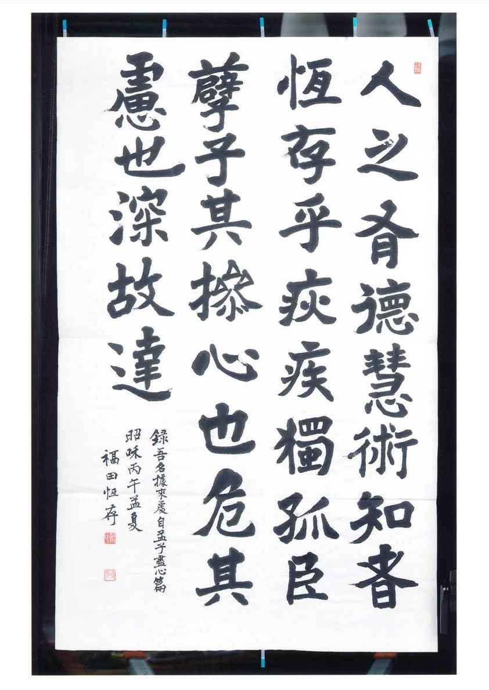
孟子 盡心篇上
人之有德慧術知者／恆存乎萸疾獨孤臣／迪子其操心也危其／慮患也深故達
《人の德（行）・（智）慧・（道）術・（才）知有る者は、恆に萸疾（熱病、災患）に存す。獨り孤臣、迪子（親に疎んじられる子）、その心をとるや危し、其の患を慮るや深し、故に達すと》
録吾名據來處 自孟子・盡心篇・昭和丙午孟夏 福田恆存
注・恆存といふ名前は、孟子の「盡心篇」に由來する。
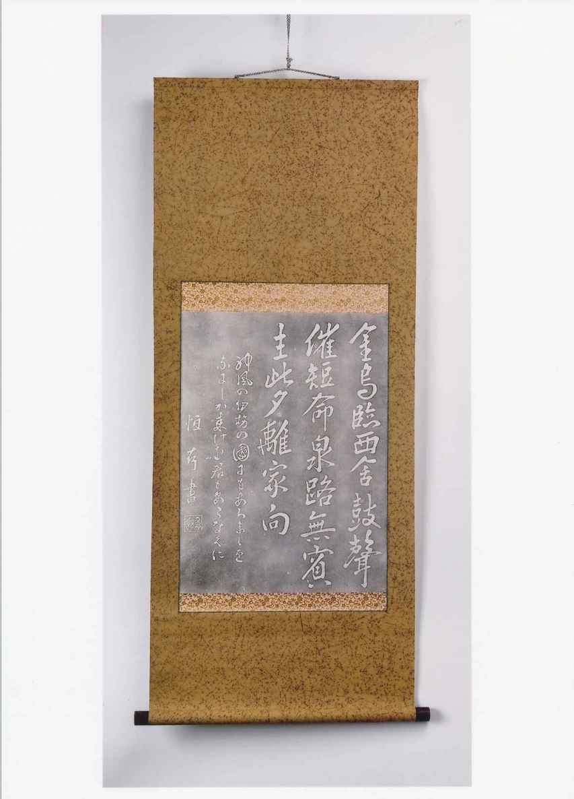
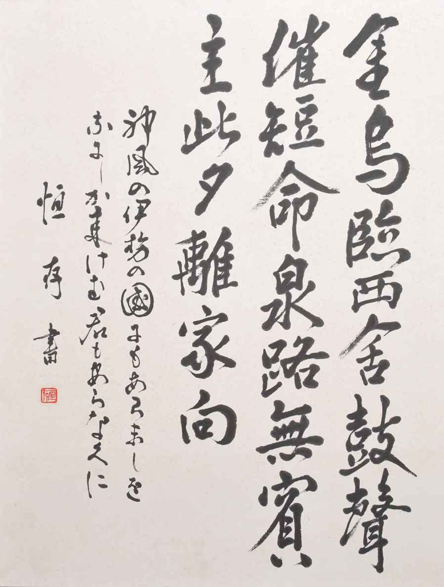
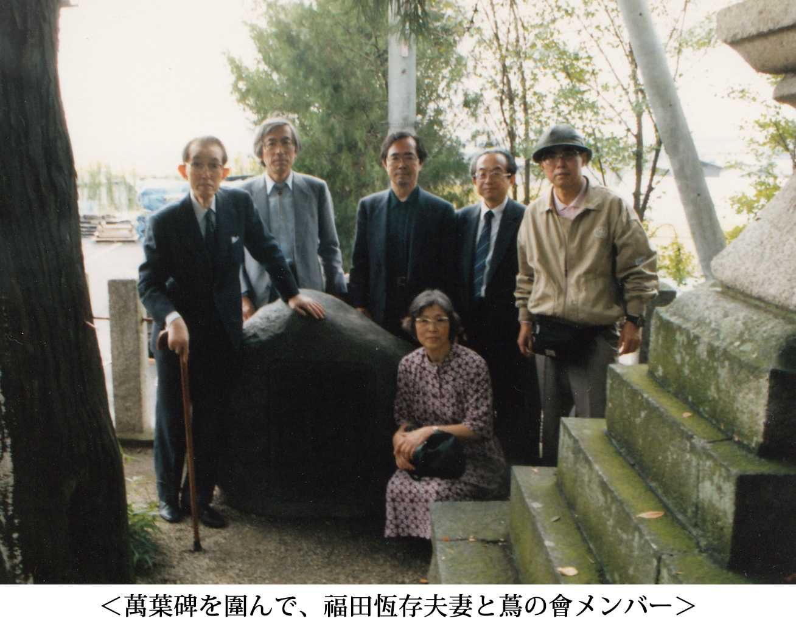
大津皇子（懐風藻）
金烏臨西舎 鼓聲／催短命 泉路無賓／主 此夕離家向
《金烏（太陽）西舎に臨らひ、鼓聲短命をうながす。泉路（よみぢ）賓主（客も主人も）なし、此の夕べ家を離りて向ふ》
大伯皇女（萬葉集一・一六三）
神風の 伊勢の國にも あらましを なにしか來けむ 君もあらなくに
注・奈良櫻井市には六十近い「萬葉歌碑」があり、その三十一番として、吉備池ほとりの春日神社境内にこの歌碑がある。
その拓本と、原本の書を載せた。下書きをされた百枚近くの内の一枚である。
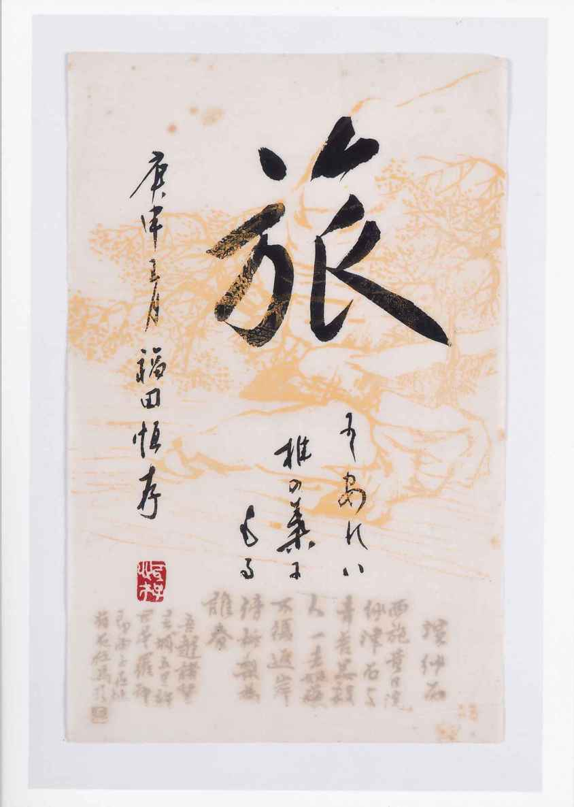
有間皇子（萬葉集二・一四一 挽歌）
有間皇子、自ら傷みて松が枝を結ぶ歌二首
〈家にあれば笥に盛る飯を 草枕〉
旅にしあれば 椎の葉にもる
注・孝徳天皇の皇子有間皇子は、中大兄皇子に謀反の疑ひをかけられて刑死。その護送途中の作とされる。福田恆存の戲曲『有間皇子』は昭和三十六年に上演されたが、日本の悲劇作品の雄と言へる素晴い舞臺で、主役は、後に吉右衞門を襲名した中村萬之助だつた。その折音樂を擔當した別宮貞雄は、後に松原正の臺本によりオペラに仕立てた。
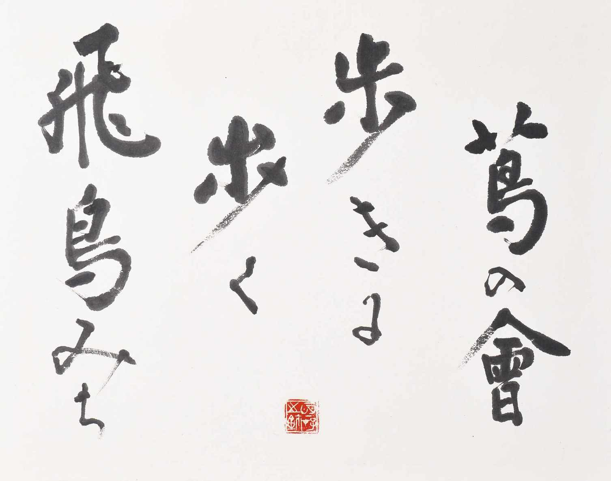
蔦の會 歩きに歩く 飛鳥みち
注・「蔦の會」とは、福田恆存先生を中心とし、年に數囘開れた讀書會を指し、意見の絡みあふであらうことを豫測して福田先生が命名されたもの。『福田恆存全集』第七卷の年譜、昭和三十二年を參照されたい。
「歩きに歩く」は、日本文藝家協會としての上奏文を理事長の井上靖が書いた文に、戰後私達は苦難の道を「歩きに歩いて來ました」とあつたと福田先生、それをもじつたことば
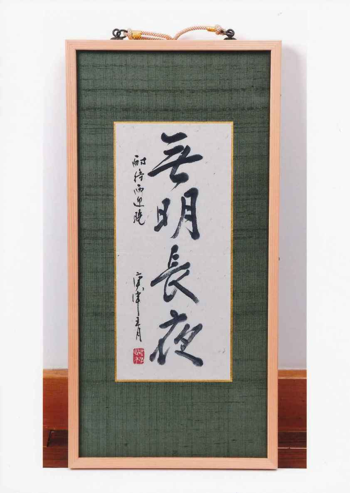
無 明 長 夜
耐待而迎曉庚申正月
注・昭和五十四年十月、韓國朴正煕大統領暗殺さる。福田恆存、著書『日米兩國民に訴へる』が縁となつてそれまで三囘、青瓦台にて朴大統領と歡談するまでの友好關係になつてゐた。當時自宅軟禁中の金大中氏をも岡崎久彦氏の案内で訪れてゐる。暗殺當日は劇團昴の京城上演前日であつた。翌年正月、元旦よりややあつて皆に屆いたのが、賀状に代るこの「無明長夜」の書かれた葉書であつた。
無明とは、佛教の十二因縁の第一、一切の煩惱の根本にある無智を言ふ。無明世界の暗い夜がこれから長く續くのかとの慨歎
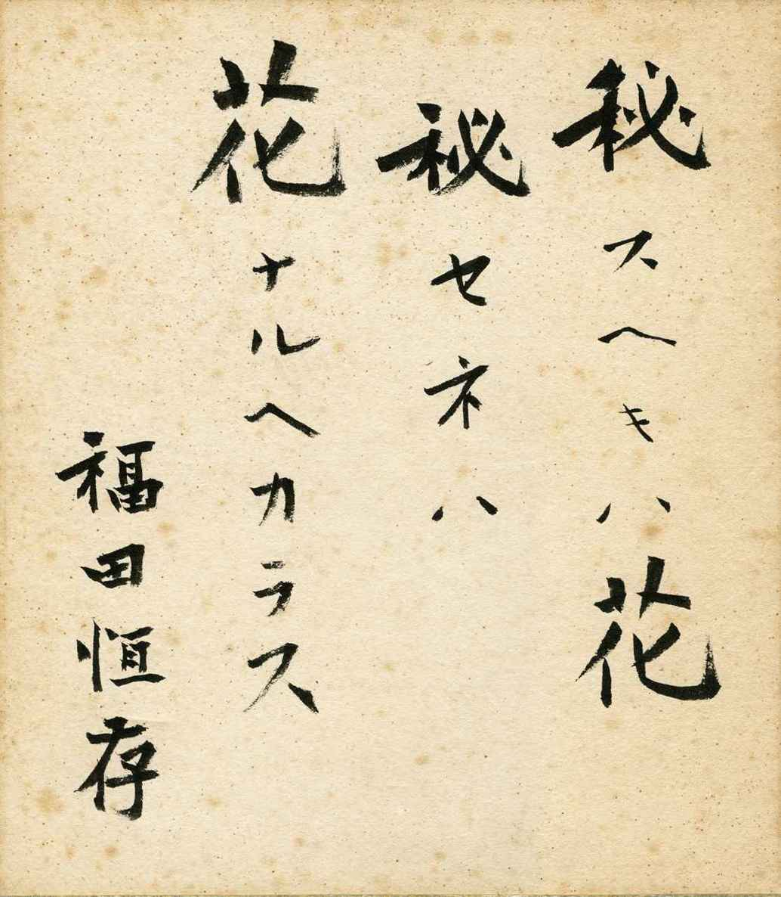
世阿彌（風姿花傳）
祕スヘキハ花 祕セネハ 花ナルヘカラス
注・風姿花傳には「祕するを知ること、祕すれば花なり、祕せずば花なるべからず」とあり、「花」と「面白き」と「めづらしき」の三つは同じだとする。
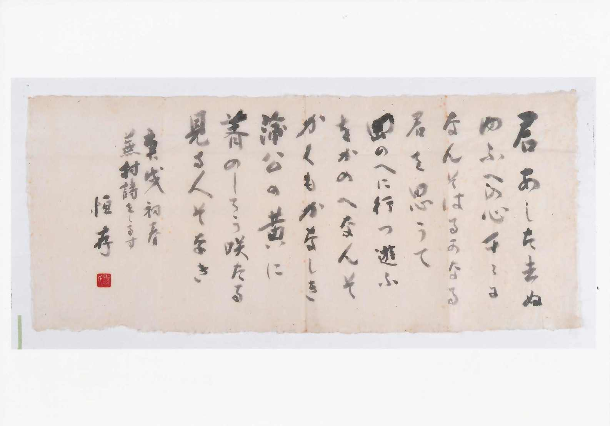
與謝蕪村（詩「北壽老仙をいたむ」）
君あした（に）去ぬゆふべの心千ヽに／なんぞはるかなる
君を思うて岡のへに行つ遊ふ／をかのへなんそかくもかなしき
蒲公の黄に薺のしろう咲きたる
戊初春蕪村詩をしるす恆存
注・蕪村は大坂に生れたが二十歳前後で江戸に出、弟子として俳人夜半亭宗阿と日本橋に住した。宗阿の死後は師の弟子の多い結城に移る。そこの俳壇の長老早見晉我は蕪村を我が子のやうにかはいがつたがやがて亡くなる。この詩にでてくる「君」は、北壽老仙といふ別の俳號を持つ晉我を指す。
萩原朔太郎は此の詩を「多少西歐の詩とも共通するところの、特殊な水々しさを感じさせる」として、『郷愁の詩人 與謝蕪村』の一書をものし蕪村を讚へた。
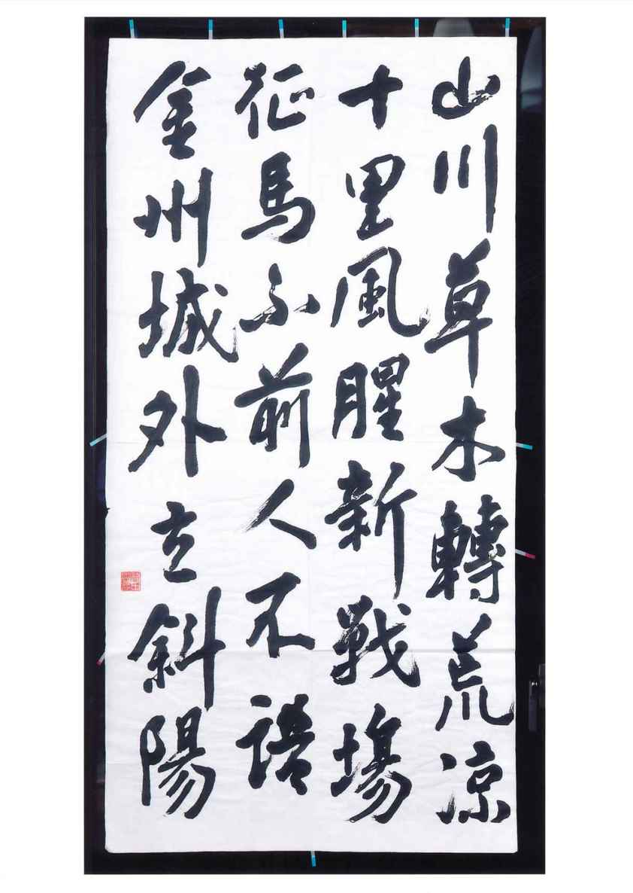
乃木 希典（金州城下作）
山川草木轉荒涼十里風腥新戰場《山川草木うたた荒涼十里風なまぐさし新戰場》
征馬不前人不語金州城外立斜陽《征馬すすまず人語らず金州城外斜陽に立つ》
注・乃木希典は長州の出身で陸軍大将にまで進んだ文武兩道の人。日露戦争では第三軍司令官として旅順を攻略したが、その攻撃の間に二子は戰死した。後に学習院長となる。明治天皇の大葬當日に自邸で妻静子と共に殉死。明治神宮創建の後に、東京赤坂ほかに乃木神社が出來る。
福田恆存先生は「乃木將軍と旅順攻略戰」といふ一文をものして、近代化に伴ふ日本の運命の犧牲者としての乃木將軍に涙してゐます。緻密な論證を加へたもので、名文といへます。一度全集、著作集などで御讀みいただくことを御奬めします。
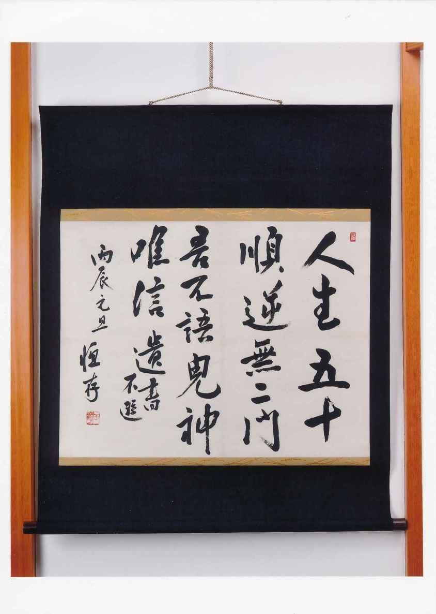
明智光秀（辭世）・論語（子不語怪力亂神）
人生五十／順逆無二門／君不語鬼神／唯信遺書不遜
丙辰（昭和五十一年）元旦恆存
注・明智光秀の辞世＝順逆無二門／大道徹心源／五十五年夢／覺來歸一元
論語（述而第七）＝不語怪力亂神
福田恆存作の劇『明知光秀』は昭和三十二年に初演され、松本幸四郎が主役の明智光秀を演じた。
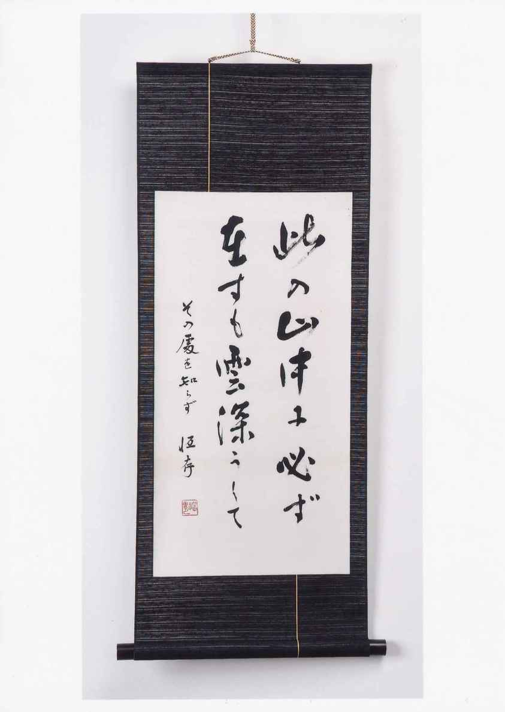
賈島（『唐詩選』尋隱者不遇＝隠者を尋ねて遇はず）
〈松下に童子に問へば言ふ「師は 薬を採りに去れり」と、ただ〉
在此山中雲深不知處《此の山中に在（いま）すも、雲深うしてその處を知らず》
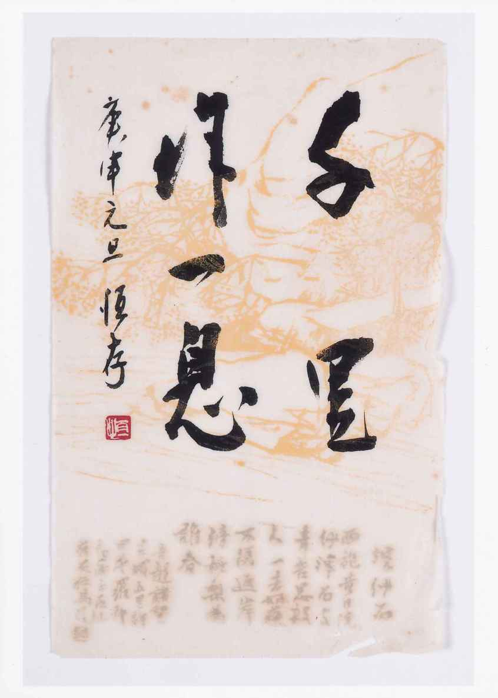
寒山詩（白鶴銜苦桃）
白鶴銜苦桃千里作一息《白鶴苦桃を銜へ千里を一息となす》
欲往蓬萊山 將此充糧食《蓬萊山に往かんと欲し これをもつて糧食に充つ》
注・友人の關係から福田先生、歌人の森村淺香の歌集に、初句にある「苦桃」と題し、喜ばれたといふ。
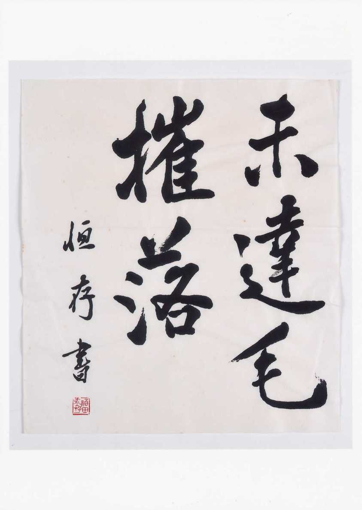
寒山詩（白鶴銜苦桃の續き）
未達毛摧落 離群心慘惻《未だ達せざるに毛は摧落し群を離れて慘惻たり》
却歸舊來巣妻子不相識《舊來の巣に却歸するも 妻子相識ず》
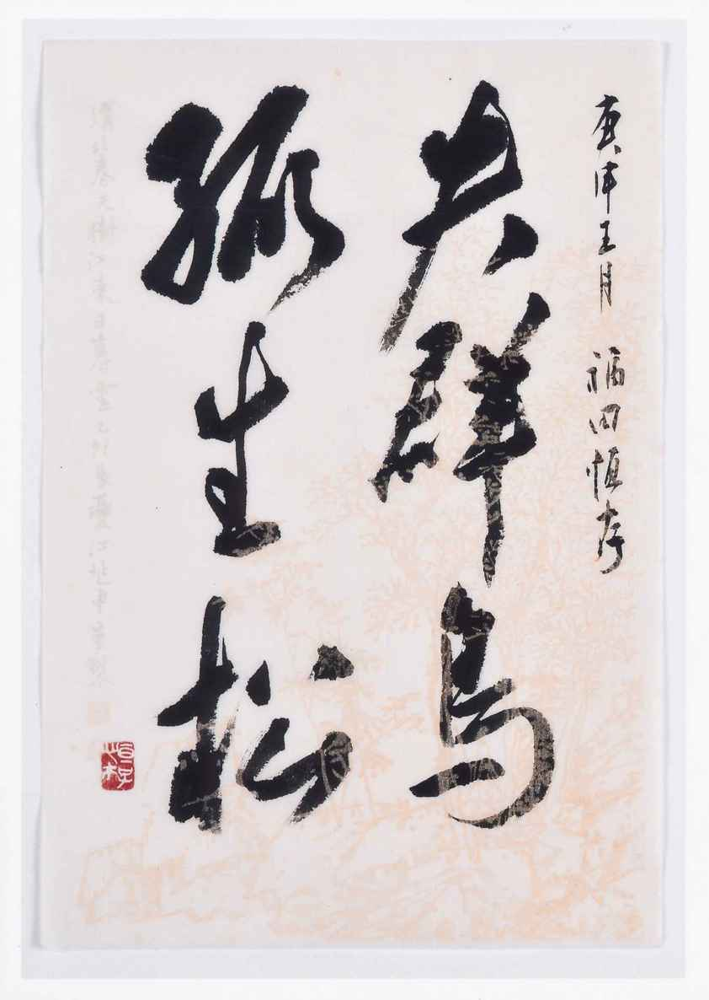
陶淵明（飲酒二十首 其の四 失群鳥）
庚申五月福田恆存
栖栖失群鳥《栖栖たる（心忙しい） 失群（群から離れた）の鳥》
因値孤生松《孤生の松に 値へるに因り（翼ををさめ）》
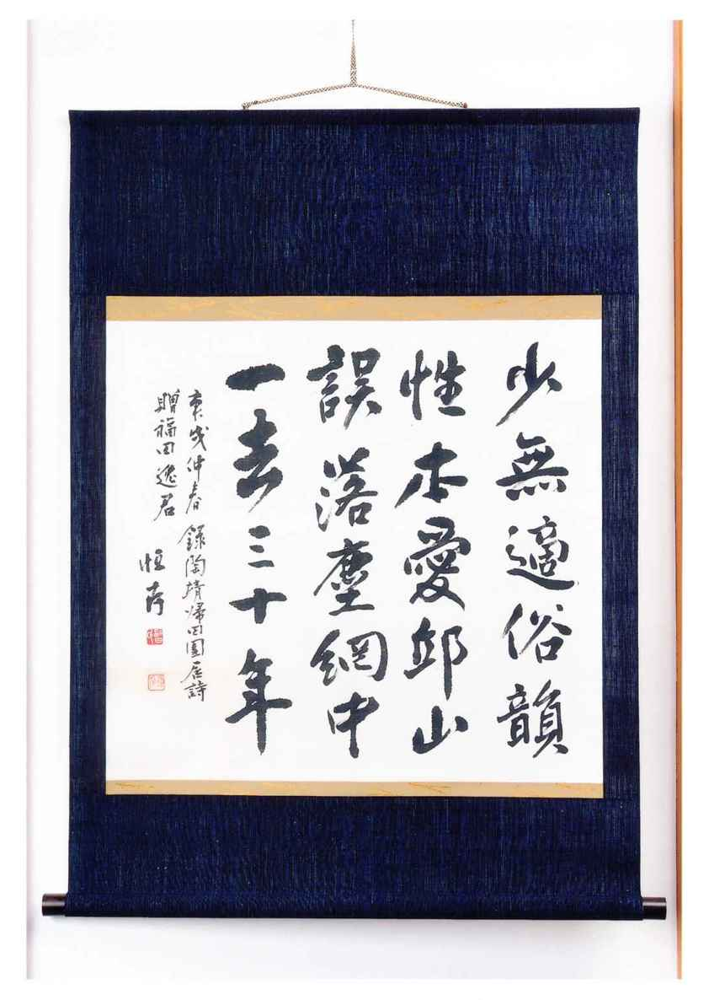
陶淵明（歸園田居五首・其一）
少無適俗韻性本愛邱山《少きより俗韻に適ふことなく性、本より邱山を愛す》
誤落塵網中一去三十年《誤りて塵網の中に落ち一たび去ること三十年》
庚戌仲春録陶靖歸田園居詩
贈福田逸君
注・次男福田逸君に贈つた書、塵網のごとき演劇の世界での煩勞三十年の後に一區切りをつけた心境に重ね合せたかと思はれる。福田先生、陶淵明の詩をこよなく好まれて、住ひの大磯を陶淵明の田園に重ねあはされてゐたのだらうか。この二作、子を思ふ親の氣持がよく表されてゐる。
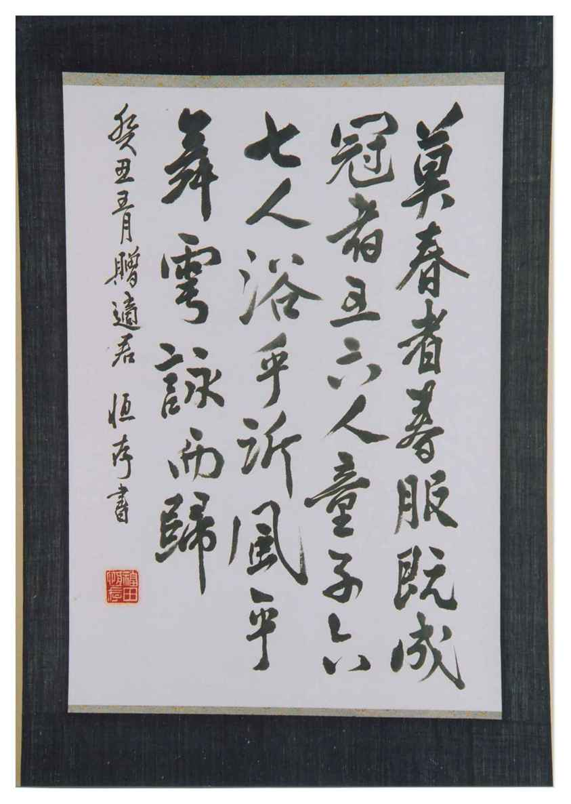
論語（先進第十一）
莫春者春服既成《暮春には春服すでに成る。》
冠者五六人童子六七人浴乎沂《冠者五六人、童子六七人と沂水に浴して（身を清め）》
風乎舞雩詠而歸《舞雩（雨乞の舞祭壇）に風（風にあたつて）し、癸丑五月贈福田適君恆存書詩を詠じて歸らん》
注・長男福田適君に贈つた書、この章句ののびやかな心境が、子供の悠陽たる性格に適つたものと思はれて書されたか。表裝には御自身の古い着物が充てられてゐる由。
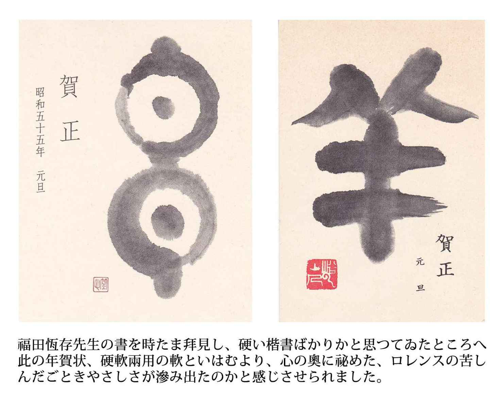
福田恆存（ふくだつねあり）
大正元年東京生れ。東大英文科卒。中學教師、雜誌編輯者、大學講師などを經て、戰後文筆活動に。評論、劇作、飜譯のほか、チャタレー裁判では特別辯護人を務めた。文學座を出た俳優達と劇團「雲」を設立、後「昴」として劇團は現在に至る。昭和三十一年、ハムレットの飜譯演出で藝術選獎文部大臣賞受賞、他にも劇作や飜譯で讀賣文學賞などを受ける。昭和三十三年、季刊誌『聲』に「私の國語教室」を書きはじめ、昭和三十四年には、戰爭直後に行なはれた國語改惡に反對する「國語問題協議會」の設立を主導した。平成六年歿
中村保男（なかむらやすを）
昭和六年東京生れ。東大英文科卒。飜譯家。譯書にコリン・ウィルソン『アウトサイダー』、チェスタトン『ブラウン神父』他多數。慶應大學、白軟大學などの元講師。平成二十年歿
谷田貝常夫（やたがひつねを）
昭和七年東京生れ。東大美術史科卒。私立普連土學園教頭。著書に『現代文要約法』、譯書にエド・マクベイン『金髮女』、ピーター・ラヴゼイ『降霊会の怪事件』、國語問題協議會事務局長
【福田恆存語録】日本への遺言
著 者 福田恆存
編 者 中村保男
谷田貝常夫
發行所 文字文化協會
〒１４６－００８５
大田區久ヶ原３丁目24番６號
發行日 平成26年11月20日
© Tsuneari Fukuda 2014